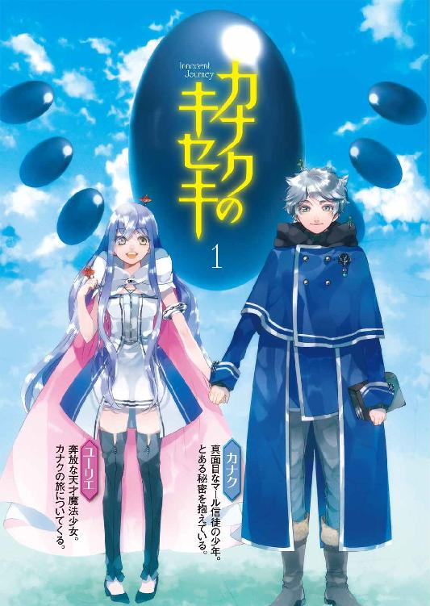
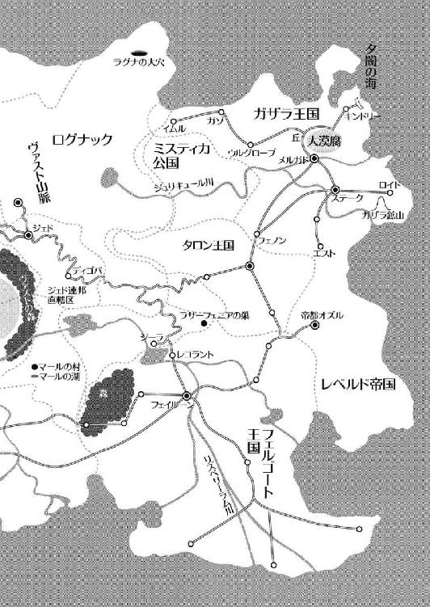
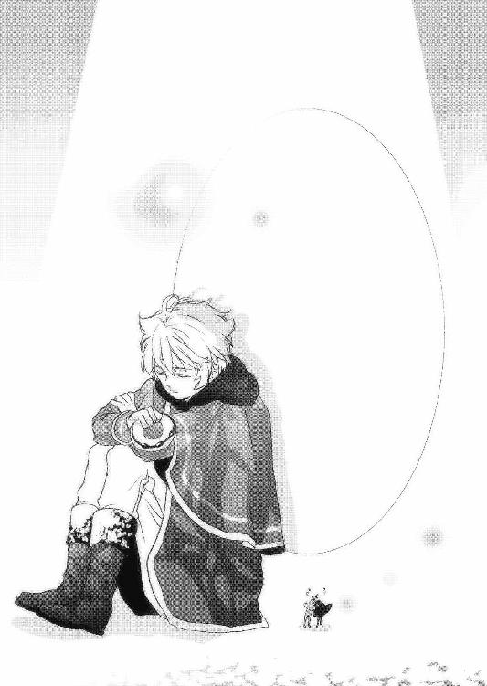

| カナクのキセキ1 (富士見ファンタジア文庫) | |
| 上総 朋大 | |
| 富士見書房 (2011) | |


本作品の全部または一部を無断で複製、転載、配信、送信したり、ホームページ上に転載することを禁止します。また、本作品の内容を無断で改変、改ざん等を行うことも禁止します。
本作品購入時にご承諾いただいた規約により、有償・無償にかかわらず本作品を第三者に譲渡することはできません。
本作品を示すサムネイルなどのイメージ画像は、再ダウンロード時に予告なく変更される場合があります。
本作品は縦書きでレイアウトされています。
また、ご覧になるリーディングシステムにより、表示の差が認められることがあります。
口絵・本文イラスト さらちよみ
ＣＯＮＴＥＮＴＳ

序章
千年前、アレンシアの地に深紅の髪を持つ魔女がいた。
過去の記憶を失っていた彼女はアレンシア各地を放浪し、当時、まだ未知の力であった〝魔法〟という技術を人々に教え歩いた。
彼女は過酷な宿命を背負っていた。彼女が長期に滞在した地や親しくした者には、例外なく災厄が訪れるのだ。
それ故人々は彼女を「紅の魔女」と呼んで蔑み、罵り、そして何よりも恐れた。
彼女は不幸になる人を作らぬよう、孤独な旅を続けた。雨に打たれ、風に吹かれ、雪に凍え、日差しに焼かれ......。
やがて彼女はアレンシア各地に石碑を建て、その胸に宿り続けた想いを刻んだ。
そして始まりと終わりの地で、彼女はその偉業に終止符を打った。
千年前、アレンシアの地に孤独な魔女がいた。
その名をマールといった。
魔法という技術を確立し、弱き者たちを助ける旅を続けたマールの功績は、後世になってようやく認められた。いつしか人々はマールを「紅の魔女」ではなく「暁の賢者」と呼んで景仰しはじめ、その魂の安らぎを祈るため、各地に神殿を建てた。
魔女は、アレンシアの〝神〟となっていた。
マールが残した石碑は信仰の象徴として各地で祀られた。石碑の文章を読もうとした者も現れたが、それは全ての石碑を見なければ記憶に残らないようになっていた。
人々から虐げられながらも崇高な行いを続けたマールが一体何を思い、何を残したかったのか。それを知りたい者は、自らの足で石碑を追って行かなければならなかった。
やがて熱心な信徒がマールの石碑を巡礼する旅を始めた。
それは〝石碑巡り〟と呼ばれ、国を越えた尊き行為とされた。
千年前、アレンシアの地に一人の偉大な魔女がいた。
彼女の言葉は、今なお大地に息づいている。
序章 ──双月暦１５１４年──
「はー、これでやっと学校も終わりだなー」
窓際の席に座る僕の隣で、親友のレニウスがそう息を漏らした。
ここセレンディア魔法学校は、あと三ヶ月で卒業の季節を迎える。
「何がやっと終わりだなー、よ。危うくもう一年過ごす羽目になりそうだったくせに！」
真正面の机に座ったリリルが、笑いながらレニウスに辛い言葉をぶつけた。
「俺はな、成績なんかどうでもいんだよっ！」
「そりゃいいわよねー、将来が約束された人はねー」
レニウスはこの地方一帯を掌握しているセレンディア侯爵の第二子だ。故に何があっても卒業できるだろうし、その後だって悪い立場になることはないだろうとの噂だった。
「あのなあリリル、俺にそんな口を利く女はお前だけだぞ。それこそ俺とつき合いたいって女子は、わんさかいるんだからな！」
「あたしを金と権力目当ての尻軽女と一緒にしないでよ！ あんたなんか土下座されたってつき合ってやらないわよ！」
「な、何もそこまで......」
うなだれてイジけるレニウスに、僕とリリルは目を合わせて笑った。
「リリルは卒業したらどうするの？」
「あたし？ あたしは適当にパーティ組んで旅に出るわ。やっと覚えた魔法だもん、実践でもっとスキルアップしたいしね」
確かにリリルのように旅に出る卒業生も多い。その他にも覚えた魔法で家業を手伝ったり、国の志願兵に応募したりする者もいる。
「それよりさ、カナクは？ やっぱ修道士になるの？」
「うん、そのつもりだよ。神官になるにはそれが一番の近道だと思うし」
レニウスが胡乱な目を僕に向けてきた。
「はー、このご時世、何を好きこのんで修行の道に進むのかねえ」
「僕はずっと聖神殿の養育施設でお世話になってきたからね。恩返しのためにも、立派な神官になりたいんだ」
「ま、お前くらい敬虔なマール信徒はなかなかいないからな。きっといい神官になれるさ」
そう言ってレニウスは僕の肩に手を置いた。
「それに関しては、あたしもそう思うわ」
リリルも、僕の肩を叩いて応援してくれた。
「それじゃ、卒業したらすぐ神官様の許で働くの？」
「いや、その前にやりたいことがあるんだ」
「「へ？」」
レニウスとリリルが不思議そうに視線を交わした。
「僕は、石碑巡りの旅に出る」
「「え、ええええええっ!?」」
二人が声を揃えて驚き、クラス中の生徒がこちらに視線を向けた。
「いくら神官になりたいっつってもよ、そこまでする必要があるのか？」
「そうだよ、やめなよ！ いくら何でも危なすぎるよ！」
石碑巡りは確かに危険だと思う。何日も野宿しなければならない旅だし、何といっても闇種族の国・ジェド連邦に行かなければならないのだから。
「いや、僕は行くよ。行かなきゃならない理由があるんだ」
僕は二人をよそに目を窓の外に向け、そこに偶然歩いていた女子の姿を視界に捉えると慌てて視線を外し、澄み渡る空を眺めた。
視線の先にいた女の子......ユーリエ・セレンディア。
彼女はこの魔法学校で二年生の時にはもう学ぶ事がなくなってしまい、最年少で魔導師の資格まで取ったほどの才女である。小柄だけど、まんまるでくっきりとした青緑の瞳に純真無垢な輝きを湛え、色白の肌は陶磁器のようになめらかで、長く伸ばしたすみれ色の髪をなびかせ歩く姿は、誰もが目を奪われた。
それは、僕も例外ではなかった。
「おいこらカナク！ なにボーっとしてんだよ！」
レニウスの言葉に、僕は体を震わせて目を戻した。
「あ、いや、なんでもないよ！」
「そっかあ？ 何か怪しいな」
レニウスが僕を押しのけて窓の外を覗くと、大きな声で叫んだ。
「お、ユーリエ！」
ユーリエはレニウスと僕のほうに顔を向けると、華やかな笑顔を浮かべて手を振った。
「おおっ!? いつもは冷たいユーリエが！ やはり本心では俺と結婚したいんだな！」
一人で興奮するレニウスの頭を、リリルがぽかりと叩いた。
「いやー、そりゃないと思うよー」
ユーリエはセレンディア家の養女で、現当主セレンディア公は長男ラティアか次男であるこのレニウスのどちらかと彼女を結婚させるつもりらしい。
ところが当の本人であるユーリエはそれに反発しているとか。何せ領主の家の噂だからみんな興味津々で、何かあるとすぐに噂が町中に広がる。
ちなみにレニウスとユーリエは義兄妹ではあるものの、年は同じだ。
「ユーリエの気持ちなんか関係ない！ ラティア兄様はコルセアかフェルゴートあたりから由緒正しき姫様を娶るはずなんだから、だったら俺はユーリエを──」
またリリルの平手がレニウスの後頭部にぺちんと決まった。
「ユーリエの親友として、今のあんたじゃおつき合いすら許さないわよ！」
「おまえ、男の頭をぽかぽかと──」
「おーう？ なんか文句あんの!?」
「............」
「何よ!? でかい声で言いなさいよ！」
「..................凶暴女」
さて、二人の時間を邪魔しちゃ悪いから、僕は席を外そうかな。
「あ、ちょっ、カナク！ どこ行くんだよ、一緒に戦っ......うぎゃああああああ！」
僕は背中に友の叫び声を受けながら、教室から出た。
そして三ヶ月があっという間に経ち、空から夏の日差しが降り注ぎ始めた頃、僕らはセレンディア魔法学校卒業式を迎えた。
形式ばかりの退屈な式が滞りなく終わると、僕とリリルは学校のシンボルである大樹の下で、大勢の女子に囲まれるレニウスを生暖かい目で見ていた。
「はー、よくもまあ、あんなに軽いのがいるものねぇ」
「レニウスはいい男だし、セレンディアの公子だもん。モテないほうがおかしいよ」
「あーやだやだ。あの光景、虫酸が走るわ！」
リリルは帽子を目深にかぶった。
「それはそうとカナク、あんた本気で石碑巡りに行くの？」
「うん。これから荷物を取りに宿舎に戻って、その後すぐにね」
「ふーん......そう......」
その時、女の子の囲みを脱出してきたレニウスがこちらにやってきた。
「いやっはっは、まいったなあ、俺と離れるのが辛いって女子が多くてなあ！」
「幸せ者ね、レニウスって」
「何か引っかかる言い方するじゃん、リリルちゃん！」
レニウスは突然、リリルの背後に回って抱きついた！
「────!!」
「なんだかんだ言っても、俺と離ればなれになるのは寂しいか？」
次の瞬間、レニウスの体がふわりと浮かんで宙を舞い......ドスーンと地面に落ちた。
「うぐえっ!!」
み、見事な投げ技！
「こっ、ここっ、このどバカぁ────っ！」
リリルは顔を真っ赤にしてレニウスの腹を何度も踏みつけた。
こんないつもの光景も今日で見納めかと思うと、無性に寂しくなってきた。
僕は大樹に背を預けて目を閉じ、学校生活を思い返した。
在学中はレニウスやリリルのような友達に恵まれて、とても楽しかった。
これから僕は、石碑巡りの旅に出る。ただ一心に、マールの足跡を追うんだ。
「おいカナク、こっちに来いよ！」
「アレやるわよ！ アレ！」
僕はリリルに手を引かれ、照りつける夏の日差しの中に出た。
周りには帽子を被り、マントを羽織ったクラスメイトたちが集まっていた。
「んじゃ、俺が音頭をとるぜ!?」
「誰でもいーわよ！ さっさとしなさい！」
レニウスはちらっとリリルを横目で見ると、声を張り上げた。
「みんな、ワンドを持て！ 準備はいいか!?」
「「「おお────っ！」」」
レニウスは手にしたワンドを天高く掲げ、もう片方の手を帽子に添え、声高に叫んだ。
「我々セレンディア魔法学校卒業生一同は、ここで学んだことを生涯の糧とし、いつ如何なる時もその教えを忘れることなく、己の道を突き進むことをここに誓う！」
レニウスを囲んだみんなが同じ格好をし、復唱した。
最後にレニウスは周りを見渡して、声を張り上げた。
「じゃあなみんな、また会おうぜっ!!」
「「「「「おおおおおおおおおおおおおおおおおおおおおおおおおおおおおおおっ！」」」」
僕らは歓声を上げると同時に、帽子を思い切り空に放り投げた。
それは蒼穹に映える、力強い鳥の羽ばたきにも似ていた。
第一章・表 カナクとユーリエ
僕はみんなと別れて宿舎の自室に戻ってくると、すぐに制服から修道衣に着替え、身の丈ほどあるローブを身にまとった。そして魔法陣を描く為に必要な樫の木のワンドを懐に入れ、旅に必要な道具が詰まったバックパックを背負った。
支度は既に済んでいる。路銀はずっと貯めてきたし、学校を卒業したことで時間に縛られることもなくなった。これで僕は、安心して旅立つことができる。
マール信徒にとって石碑巡りは最も尊い行為だ。
千年前、このアレンシアを旅した暁の賢者・マールが残したという石碑。それにはマールの筆跡が残されているという。
人々に虐げられながらも崇高な行いを続けた彼女が伝えたかった事とは、一体何だったのか。
長年、知りたかった謎を追える。それは譬えようのない高揚感と、期待と不安と......いろんな感情がごちゃ混ぜになって、僕の胸を高鳴らせた。
そして、僕にとってこの旅はそれだけではない大きな意味もある。
あの可憐なユーリエ......彼女を見ただけで揺らいでしまうこの弱い心を、旅の中できっちりと制御できるくらい成長したかった。
この旅をやり遂げれば、きっと僕にとって大きな自信になるはずだ。
さあ......いよいよ始まるんだ！
僕は外に出て、記念すべき旅の第一歩を踏みだそうとしたその時だった。
「カーナク!!」
突然、僕を呼ぶ声が聞こえた。
その声の方向に目を向けると、そこには笑顔のリリルと、俯き加減で僕を見つめている女の子がいた。
「な、何で!?」
僕が咄嗟に走り出すと、リリルはいきなりワンドで魔法陣を空中に描き、呪文を唱えた！
「逃がさないわよっ!!......螺旋巻蔦の樹縛!!」
足止めの魔法だった！
地面から無数の蔦が現れ、僕の足めがけて襲いかかってきた。いくつかはジャンプして躱したものの、片足だけ蔦に絡まれてしまった！
そして僕は空中でバランスを崩し、そのまま壁に額を痛打した！
「な......??」
朦朧とした意識の中、静かに近づいてくる二人の白い足が目に入ったのを最後に、あえなく気を失った。
「......カナク......カナク！」
僕は誰かに抱かれていた。
頭がぼーっとする。
何が起きているんだろう？
「ま、大丈夫でしょ、あは、あはは......」
別の方向から、無責任な声が聞こえてきた。
「それにしても、さすがに男子一人をここまで運ぶのは骨が折れる作業だったわね」
「協力してくれて、ありがとね」
「いいってことよ！ それより、まさかいきなり逃げ出すとは思わなかったわ！」
「彼、何故だかずっと私を避けてるの。今までだって何度も彼に手を振ったのに、ちっとも応えてくれなくて。さっきだってあんなに必死に逃げようとして......ひょっとして私のこと、嫌いなのかな？」
「さあ、コレがあんたのことをどう思ってるのかは知らないけど、あとはあんた次第なんじゃないの？」
「うん......そ、そうだよねっ！」
「とにかくこれからが勝負なんだから。後は自分で、うまくやんなさいよ！」
「うん、私、がんばるわっ！ ありがとう！」
足音が一つ遠ざかっていって、軽そうなドアが閉まる音がした。
ここはひょっとして、学校!?
「うう......」
僕はうっすらと目を開けた。
やはり、ここはセレンディア魔法学校の教室だった。
「あっ、気がついた？」
心に染みるような、澄んだ声が降ってきた。
それに後頭部が柔らかくて温かい。
目を開くと、僕は驚きのあまり言葉が上手く出なかった！
「ゆ、ゆゆ......ユーリエ!?」
僕をのぞき込んでいたのは、ユーリエその人だった。
しかも......僕に、ひざまくらをっ!?
「うわああああああああああああああああああああああああっ」
僕は慌てて体を起こし彼女から離れると、空になって軽くなった机や椅子を巻き込んで派手に転んだ。
「ああっ！ だ、大丈夫？」
「いてて......」
僕は混乱する頭を抱えながら起き上がった。
何故、ユーリエがここに？ リリルは？ 何がなんなの??
「ねえ、カナク」
ユーリエは畏まって、僕に声をかけてきた。
「リリルから聞いたの。あなたはこれから石碑巡りに行くんでしょう？」
「う、うん。そうだけど？」
ユーリエは少し目をそらして、それから力強く言った。
「その旅に......わ、私も......連れていってほしいの」
「はあっ!?」
驚きすぎて、一瞬目の前が真っ白になった。
ユーリエは服こそワンピースだったけど、冒険者用の大きなブーツを履き、その傍らにはパンパンに詰まったショルダーバッグが置かれていた。
準備万端だった。
「だ、駄目だよ！ 君だけは絶対に連れていけない！」
「うっ......な、なんで!?」
「石碑巡りは、もの凄く過酷な旅だからだよ！」
「わかってるわ、そんなこと」
「いいや、君はわかっていない。石碑巡りでは、どうしてもあのジェド連邦にいかなきゃならないんだよ!?」
「知ってるってば！」
「第一、若い男女がそんな長旅をして、な、何か間違いでもあったら──」
ユーリエは顔を真っ赤にして、上目遣いで聞いてきた。
「間違い、起こす？」
僕は机をなぎ倒しながら後ずさった。
かっ、可愛すぎるっ！
「いいい、いや、そんなことはないけど──」
「じゃ、じゃあいいでしょう？ 私は魔導師の資格も持ってるし、絶対役に立つよ？」
「それだけじゃないよ！ 君はこの町の領主、セレンディア公の娘じゃないか。それが見知らぬ男子と一緒に二人っきりで旅をするなんて、そんなの許されるはずがないよ！」
「ちゃんと認めてもらったもん！ ただの旅ならダメだけど、石碑巡りは神聖なものだから、それならいいって！」
「......ねえユーリエ、何で僕となの？ 特別親しいわけでもないのにさ」
ユーリエは眉間にしわを寄せ、顔を紅くした。
「それは、その、か、カナクが......」
「え？」
「か、カナクには好きな人がいるってリリルに聞いたからなの！ マール信徒は〝好きな人がいたなら、決してその人以外を見てはならない〟んでしょ？
だからカナクが私を好きじゃない限り、私は安心して旅ができるでしょう!?」
「なるほど。確かに、敬虔なマール信徒ほど女性にとって安全な人はいないもんね」
そっか......だから、僕なのか。
それはそれで、少し寂しかった。
「あ、ぅ......違......」
「え？」
「ななな、何でもない何でもない」
ちょっと挙動不審なユーリエに、僕は精一杯の作り笑いを見せた。
「じゃあさ、もう一つ質問。ユーリエには好きな人、いる？」
ユーリエは少し俯いて、恥ずかしそうに答えた。
「そ、それは......うん、いるよ」
胸が、ずきんと痛んだ。
やっぱり、彼女と一緒に旅をするなんて無理だ。
たったひとつの言葉で、こんなに動揺してしまうんだから。
「ユーリエ、やっぱり駄目だよ。いくら僕が敬虔な信徒とはいっても、まだまだ未熟者だもん。だから、君と一緒に旅をするのは──」
その時だった。
ユーリエは僕の言葉をかき消すように、白い太ももを露わにして脚を振り上げると、激しい音を立てて机に叩きつけた!!
「だああああああああああああああああああもー、ごちゃごちゃうるさぁーいっ！」
え......え？
「ジェドがどーたら家がどーたらなんたらかんたら、そんなの関係あるかあ──っ!!」
ぼぼ、僕の知ってるユーリエっておしとやかで......。
「カナクはどうだか知らないけど、私はもう一、人、前ッ！」
清楚可憐な乙女で......。
「そうなるために、今まで頑張ってきたんだから！」
気品に満ちあふれてて......。
「それを、あーだこーだと！ 何ようっ!!」
いつも白百合のような笑顔を振りまく温雅な女の子だったはずじゃ......。
「私はあなたの石碑巡りについて行くって決めたの！ これは決定なの!!」
「そ、そんな......」
「カナクが連れていってくれないならいいもん！ 私は一人で行くわ！」
「え、え？」
「あー、不安だなー。きっと旅の途中で夜盗とか魔物に襲われて、か弱い私はあられもない格好にされて、きっとあんなことやこんなことをされちゃって──」
「わかった、わかったから！ そんな恐ろしいことを言わないでよ！」
僕はユーリエの瞳を覗き込んだ。本気の目だった。
ダメだ、これ以上は説得できそうにない。
こうなったら......聖神殿までは話を合わせよう。
ユーリエは何故か僕の旅について来たがっているけど、分別のある神官様なら、きっとユーリエを厳しく諫めてくれるに違いない。まだ一人前にもなっていない男女が二人きりで旅をするなんて馬鹿げてる。世間を甘く見るんじゃない......って感じで。
「じゃあ、私を連れてってくれる？」
頰を染め、唇を尖らせて言うユーリエに、僕は天を仰いで渋々口を開いた。
「わかったよ」
「やった！ ありがとーっ！」
「......あらかじめ言っとくけど、僕は君を守る自信はないよ？」
「大丈夫よ！ いざとなったらあなたも守ってあげるから！」
「さっき、か弱いって──」
「そんじゃ、早速行こ！ 最初の目的地はここ、セレンディア・マール聖神殿の石碑よ！」
一人で意気上がるユーリエを前に、僕は嘆息して肩を落とした。
マールがアレンシア各地に残した石碑は四つある。
勢いのある新興国コルセア、アレンシアにその名を轟かす大国フェルゴート、闇種族が暮らすアレンシアで最も危険な国、ジェド連邦。
そして残る一つはなんと、ここセレンディアの町にあるのだ。
鼻歌交じりでご機嫌なユーリエと対照的に肩を落として歩く僕は、学校を出て第一の石碑が安置されている聖神殿にやってきた。
扉を開けて礼拝堂に入ると、そこには立派な神官衣に身を包んだ初老の男性がマールの像に向かって祈りを捧げていた。この人はここセレンディア・マール聖神殿の神官長であり、両親のいない僕の父親みたいな存在だ。
僕らに気付いた神官様は、立ち上がってゆっくりと振り向いた。
「ようこそ、セレンディア・マール聖神殿へ......っと、なんだ、君かカナク。それに......おお、これはこれは、ユーリエ・セレンディア嬢ではないか！」
なんだ、って。
「二人ともその格好は......そうか、とうとう旅立つのだな」
僕は神官様の前で跪いた。
「はい。おかげさまで本日、セレンディア魔法学校を卒業することが出来ました。これを機に僕は石碑巡りを行い、偉大なる暁の賢者・マールを偲びたいと思います」
「おお......カナク、本当に立派になったな。私はとても嬉しい」
「全てマールのご加護と、神官様のご恩情のたまものです」
「そうか、そうか」
神官様は満足そうに微笑んだ。
「では、二人とも私について来なさい。石碑の間へ案内しよう」
「えっ!?」
あ、あれ？ ここは神官様が叱ってくれないと！
「あ、あの、二人で、ですか？」
「そうだぞ。何か問題でもあるのか？」
「いや、だって......僕ら、魔法学校を卒業したばかりの未熟者ですよ!?」
「何を言ってるんだね、お前は？」
「その......まだ未熟者の男子と女子が二人きりで旅をするというのは──」
「あー、あ？ ユーリエ嬢から何も聞いておらんのか？」
え？ え？ 何を？
「先日セレンディア公がお越しになってな、ユーリエ嬢が石碑巡りをしたいと聞かないので、誰か供になる敬虔なマール信徒はいないかと尋ねられたのだ。
そこでカナク、私はお前を薦めた」
「な、何故そんな──」
「ユーリエ嬢は公にとって大事な愛娘だ。故に、しっかり護衛も出来るものでなければならん。ならば、お前しかいないと考えたのだ。言っている意味はわかるな？」
僕は啞然とした。
神官様は、僕を過大評価しすぎてる！
「さあさあ、私について来なさい。石碑を見るんだろう？」
「は、はい」
僕は歩き出す神官様の背中と、ウインクしながら舌を出して神官様の後を行くユーリエの顔を、呆然と眺めていた。
聖神殿の奥、神官様が持つ燭台の明かりを頼りに暗く湿った通路を進んで行くと、やがて錆だらけの鎖と大きな錠で固められた鉄の扉が姿を現した。
神官様は燭台をユーリエに預け、錠を外し鎖を取り払った。
「さあ、ここから先は石碑巡りの領域だ。私はここで君達を待とう」
「はい」
ユーリエは元気よく応え、燭台を神官様に返して僕の隣にやってきた。
「まずは一つ目ね」
「はあ......」
僕は何か釈然としないものを拭いきれなかったけど、今は石碑に集中することにした。
「さ、行きましょっ！」
ユーリエは笑ってそう言うと、驚くことに手を握ってきた。内心かなり動揺したけど、すぐにそれを隠して扉を肩で開け、中に入った。
扉を閉めると、僕らは濃い闇に包まれた。
「かか、カ、カナク、ちゃんとそばにいる？」
「隣にいるよ。怖い？」
「うん......暗いの、やだ」
か細い声で答えるユーリエは僕の手を強く握り、体をすり寄せてきた。
「む、無闇に歩きだしたら、ここに戻って来るのは難しそうね」
手のひらから、彼女のぬくもりが伝わってくる。
僕は必死に雑念を振り払い、辺りを注意深く見回してみた。すると前方に、うっすらと青白い光があるのに気が付いた。
「あ、きっとあれだ！ 行こう、ユーリエ」
「え、わわ、ちょっと！」
僕は強ばるユーリエの手を引きながら歩き出した。
近づいてみると、その光の正体はすぐにわかった。僕の背丈をゆうに越える巨大な卵形の黒い岩が、鈍い光を放って立っていたのだ。
「これが、マールの石碑？ 何て大きいの......」
「石碑にはマールの言葉が刻まれている、はず、なんだけどな......あれ？」
目を凝らして石碑を観察しても、何か刻まれているどころかドワーフが作る宝石のように美しくつるつるしていて、傷一つ付いていなかった。
「あれ～、おかしいな──」
その時だった。石碑から発していた青白い光が突然激しい閃光と化し、辺りの闇を瞬時にして吹き飛ばした。
「うわあっ！」
「眩しっ！」
ユーリエは僕の胸に顔を埋め、僕は片手でユーリエをかばいながら目を覆った。
暫くして目映い光に慣れてくると、僕はゆっくりと辺りを見渡した。
「な、これは......ユーリエ、ユーリエ！ 周りを見て！」
「う～ん、暗くなったり明るくなったり何なのよ......わっ！」
僕らは驚きのあまり、暫し言葉を失った。
足下に広がるのは、穏やかな湖面だった。岸には背の高い草が繁茂し、さらに先はなだらかな丘になっていた。
人の気配はなく、周囲の雄大な山々と深い森が、湖を抱くように囲んでいた。
「どういうこと、これ!? 部屋の中だったわよね!?」
「マールの石碑には魔法が込められているらしいんだ。きっと、これがそうなんだね」
ふと、背後に強いマナを感じて振り返ると、宙に浮いた石碑が輝きを放っていた。
それは徐々に強さを増していき、バシュッという音と共に円形の魔法陣を出現させた。半透明の青白い線で描かれ、外周に不規則な文字が躍りながら並び、それがちかちかと点滅し始めると、陣の中央に文章を浮かび上がらせた。
「そうか、これがマールが残した言葉なんだ!!」
「ただ石に文字が刻んであるだけだと思ったら、まさか石碑に魔法陣を仕込んでおくとは......さすがは暁の賢者・マールってとこね」
僕らは感嘆しながら、魔法陣の中で躍る文字に目を向けた。
尊敬するマールの言葉を、ついにこの目で見ることが出来るんだ！
僕は夢中になって、マールの言葉を読んだ。
こんなに幸せなことがあっていいんだろうか。
彼が好きな人、それは私だったのだ！
そうであればどんなにいいかと願っていたことが、まさか現実になるなんて。
私は、なんて幸せなんだろう！
もう我が儘を言うのはやめよう。困っている人がいたら、悩まずに手を差し伸べよう。
彼が自然にやっていることを、私もやるんだ。
彼に、もっともっと好きになってもらう為に。
永遠に、彼のそばにいられる為に......。
双月暦５４５年 マール
これがあの生涯孤独な旅を続けねばならなかった、マールの記憶？
それは僕が想像していたものとかなり違っていた。次世代へのメッセージとか、アレンシアに対する予言とか、もっとミステリアスなものだと思っていた。
でもこれは、まるで幸せを摑んだ女の子の溢れる想いのようだった。
「紅の魔女と呼ばれて恐れられたマールだから、もっと怖いことを書き残したのかと思ったら、意外ね」
「僕も、まさかこんな内容だとは思わなかった」
「ねえカナク、マールはこの〝彼〟と幸せになったの？」
「残念だけど、それはないよ」
「何で？ この〝彼〟とマールは愛し合っていたんでしょ？」
「だってこの文章の最後、５４５年って書いてある。５４５年といえばマールはもうかなり高齢だし、この年にマールは人知れず亡くなったって説が有力なんだ」
「そっか......じゃあ何で、こんなに幸せそうな文章を石碑に残したんだろ？」
「確かに、この文章は不思議だね。謎が多いよ」
マール史には彼女がこれほど想いを寄せ、相思相愛だった異性なんて載っていなかった。
「老年になってもマールの中には、ずっとこの〝彼〟がいたのかもね」
「うん。きっと、そうだと思うよ」
僕は静かに幸せに満ちたこの想いを読み返していた。過酷な宿命を背負っていたマールが、こんな想いを胸に秘めていたとは。
「〝彼〟って、ひょっとしたらノートリアスのことかもしれない」
「ノートリアス？」
「マールの唯一の道連れさ。彼がマールの偉業と半生を記録したものこそが、今に伝えられているマール経典の原本になったんだ」
「マールって、ずっと一人で旅をしていたんじゃなかったの？」
「ノートリアスはすぐ病に倒れてマールと離ればなれになっちゃったんだ。彼がマールと一緒にいたのは、ほんの短い期間だよ」
「なんだかかわいそうね......うん？ これは──」
ユーリエはそう呟くと、その宝石のような瞳を忙しなく動かし始めた。
「ねえユーリエ、君は何でそこまでして石碑巡りを──」
「静かにッ！」
「なな、何？」
「この書式は......あれがこうなって......ここがこう繫がって......」
僕にはユーリエが何をしているのかよくわからなかった。ただ彼女は魔法陣の外周に躍る文字を丹念に調べているようだった。
やがてユーリエは目を閉じて一息つくと、ぱっと目を見開いて僕の目を覗き込んだ。
「ねえカナク、改めて聞くけど、ちゃんと私を旅に連れて行ってくれる？」
僕は逡巡した。
石碑巡りをすることは僕の積年の夢だったし、同時にユーリエに対する想いを自制するための、心を鍛えるための旅でもあるんだ。なのにユーリエ本人がついてきてしまったら──もし僕が感情を爆発させてしまったら──彼女は、途方もない傷を負うことになる。
「ユーリエ、その答えはもう少し後でいいかな？」
「え？」
「もっとじっくり考えたいんだ。それからじゃ、駄目かな？」
「......わかったわ。でも、なるべく早く答えを聞かせてね」
「ありがとう、ユーリエ」
「いいの。私の我が儘なんだから」
僕は石碑を見上げ、マールに祈りを捧げた。
やがて石碑は輝きを失い、僕らは再び黒き静謐に身を委ねた。
第一章・裏 マールの旅
気が付くと、私は鬱蒼とした森の中にいた。
草木は静かに朝の光を待ちわびており、清々しい夏の夜空には数え切れないほどの星が鏤められ、紅と蒼の月が辺りの雑草を紫に染めていた。
透き通るような空気が心地よい夜だった。
でも、どういうわけか、私は髪も服も全てずぶ濡れで、さらに左腕を火傷していた。
どうしてここにいるのか、私は誰なのか......まるで思い出せなかった。
混乱する頭を抱えながら辺りを調べてみると、ここは大きな山に囲まれた丘の上だった。
そして眼下に微かな明かりがあるのに気づくと、私はそれを目指して丘を下った。
辿り着いたのは、小さな村だった。
私は一番大きな家だった村長宅を訪ね、一晩の宿を願い出た。村長さんは独り身の気の良い老人で、快く私を家の中に入れ、温かいスープを出してくれた。
ひと心地つくと、村長さんは私に名を尋ねた。でも私は名前すら思い出せず頭を振って俯き、そのまま倒れるように眠ってしまった。
翌朝、村は深夜に突如来訪した私の噂で持ちきりになっていた。さらに数日もすると、同じ年頃の男の子が寄って来ては、甘い言葉を囁くようになった。中には大胆に愛の告白をしてきた男の子もいた。
でも私は、彼らの好意を全て断った。何故なら、私には既に心に決めた大切な人がいたからだ。顔も名前も思い出せないけれど、〝彼〟は私の奥底に、確実に存在した。
このままじゃいけないと決心し、お世話になった村長さんに翌日旅立つと告げた。
ところが村長さんは言葉をはぐらかせてまともに聞こうとせず、それどころかこの村で暮らさないかと言ってきた。散々世話になっておきながら別れの言葉も告げずに旅立つことはできず、私はなかなか村を離れられずにいた。
そしてそれは、ある日唐突に起こった。おつかいで麓の町に来ていた私は、そこで大地震に襲われた。妙な胸騒ぎを覚えた私は急いで村へ引き返すと、そこにあったはずの村は跡形も無くなっており、何処からか湧き出した水が全てを呑み込んでしまっていた。
私は失意の中、最も望まぬ形で村を出た。まだ名前がなかった私は今はもう存在しない、その村の名を受け継ぐことにした。
その日から、私は「マール」と名乗るようになった。
第二章・表 カナクとユーリエ
石碑の部屋を出ると、扉の外にいた神官様が迎えてくれた。
「おお、二人とも無事に石碑の言葉を読めたかね？」
「はい、ありがとうございます」
「そうかそうか。では、戻るとしよう。そろそろ蠟燭の火がもたないからな」
僕は扉に鎖をかけて施錠すると、ユーリエと共に早足で歩く神官様の後をついていった。
その後、僕らは応接室に通され、神官様は僕らに熱いコーヒーを出してくれた。
「さてカナク、お前は既に知っているとは思うが......試しに部屋の中で見た文章を、私に教えてみてくれ」
「わかりました。えっとですね......ん？ おおっ？」
頭を抱える僕を、じれったそうに見ていたユーリエが口を開いた。
「もう忘れちゃったの？ いいカナク、あの石碑にはね、え～......あや？」
ユーリエは眉間にしわを寄せて人差し指を額に当てた。
「お、思い出せない!? ね、ねえカナク、これどういうこと？」
「石碑に残された文章は、四つ全て見なければ記憶に残らないんだよ。そしてもし途中で石碑巡りをやめれば、永遠に石碑の文章を覚えることが出来なくなるんだ」
でも、知っているだけなのと実際体感するのとは全く別だった。たった今見てきて、全神経を注いで覚えてきた内容が、きれいさっぱり白紙になっているのだ。
それは思った以上にもやもやする感じがした。
「へ～、やっぱりすごいね、マールって」
「だからこそ、僕は絶対に石碑巡りを最後までやり通したいんだ。だからもし君が旅をやめたいなんて言い出したら、僕は躊躇なく君との旅を終わらせて、一人で旅をするからね」
「う......むー」
ユーリエは寂しそうに俯いた。
冷たい言い方かもしれないけど、それだけの覚悟がなければ成し遂げられない旅だし、彼女の身の安全を考えれば、出来るだけ早い段階でそうなった方がいい。
その時、神官様が口を開いた。
「あー、二人とも、そろそろいいかな？」
「あっ、す、すいません！」
「では、二人にこれを授けよう」
神官様は懐から銀の腕輪を二つ取り出した。
「それは、石碑巡りの証！」
「そうだ。二人とも一つずつ手に取りなさい。まだ腕にはめてはいけないぞ」
僕とユーリエはちらとだけ視線を交わし、神官様の指示に従って腕輪を手にした。
「きれいね」
「ねえユーリエ、君は......」
「はい、カナク。あなたの腕輪」
ユーリエは僕の言葉を遮って腕輪を取ると、それを差し出してきた。二本の薔薇が円形に捻れ、その中心に短髪の女性の横顔が赤いシルエットで描かれている。
それはセレンディア・マール聖神殿のシンボルだった。
「あ、ありがとう」
「えへへ」
「何か、急に機嫌がよくなったね。どうしたの？」
「おそろ......」
「え？」
「ふおっ、なな、なんでもない、なんでもないよ！」
顔を真っ赤にしてそう言うユーリエは、何故か慌てていた。
何だろ、本当に。
「うおっほん、では、始めるぞ？」
神官様の咳払いに、ユーリエが飛んで驚いた。
「全知全能なる我が主マールよ。今このセレンディアの地より、新たな石碑巡りが誕生いたしました。どうかこの二人を、見守って下さりませ！」
神官様が祝詞を呟くと、腕輪が徐々に熱くなっていった。
「わわ、何これ──」
「ユーリエ！ しっかり握ってて！」
「でも、こんなに熱くなってるよ!?」
「いいんだ。これが石碑巡りに与えられる、最初の儀式なんだ」
神官様は眉間に皺を寄せ、その指を僕らの腕輪に向けた。
「......よし、これでいい。セレンディア・マール聖神殿の名において、二人を石碑巡りと認めよう。腕輪の裏側を見てみなさい」
僕らは熱くなった腕輪の裏側を覗いてみた。
「わ！ 字が彫られてる！ 〝１５１４年６月22日 ユーリエ〟だって！」
「うん。僕のは〝１５１４年６月22日 カナク〟だ」
「............」
ユーリエは小声で何か言ったみたいだったけど、よく聞きとれなかった。
「では早速、次の石碑に向かう準備をしたまえ。目的地はわかっているな？」
神官様にそう言われ、僕は立ち上がった。
「はい。コルセア王都、カリーンです」
「そうだ。そこでだ、コルセアへ向かう前にこの人に会っておきなさい。きっと、助けになってくれるだろう」
そう言って神官様は一枚のビラを差し出した。それはこの町にある酒場「銀の髪飾り亭」のもので、大きな字でこう書いてあった。
〝話題のソーン音楽団、好評公演中！〟
旅の音楽団？ そういえば最近、酒場が随分賑やかだったなあ。
「何故、神官様がこのようなものを？」
「ああ、その音楽団の団長がな、私の古い友人なのだよ。先日もここに来て、昔話をしていったよ」
神官様って、顔が広いんだ。
「彼にお願いすれば、きっとコルセアまで連れて行ってくれるだろう。君たち二人だけで旅をするのも良いが、石碑巡りは人巡りだ。人との触れ合いこそが大事なのだ。君たちはこれから様々な人々と出会い、時には助けられ、時には騙されるかもしれん。
だがそれすらも石碑巡りの一環だと思って、受け入れるがいい」
「はい」
「わかりました」
僕らは跪いて、神官様のお言葉を胸に刻んだ。
「カナク、私はお前を赤子の頃から育ててきた。お前は我が子同然なのだ。あんなに小さかったお前が石碑巡りを行うまでになったとは、本当に感慨深いよ」
「神官様......」
神官様は僕を優しく抱き締めてくれた。両親のいない僕にとっては、この温もりこそが唯一の、肉親の温かさだった。
「さあ、これを持って行きなさい」
神官様は懐から布の袋を出し、僕に渡した。中にはセレンディア金貨が入っていた。
「し、神官様、こんなに──」
「幸いこの聖神殿は信徒の数も多く、比較的裕福だ。我が子の旅立ちに私が出来るのはこれくらいしかない。ユーリエ嬢に、不快な思いをさせぬようにな」
「あ、ありがとうございます」
「では行きなさい。君たちに、マールのご加護があらんことを」
右手をかざす神官様に僕らは片膝を突き、祝福を受けて深くお辞儀をした。
そしてセレンディア・マール聖神殿の門を出た。
「ねえカナク、とりあえず石碑がある場所を全部教えてよ」
僕らが夕日に染まるセレンディアの町の中を歩いていると、ユーリエがそう尋ねてきた。
「旅程から行くと次はコルセア王都カリーン、フェルゴート王国にあるレゴラントの町、最後はジェド連邦の城塞都市ディゴバだね」
「んじゃ、さっさと行きましょ」
「そんなにさっさと行ける距離じゃないよ!?」
ユーリエはワンドを手にし、自信のこもった声で言った。
「超高度空中浮揚魔法を使えば一気に遠くまで行けるし、瞬間移動魔法って手もあるわ。距離なんか何とでもなるじゃない！ いちいち神官様の言うとおりにしなくたって、今すぐコルセアに連れて行ってあげるわよっ！」
僕はその言葉に、重たい溜息をついた。
「マールはその旅の中で、超高度空中浮揚魔法と瞬間移動魔法だけは使わなかった。何故だか知ってる？」
「え？ えーと......」
悩みはじめたユーリエを見て溜息をつくと、僕は言葉を継いだ。
「マールは弱った人を助けたかった。困った人に手を差し伸べたかった。だから、出会いを損なう瞬間移動系魔法だけは使わなかった。
そんな魔法を使って石碑を巡っても、僕は納得できない。そんなの石碑巡りじゃないよ」
「う......ご、ごめんなさい」
「それに下手をすると死に直結する危ない魔法だから、一般人は禁止されてるでしょ？」
「うん」
か細い声だった。
ユーリエは今にも泣きそうな目をしていた。
「僕は君に、そんな危ない魔法を使って欲しくないんだ」
「カナク......」
僕はしゅんとするユーリエの肩に手を置き、なるべく元気よく言った。
「さあ、銀の髪飾り亭に行こう！ ソーン音楽団って評判もいいし、きっと楽しいよ！」
「......うん！」
僕らは肩を並べて歩き出した。
銀の髪飾り亭に着いた頃には、町に紺色の帳が下り始めていた。
まだ客はまばらで空席もちらほらと見える。それもそのはず、酒場からはまだ調律の音しかせず、楽士たちは演奏の準備をしているところだった。
客が本格的に入るのはこれからなのだろう。僕らは辺りを見渡し、手頃な四人掛けの席を見つけた。やがて楽団の演奏が始まると一人、また一人と客が増え始め、酒場はたちまち喧噪に包まれた。
ここは酒場といっても酒だけを出す店ではなく、普通に果実のジュースだってあるし、子供向けのお菓子だってある。
謂わばここは、みんなの社交場なのだ。仕事を終えた大人たちが音楽団の奏でる陽気な曲を肴に酒を飲み、家事を終えた女性たちがしっとりとしたバラードでひとときの安らぎに浸る。子供たちはテンポの速い円舞曲で楽しそうに跳ね回り、老人たちは茶飲み友達と歌姫の独唱に聴き入っていた。
僕には音楽団がこの場にいる人達に合わせて、それぞれの息抜きが出来るように演奏しているように映った。
そしてそれを見事に操っているのは、指揮台に立つ長身の男性だ。燕尾服を身にまとったその人は、ユーリエにも劣らぬ容貌の持ち主だった。
背が高く、ウェーブのかかった金色の髪を首の少し下あたりで縛り、切れ長の目は知性と慈愛を秘め、すらりと伸びた四肢は優雅としか形容できなかった。
そして何よりも特徴的だったのが、ほんの少し尖った耳だった。最初はフォレストエルフかフェイエルフかと思ったけど、そうであれば耳はもっと長く尖っているし、この垢抜けた雰囲気は人間に近い。
あの人は人間とエルフの間に生まれた存在、ハーフエルフだった。
「すごい！ この楽団の音楽......まるで魅惑の魔法をかけられたみたい」
ユーリエがグラスの縁をなぞりながら言った。
「ソーン音楽団の団長ルイ・ソーン。どこかで聞いたことがあると思ったけど、思い出したよ。あの人、やっぱりただの音楽家じゃないね」
「フェルゴート王国にその名を轟かせた救国の五英雄。その一人でしょ？」
「！ 君は──」
「勿論気づいていたわよ」
「そっか......それにしても、あの人のマナの使い方、魔術師のものじゃないよね？」
「うん。あの人はマナを楽器や声に調合して音を魔法のように使う〝吟遊詩人〟よ。私達とは、マナの使い方が根本的に違うのよ」
吟遊詩人かあ、なるほど。
「うう～......ね、ねえ、カナク」
「どうしたの？ 具合でも悪いの？」
「私、我慢できないわ！」
「え？」
彼女はいきなり僕の手を取って立ち上がった。
「な、何!?」
「踊ろっ！」
「はあっ!?」
ユーリエは僕の腰に手を回し胸に額を当て、手を握ってきた。
間近で見るユーリエの可愛さに、僕は身体が熱くなった。
やわらかに跳ねる美しいすみれ色の髪。時折当たる肩や胸から伝わってくる、心地よい温もり。ぴたっと体をくっつけたときに鼻をくすぐる彼女の香り。それらが僕の胸を激しく搔きむしった。
僕らが踊り始めると、周りにいた人たちも次々と席を立ち、酒場はたちまち熱気に包まれた。楽団もその雰囲気を察して軽やかな音楽を奏で始めた。
僕はユーリエと手を重ねて、流れてくる調べに身をゆだねた。
「楽しいね、カナク！」
「うん。でも......ちょっとドキドキする」
「え、あ......」
ユーリエは顔を真っ赤にして、僕から目を逸らした。
「わ、私──」
その時、ちょうど演奏が終わってしまい、酒場中に拍手と歓声が沸き起こった。
僕らは足を止めて、ほんの一瞬だけ見つめ合い......手を放して席に戻った。
それでも、激しく叩く胸の鼓動が収まらなかった。
ユーリエは、何を言いたかったんだろう？
考える間もなく、壇上のソーンさんが振り返って客席に向かって口を開いた。
「皆さん、本日は誠にありがとうございます。本来ならばこれで終演なのですが、お許しがあればもう一曲聴いて頂きたいと思います。如何でしょう？」
ソーンさんが断るまでもなく、自然と拍手が沸き起こった。
「ありがとうございます。ただこの曲の歌い手がまだお客様を前にしたことがなく、上手くできるかどうかはわからないのですが......それでも、よろしいですか？」
酒場中が、再び割れんばかりの拍手に包まれた。
これまでの演奏を聴いて、この音楽団は相当高いレベルだということは誰もがわかっていた。たとえ今日が初舞台の歌い手だとしても、それほど酷い演奏にはならないだろう。
「それでは、我がソーン音楽団の新たな歌姫を紹介しましょう。ヤヒロ、こちらへ」
ソーンさんがそう声をかけ一人の幼い少女がステージに上がると、その場にいた者は皆思わず息を呑んだ。
わずか十歳程度の少女だったけど、純白のワンピースに身を包んだその美しさは、神々しいとすら言えるほどだった。ソーンさんもユーリエもかなりの美形だけど、少女のそれはもはや人知を超えていた。
「あの子も、ハーフエルフだ」
ぼそりと呟いたユーリエの言葉で改めてその少女を注視してみると、確かに耳が少し尖っていた。ソーンさんがステージから降りると、少女は緊張のせいか焦点が合わず、瞳をせかせかと動かし、手足は軽く震えていた。
「大丈夫かな、あの子......はうッ！」
立ち上がって心配そうに見ていた僕の脇腹に、ユーリエの鉄拳が突き刺さった。
「なに......するの？」
小声でそう言うとユーリエは物凄い目つきで僕を睨みつけ、膨れっ面のままふいっと顔を背けた。
その時、照明が落ちて少女にスポットライトが当たった。
少女は目を閉じ、深く息を吸って一気に吐くと、勢いよく顔を上げて客席に笑顔を見せ、そして伴奏に合わせてその小さな口を開いた。
......気が付けば、歌は終わっていた。
完全に魅きこまれていた!!
きっとあの少女は、今日のために必死に練習してきたんだろう。その歌声は見事としか言いようがなく、この場にいる人たちもそんな彼女に自然と立ち上がって、惜しみなく喝采を与えていた。
ふと隣を見ると、ユーリエは狼のような目つきで少女を睨んでいた。
一体、どうしちゃったんだろう？
「カナク!!」
ユーリエは何故か突然僕の前に立ちはだかると、その場でくるくると回りだした。
「ゆ、ユーリエ？」
「う～～......ハッ！」
威勢のいい声と共に目一杯遠心力をつけた肘が僕の肋骨に突き刺さり、その衝撃で僕は後ろにあった椅子に吹き飛ばされた。
「うう、げほ、な、んで──」
「なーにが『僕は躊躇なく君との旅を終わらせて、一人で旅をするからね』よ！ そんら寂しいことを言われたら......泣きそうになるらないの！」
今さらその話題!? それに、ろれつが回ってない！
「わ、悪かったよ」
「もしほんろうに旅の途中であらしを置き去りにしたら......」
「した......ら？」
「地の果てまで追いかけれ、もぎ取っれやるわ！」
「何を!?」
ユーリエはうつろな目で、僕の対面に腰を下ろした。片手にはどこから持ってきたのか、琥珀色の液体がなみなみと注がれたグラスが握られていた。
「ねえカナク、一つだけはっきりさせれ。あらしのこと、きらい？」
「う......え？」
「答えろッ！」
ユーリエの剣幕に、僕は思わず背中を反らした。
「き、嫌いじゃないよ」
「ほんろ!? ウソついれないわよね!?」
「うん、本当だよ」
ユーリエは「はー」と息を漏らすと、気が抜けたように机に突っ伏した。
「な、なんでそんなこと聞くの？」
「らーってさー、カナクったらさー、学校じゃあ全然話しかけれくれないんらもん......」
「しょうがないじゃないか。クラスだって違ったし、そんな機会なかったでしょ？」
それを聞いたユーリエはがばっと顔を上げて、僕に顔を近づけた。
お酒の臭いがした。
「あらし、学校でなんろもカナクに話しかけようろしたんらよっ!?」
「え......そうだったの!?」
少し、わざとらしい返事だったかもしれない。だって僕は実際、彼女に近づくのを避けていたんだから。
「もう卒業しちゃっらから、学校じゃ会えらいしぃ......」
「え？」
「なんれもらいわよ───────────────────────っ！」
ユーリエはいきなり叫んで深くて長～い溜息を漏らし、机に突っ伏した。
「と、とりあえず僕は、楽団の人に話してくるね」
項垂れたままのユーリエは、弱々しく手をふって応えた。
僕は楽団の人に声をかけて聖神殿から紹介を受け、ソーンさんに会えと言われたことを伝えると、カウンターで待っていてくれと言われた。
僕は飲み物を注文してソーンさんを待ちながら、項垂れるユーリエを眺めた。
ユーリエは何で神官様やセレンディア公に根回しをしてまで、石碑巡りをしたいだなんて思ったんだろう。石碑巡りはよほど敬虔なマール信徒でなければしない行為だし、今まで一度たりとも聖神殿に足を運んだことがないユーリエがそれとはまず考えられない。
となると......何か他に理由が──
「どうしたんですか、深刻な顔をして」
顔を上げると、そこには笑顔のソーンさんがいた。
「ソーンさん！ は、初めまして！」
「君が神官殿に紹介されてきたという石碑巡りですね？」
「はい、僕はカナクといいます。それと、向こうにいるすみれ色の髪の子が連れです」
「カナク!? 君は......カナクというんですか？」
「え、ええ。そうですが？」
ソーンさんの顔つきがにこやかな笑顔から一転し、怖いくらい鋭くなった。
「あの、何か？」
「そうですか......いえ、何でもありません」
ソーンさんはそう言って、また元の笑顔に戻った。
「それで、君は何を悩んでいたんですか？ 旅立つことを躊躇しているとか？」
「いえ、そうじゃないです」
「と、いいますと？」
「僕はマールの信徒です。マールの足跡を追う旅に出られるのはとても嬉しく思っています。ただ、連れはそうではありません。彼女は何故、石碑巡りをしようと思ったのかと」
ソーンさんは背を伸ばし、机に頰を乗せていじけるユーリエに眼を向けた。
「なるほど。答えは意外と、単純かも知れませんよ」
「え？」
「でもその前に、君はどうしたいんですか？ 噓偽りなく考えてみてください」
僕はそう言われて、思わず目を見開いた。
「物事は万事、誰がどうこうではなく自分がどうしたいか、という所から始まります。
一番大事なのはそこですよ」
そうだ、ソーンさんの言う通りだ。
僕の気持ちはどうなんだろう。時々学校で目にして、心を温めていた憧れの女の子。初めは彼女への想いを振り切るために一人で旅に出るつもりだったけど、彼女と一緒にいたいかどうかと問われれば──
「僕は、彼女と......一緒にいたい、と思います」

それが、正直な気持ちだった。
ソーンさんは破顔し、僕の肩をぽんと叩いた。
「あの子が君と石碑巡りをしたいと言い、君もそれを望んでいるなら、悩む事はないじゃないですか。彼女を守ってあげなさい。君の、その力でね」
その一言に、僕は体中の血が逆流するのを覚えた。
まさか、この人は......僕の秘密を!?
「私は、君を信じるに足りる人物だと思います。君は自分で思っているよりも、ずっと強いですよ」
今まで鈍いとかトロいとか気弱だとか優男とかはよく言われたけど、強いと言われたのは初めてだった。
「さて、私たちは後片付けを済ませたら、すぐコルセアへ向かいます。石碑巡りは旅の守り神でもあるマールを崇拝する我々としても、縁起の良いものです。目的地が同じであれば、是非旅を共にして頂きたいのですが」
「！ そ、それは......願ってもないことです！」
「但し、一つだけ言っておきます。石碑巡りはお客様ではありません。旅の間、他の団員たちと同様に働いてもらいます。それでもいいですか？」
一瞬ユーリエがどう言うか考えたけど、雨風凌げて食事も寝床も心配しなくていいんだから、文句も出ないと思う。たぶん。きっと。
「こちらからお願いします。ぜひ、僕達を同行させて下さい！」
「では決まりですね。出発はもう間もなくです。彼女にもそう伝えて下さい」
「はい！」
ソーンさんはもう一度笑顔を見せると、背を向けて去って行った。
僕はソーンさんに言われたことを伝えるため、ユーリエの許へ向かった。
ユーリエは重そうに頭を上げ、とろんとした目つきで僕を見た。
これが......あのユーリエ？ 学校ではいつも笑顔を振りまき、大人しくて何でも器用にこなして、誰からも信頼される才女だった。なのに目の前にいるのは酔っ払いながら頰を膨らませている、一人の子供っぽい少女だった。
とても、同一人物とは思えない。
「なによう、まだなんかあらしをいじめるの？」
「いっ、いじめたおぼえなんかないよ！」
「ふんら。カナクって、おもったよりも冷たいひとらったんらね」
「いや、それは──」
「すこしくらい、やさしいころばをかけてくれれもいいらないのよ......」
ユーリエは目に涙を浮かべて、唇を震わせた。
「ユーリエ、よく聞いて欲しい。僕は心に決めたんだ。この石碑巡り、何があっても君と最後までやりとげたいと思う」
それを聞いたユーリエは、がばっと顔を持ち上げた！
「ほ、ほんろ!?」
「僕は君を全力で守る。何があっても、置いていかないよ」
ぽろり、と、ユーリエの瞳から雫が零れた。
「あう......泣くつもりじゃらいのに......」
僕は席を立ち、ユーリエの隣に腰を下ろして彼女の涙を拭いた。
「ばかかなく。あらし、すっごく不安らったんらからね！」
「ごめん。ごめんね」
ユーリエは僕に抱きついて、静かに肩を震わせた。
それから僕は先程のソーンさんの提案を伝え、二人でソーンさんの許へ赴いた。楽団のみなさんに簡単な自己紹介を済ませると、すぐさま旅支度の手伝いを始めた。
こうして僕らはソーン音楽団の一座と共に、急ぎ足でセレンディアの町を後にした。
そしてこれが僕とユーリエの、悠遠の旅の始まりでもあった。
第二章・裏 マールの旅
私は徐々に、自分がどういう存在なのかを知ることとなった。
旅先で私に親切にしてくれた人たちが、みな不幸になっていったのだ。
ある者は体を病み、ある者は心を病んだ。
またある者は財や愛する人を失った。
私の噂はあっと言う間に町から町へと広まった。
疫病が起これば私の呪いと罵られ、災害が起これば私の怒りと恐れられた。
私の赤髪は今や災厄のシンボルであり、この髪を見たすれ違いの旅人に石を投げられることもあった。
何故、私はこんな目に遭わなければならないんだろう？
私が一体、何をしたというんだろう？
いつしか私は、足を止めることができなくなっていた。
大きな町の通りを歩いている時、私は躓いて転んだ。
転んだら、起きればいい。
でも、たったそれだけのことが......できなかった。
手を差し伸べてくれる人は誰もいない。
声を掛けてくれる人も、いない。
人々は私という存在に気づかないふりをして、ただ通り過ぎるばかりだった。
私は地面に額を擦り付け、子供のように......泣いた。
第三章・表 カナクとユーリエ
セレンディアの町はアレンシアの南西に位置している。
一方、これから向かうコルセア王国はアレンシアの北部から中部にかけてそびえるヴァスト山脈と中央平原の南端にあり、ここからは東側にあたる。
カリーンへ向かう道は二つ。
一つはカリーンまで最短で行けるけど、魔物や盗賊団が潜むと噂される危険な道「森の暗道」、そしてもう一つはその森を南側から迂回する「フェーン街道」だ。
当然フェーン街道の方が安全だけどかなりの回り道になるため、相当の時間をロスすることになる。
ソーン音楽団の一行は「森の暗道」を選び、縦列でコルセア王国を目指した。
途中、フォレストエルフが住む森の町ジェノアに寄り、食料や物資を調達した。
そしてセレンディアを旅立って五日目の夜。
楽団の人たちともすっかり打ち解けた僕とユーリエは、紅と蒼の月明かりの下、皆と一緒に火を囲んでいた。
「このままいけば、明日にはカリーンに到着できるでしょう。今回は日程的に少々厳しいかと思いましたが、石碑巡りのお陰でしょうね」
ソーンさんは干し肉をかじりながら笑顔でそう言った。
そっか、この賑やかな旅は明日までなんだ。そう考えると、一抹の寂しさが胸を撫でた。
「私達も皆さんともっと旅を続けたいですけど、いつまでもご厚意に甘えるわけにもいきませんわ」
ユーリエはコーヒーを皆に配りながら名残惜しそうに言った。
ここまでの旅で彼女を観察していると、彼女は僕以外の人には至極まともに会話をすることに気がついた。
それに、掃除の手伝いや給仕なんかも文句一つ言わずこなす。そのせいか彼女は楽団の人たちに凄く可愛がられていた。
ただ、やっぱり僕だけは別なのだ。
和やかな場にも、僕が姿を現すだけで彼女は何故か不機嫌面に変わり、何かと妙なちょっかいを出してきた。今だってユーリエから受け取ったカップには、僕のだけジェノアフルーツのジュースが入っていた。
昨日、あれほどジェノアフルーツが苦手だと言ったばかりなのに。
「二人と旅をするのも今日で最後ですね。ここは彼らの大願成就を音楽団らしく祈念しましょうか。誰か、ワイン樽を！」
ソーンさんが大きな声でそう言うと、楽団員たちから歓声が起こった。
野宿する時には決して酒は飲まない──それは旅人の常識だった。酔っ払ってしまえば、夜盗や魔獣の餌食になるのは自明の理だからだ。
でも、一団の団長が特別に認めた場合だけは別らしい。団員たちは手早くワイン樽を持ってきて蓋を木槌で叩き割ると、我先にとグラスに注ぎ出した。
こうして宴が始まった。
僕は親しくなった楽士たちに囲まれて陽気な音楽に合わせて歌い、ユーリエは調べにのってヤヒロちゃんと共に踊っていた。
それはとても幸福なひとときだった。今まで感じたことのない高揚感に包まれ、みんな日頃の心配事など吹き飛ばしてしまうかのように歌い、踊り、そして大いに飲んだ。
僕はそっとグラスを置いてその輪から外れ、馬車の後方で座りながら美しい夜空を見上げていた。
ああ、いいなあこういうの。
こんなのんびりした時間を過ごせるなんて、幸せなことだ。
だから、こいつらに邪魔はさせない。
僕が目に力を込めて立ち上がると、突然、背後から聞こえた。
「カナク」
ヤヒロちゃんだった。
「なんだ、ヤヒロちゃんか。みんなの所に行ってなさい」
「カナク、あれを......一人でどうするつもり？」
この子も気づいたんだ。ハーフエルフだけに、気配に敏感なのかな？
「今は楽しい宴の最中だからね。話せばわかるさ」
そう言って振り返ると、そこには数匹の鼠人が立っていた。
「オオ、オンナダ、オンナー！」
「オンナ、ウマイ！ オレ、オンナクウ！」
鼠人は下級の魔獣で知能は低く、全身を灰色の毛に包まれ、それはさながら巨大な二足歩行鼠といった感じだ。
身の丈は僕の腰くらいまでしかないけど、すばしこい上に徒党を組んで人を襲うため意外に厄介で、特に旅人や商隊から恐れられている存在だった。
「あれに、話が？」
ヤヒロちゃんの声を背中に、僕は悠然と彼らに向かって歩き出した。こんな少女の前であの姿になるのはどうかと逡巡したが、場合が場合だけに仕方がない。
「ヤヒロちゃん、これから起こることは誰にも言わないでね。特に、ユーリエには」
「カナク！」
僕は足を止めて鼠人たちと向き合った。
目を血走らせ、鋭く長い前歯を見せるその姿は、獰猛な鼠そのものだった。
「オトコダ！」
「オトコハニクガカタイ！」
「タタイテヤワラカクスレバ、クエル！」
鼠人たちは手にした棍棒を振り回した。
僕は上着を脱いで半身裸になると、目を瞑って体の奥底に眠る力を解放していった。
瞬く間に銀の髪が腰まで伸びて波打ち、耳は燃え立つ火柱のように尖り、牙と爪が長く、そして鋭く硬化していった。
幻の種族、銀獣人。
それが僕の秘密であり、正体だった。
「ギ、ギ......!?」
鼠人たちは歯をカチカチ鳴らして怯えた。
当然だ。僕と彼らでは熊と蝶ぐらい差があるのだから。
僕は鼠人を睨みつけ、体を屈めて牙を剝いた。
それだけで十分だった。鼠人たちは冷や汗を撒き散らしながら、形振り構わず逃げ去っていった。
実はここまでの道中も二度ほど、彼らのような魔獣の襲撃にあっていたのだ。その度に僕はこの姿になり、それらを人知れず追い払った。
あんな下等な魔獣でも、広義で解釈すれば僕と同族なのだ。無益な殺生はしたくない。
不意に、背後にいる少女のことが気になった。こんな魔獣同然の姿を目の当たりにして、怯えないはずはない。
もしかしたら、もう逃げ出しているかもしれない。
僕が振り返るのを躊躇していると、目の前に微かな気配を感じた。
ヤヒロちゃんだった。
「カナク......あなたがその姿で私たちを守ってくれていたのね。このマナ、道中に感じたあの不思議なマナと同じだわ」
彼女は怯えるどころか、興味津々で僕の腕に触れてきた。
「先生も、きっと気づいてるね。先生はああ見えて、一応名の通った英雄だもの」
「君は......君達は、僕が怖くないの？」
ヤヒロちゃんは大人っぽい仕草ではにかんだ。
「怖くないよ。外見がどう変わろうと、あなたはあのとっても優しいカナクだもん」
この姿を見た人に、そんなことを言われるとは思わなかった。
「その力で、ユーリエを助けてあげてね。あなたがその体を持っているのはきっと、あの人を守るためだと思うからさ」
僕は天を仰ぎ、目を閉じて人の姿に戻ると、ヤヒロちゃんの肩に手を置いて微笑んだ。
「どうやら僕は、君からお導きを頂いたらしいね」
肩に置いた僕の手に、ヤヒロも手を重ねた。
「私も先生もハーフエルフだから。エルフでも人間でもない存在だから......あなたと同じなのよ。辛いことがあっても、くじけちゃだめだよ」
まるで年上の女性に諭されているかのような、不思議な感覚だった。
この子もまた、何か数奇な運命を背負っているのかもしれない。
「はああああああああああああああああああああああああああ～～～～～～ん!?」
その時、突然背後から聞き覚えのある声が轟いた。
「あ、あ、あんらねぇええぇ！ ヤヒロちゃんに何しようとしれろれッ！」
しれろれ？ い、いやそれはともかく、振り返るとそこには燃えるように真っ赤な顔をしたユーリエが、空の酒瓶を片手に立っていた。
まずい、目が据わってる。
セレンディアの酒場の時以上だ！
「ユーリエ、お酒は駄目だって！」
「そんらころより、あ、あ、あんらは、無垢な少女に服を脱いで何をしようろッ！」
う、しまった！ さっき銀獣人になった時に脱いだままだった！
「ち、違うよユーリエ！ 僕は──」
「言い訳なんか......うぷ......聞くか～～～～っ！」
「本当に違うんだって！ 僕の話も聞いてよ！」
「どうせなら、わ、わらしにしらさいよ！ この......いくじなし！」
「んなっ、何言ってるの!? そんなこと言って、ぼ、僕が本気にしたら──」
「舌嚙み切っれ死んれやる」
「どうすればいいの!?」
「とにかく謝れ！ やひろひゃんに、いいやあらしに謝れッ！」
ここはおとなしくユーリエに従ったほうが無難だ。
僕は渋々、小さな胸を張って踏ん反り返るユーリエに膝をついた。
「悪かったよ、ユーリエ」
「男が簡単にあやまるなあ～～～～っ！」
もうめちゃくちゃだ～っ！
「あんらなんか、あんらなんか──こうしてや......」
突然ユーリエの膝ががくんと抜けると前のめりに倒れ込み、僕は咄嗟に彼女を支えた。
「ユ、ユーリエ？」
「............すぅすぅ」
寝てる。
これだけ騒いでおいて......。
ふと振り向くと、ヤヒロちゃんが目を丸くして僕を見ていた。
「何か、言いたいことは？」
「ふぁ、ファイトだよっ！」
ありがとう、全て伝わったよ。
翌日、僕らは無事、コルセア王都カリーンに入った。
コルセア王国の歴史はまだ浅く、ここはほんの十数年前まで少数勢力が小競り合いする乱戦地帯だった。
だけど数年前、コルセアは怒濤の勢いで周辺の小国を併呑し、今ではジェド連邦、フェルゴート王国に拮抗するまでにのし上がった。
その王都ともなればまさに国の勢いを体現しているかのようで、建造中の建物が所狭しと建ち並び、行き交う人々は活気に満ち溢れていた。
楽団は奇麗に舗装された道路を進んだ。目の前にはカリーンの象徴ともいうべき尖塔が、その隣には凜然とした王城がそびえ、城下を見守るように君臨していた。
「ねぇ、見てよユーリエ！ 凄いよここ！ 僕、こんなに人が多い所、初めて来た！」
「そ、う、ね、え」
ユーリエは青ざめたまま、ぎこちなく笑顔を作った。昨日のあの飲みっぷりだもの、間違いなく二日酔いになってるね。
「ユーリエ、この馬車には僕と君しかいないんだから、猫かぶる必要ないよ？」
「......はっ！ そっかっ！ ふおおおおおお、頭痛いよおおおおおお！」
ユーリエは瞬時に頭を押さえてうずくまった。
「そう言えば神官様が仰っていたよ。体が未成熟な者がお酒を飲むと、イストリアルの呪いで記憶がなくなったり、頭が痛くなるって」
「なによ～、そのイストリアルって～」
「ガザラ王国ってところの伝承なんだって。悪いことをすると、イストリアルに連れて行かれるぞーって」
「こ、子供だましだわ──っあッ......くうう～～～～」
僕は頭を抱えて呻いているユーリエを一瞥し、溜息をついた。
「これに懲りたら、もうお酒はやめるんだね」
「はうう......」
しょぼーんとしてうなだれるユーリエを小さじ一杯程哀れに思ったけど、昨日僕が彼女から受けた屈辱的行為に比べれば、これくらい大したことはない。むしろいい薬だと思う。
そうこうしているうちに、馬車が停まった。
僕は荷物を下ろし終わると、馬車の中に声をかけた。
「ユーリエ！ さあ、行くよ──」
「わかってるわ」
背筋をしゃきっと伸ばし、すたすたと降りてきたユーリエからは、二日酔いなんて微塵も感じなかった。
「さ、行きましょカナク。これだけお世話になっておきながら、お礼を言わずに立ち去るわけにはいかないもんね」
魔法学校で鍛えたユーリエの猫かぶりは、ダテじゃなかった。
僕らはそのままソーンさんの所へ行くと、楽団の皆も馬車を降りてきた。
「ソーンさん、楽団の皆さん。ここまで同行させていただいて、本当にありがとうございました。たとえ違う大地の上を歩いていても、僕らは皆さんの成功を祈ります」
そう言って一礼すると、ソーンさんが前に出た。
「いいえ、お礼を言わなければならないのはこちらの方です。君たちのご加護のおかげで誰一人、ケガも病もなくここまで来られました。君たちがこれからどんな旅をするのかはわかりませんが、どこにいても君たちの耳に届くような楽団を目指して頑張りますね」
ソーンさんは丁寧に、僕らに頭を下げてくれた。
「本当に素敵な楽しい時間を過ごさせてもらいましたわ。ありがとうございます。また縁がありましたら、私とカナクを旅のお仲間に加えて下さりませ」
ユーリエがスカートの裾を持って優雅にお辞儀すると、何人かの楽士が顔を赤くして手にした荷物を落としていた。
「どういたしまして。またどこかで会えると良いですね。その時はまた、素敵なダンスを見せて下さい」
「はいっ!!」
ソーンさんの言葉に、ユーリエは満面の笑みで応えた。
「では、ここでお別れです。二人とも、マールのご加護がありますように！」
楽団の皆もソーンさんの言葉に合わせるように、僕らに声をかけてくれた。
「良い旅を、カナク、ユーリエ！」
「楽しかったよ、また会おうね！」
「達者でなっ！」
ソーン音楽団の人たちは口々にお別れの言葉をかけてくれた。
そして急ぎ足で馬車に乗り込み、慌ただしく駆け出していった。
「ありがとう、みんなありがとう！」
僕は大きな声で叫んだ。共に旅をしたのは僅か数日間だったけど、本当に皆いい人達で......僕は少し涙ぐんだ。やっぱり、別れは辛い。
最後尾の馬車の荷台に、腰かけているヤヒロちゃんの姿があった。
彼女は静かに微笑みを湛え、僕に小さく手を振った。
僕も、満面の笑みで彼女に手を振り返した。
君の未来が、どうか幸多きものでありますようにと祈りながら。
「本当に、いい人達だったね」
「......う、ん」
「ん？ ユーリエ？」
ユーリエは笑みを浮かべたまま硬直していた。
「ど、どうしたの？」
ドサァッ！
いきなりユーリエが倒れた！
「ユーリエ!?」
「....................................きぼちわるい......あたまいたいよぉ......」
「やっぱり無理してたんだ！」
「うう、もう動けない～～」
「飲み過ぎなんだよユーリエは！ まったくもう！」
「うぅううぅ、めんぼぐない」
「はー、これじゃあ、しょうがないなあ......」
ユーリエはハッとして僕を悲しそうに見上げた。
「あ、う......私を、置いてく？」
その目には、うっすら涙が滲んでいた。
僕はバックパックを胸に抱えてユーリエの鞄を肩に掛けると、彼女に背を向けて......屈んだ。
「さあ、僕の背中に」
「えっ？」
「早く！ こんな道ばたで女の子が倒れてたら、注目の的だよ！」
事実、行き交う人々は皆、こちらに視線を向けていた。
「う、うん」
ずしり、と背中に重みがかかり、同時にユーリエの柔らかな温もりが広がった。僕は膝に力を込めて立ち上がると、次の石碑があるカリーンの王城に向かって歩き始めた。
「うう......ごめんね、カナク」
「い、いいんだよ」
「私、てっきりここに置いて行かれるかと思った」
「ソーンさんに出会わなければ、間違いなく君を宿屋に連れて行って、そのまま置いて行ったと思うよ」
「え？」
「銀の髪飾り亭でソーンさんに言われたんだ。僕の本心はどうなんだって。本当に一人で旅をしたいのか、それとも......ってね」
ユーリエは黙っていた。
「僕は、君と一緒に旅をしたいと思った。君となら、きっと辛い旅も楽しくなるんじゃないかと思ったんだ。石碑巡りはマールの辛い旅の足跡を追うものだけど、だからといって、旅を楽しんじゃいけないってことはないさ」
「カナク......」
「しっかりしてよ、君は僕も守ってくれるんでしょ!?」
「......うん」
僕の首筋に、ユーリエのふんわりとした頰が当たった。
うう、こ、これも修行だ！
耐えるんだ、僕っ！
「もう絶対、お酒飲まないからね」
「うん、それが賢明だね。周りの人のためにも」
「ねぇカナク、私のこと、どう思う？」
「え、どうって？」
「こんな姿を見て、幻滅した？」
「んー、ちょっと嬉しいかも」
「はえ？ どうして!?」
「僕が知ってるユーリエは学校一の優等生で、いつも誰かに囲まれて、華やかに笑ってた。でも実は、こんなに乱暴でガサツで直情で我が儘で酒乱で理不尽な豆台風だったとは」
「ふおぉ、言いたい放題──」
「だから嬉しいのさ。こんな姿の君を、きっとみんなは知らないでしょ？ ここで萎れてる女子は、僕しか知らないユーリエだもん」
「はうう......何だか、恥ずかしい」
「もしかしたら、僕も君に見せることになるかもしれない」
「え、何を？」
僕は近づいてきた王城を見上げながら言った。
「僕の、全てだよ」
僕はユーリエと荷物を抱えたまま歩き続けた。
ここコルセア王国の王都カリーンの石碑は、マール聖神殿にはない。
何故ならコルセアではマール信徒が三つの派閥を作り、互いに争っているからだ。
幸いマールの石碑が王城にあるから良かったものの、もしこれがいずれかの聖神殿にあったら、きっと町中でそれほど小さくない争いが起こっただろうと噂されていた。
それにしても......さ、さすがに重い。
ユーリエはともかく、二人分の荷物が容赦なく足に負担をかけてくる。
額から玉のような汗がこぼれ落ち、背中が妙に熱かった。
「カナク、大丈夫？」
「だ、大丈夫だよ。これでも男だしね！」
精いっぱいの強がりだった。
「ごめんね、迷惑かけて。もうすぐ良くなるから......」
「いいんだよ。き、気にしないで」
そうは言いつつも、膝の痛みが限界に近づいてきたその時、僕は何とか王城前にたどり着いた。
遠くからではわからなかったけど、ここまで来るとその威容に圧倒された。
カリーンのシンボルである尖塔は頂上を見ようと思えば首が痛くなるほど顔を上げなければならないほど高く、隣の城もそれに負けじと豪壮さを誇っていた。
「何この大きさ......これがお城!?」
「それに隣の塔も......凄いね」
僕とユーリエがぽかんと口を開けて城を眺めていると、城門前を警護していた若い二人の衛兵に声をかけられた。
「こらこら君達。用も無いのにここに来てはいけないよ」
口調は柔らかだが、手にした槍には力が籠っていた。
「僕らは旅の石碑巡りです。ここにマールの石碑があると思って来たのですが」
「何、石碑巡り!?」
衛兵の二人は顔を見合わせて首をかしげた。
「これがその証です」
僕はマールの腕輪を見せたけど、反応はイマイチだった。
「うーむ、ちょっと我らでは判断できんな。少し待っててくれ」
衛兵の一人が城の中に入っていくと、やがて一人の老人を連れてきた。頭のてっぺんに頭髪はなく、着古した神官衣を身に纏った、白い髭が印象的な神官だった。
「ほお、こりゃまた随分若いのが来たのう。ワシはここで一番古株の、ボタニカ神官じゃ」
「初めまして、神官様」
僕とユーリエは自己紹介し、マールの腕輪をボタニカ神官に見せた。
「ほう、それはセレンディア・マール聖神殿のシンボルじゃな。ほれ！」
ボタニカ神官は左腕の袖をまくり、銀の腕輪を見せた。それはシンボルこそセレンディアのものとは違うけど、紛れもなく僕らのつけている腕輪と同じだった。
「彼らは本物の〝石碑巡り〟じゃ」
衛兵達はボタニカ神官の言葉で頷き合った。
「よし、通っていいぞ。城門をくぐったら、後はボタニカ様に案内してもらうがいい」
「ありがとうございます」
城門をくぐると、ユーリエが僕の肩を叩いた。
「もう大丈夫。ここから先は自分の足で歩くわ」
「そう？」
「うん。いくら何でも、一国の王城に入るのに背負われたままじゃね」
僕は腰を折ってユーリエを下ろし、彼女に鞄を渡した。
「さあ二人とも、ワシについてくるがいい」
「はい」
僕らはボタニカ神官の後についていき、城内に入って通路をまっすぐ歩いた。
既に太陽は沈み、城の至る所に掛けられている魔法の燭台に火が入り、それが均整のとれた様式にさらなる幻想的な彩りを添えていた。
「はぁ～、きれいね～」
ユーリエがうっとりとした目つきで溜息を漏らした。
「そうだね。こうやって中に入ってみると、外から見たお城とはまた違った雰囲気だね」
僕らがきょろきょろしながら歩いていると、ボタニカ神官が白い髭を撫でながら言った。
「ほっほっほ、それにしてもお前さん方はツイておるの」
「え、何故ですか？」
「実はの、君らがこのカリーンに来るのは二日前から知っておったよ」
「えっ!?」
僕とユーリエは声を合わせて驚いた。
「アレンシア西方にある名高きセレンディア魔法学校の在学中に全ての魔法を習得し、最年少魔導師の称号を得た天才魔法使いユーリエと、敬虔なるマール信徒カナク。
二人がセレンディアの石碑を見て証を受け、フェルゴート五英雄の一人であるルイ・ソーン率いる音楽団と共に旅立ったのが六日前。森の暗道を通り、途中ジェノアを経由してカリーンに到着。その後ルイ・ソーンと別れてここに至っておる」
「どうして......そこまで正確に!?」
「それは教えられん。この情報の早さこそが、この国をここまでにしたんじゃからな」
僕は驚くというよりも、空恐ろしいものを感じた。
「それで、私たちの何がツイてるんですか？」
ユーリエの声には厳しさが混じっていた。
「ほっほっほ。焦るでないよ、ユーリエ嬢。本来であれば石碑巡りの相手はワシのような神官がするのじゃが、どういうわけか君らの名を耳にした王が直接会いたいと仰ってな」
「こ、コルセア王......烈翔紅帝・オリヴィア女王陛下がですか!?」
「そうじゃ」
その名にさすがのユーリエも、緊張で顔を強ばらせた。
コルセアの烈翔紅帝──その名を耳にするのは一度や二度ではなかった。
小国が相争うこのフェーン地方で最も小さい勢力だったコルセアにふらりと現れ、数多の戦場で数々の武勲を上げ、瞬く間にこの国を築き上げた一代の女傑。
その奇跡のような快進撃は、すでに生ける伝説としてアレンシア中で語られていた。
「なぜ、一介の石碑巡りに女王陛下が自ら......」
「さあの。だから君らはツイていると言ったのじゃよ。烈翔紅帝の名は北東の辺境キンドリーから西の港町スワルクまで、広く知れ渡っておる。それだけにお命を狙う慮外者も多いからのう、そうそう民の前にそのお姿をさらすことはないのじゃ。
だが、王は何の意味もなく君らと会うわけではないじゃろ。あの方の行動には、常に何重もの意味があるんじゃからな」
ボタニカ神官はそう言って足を止めた。
気がつくと、僕らは派手に装飾が施された大きな扉の前にいた。
「さあ、ここが謁見の間じゃ。あとはこの中にて王のお越しを待つが良かろう」
「はい」
「くれぐれも粗相のないようにの」
ボタニカ神官はそう言い残し、元来た道をのんびりと引き返していった。
第三章・裏 マールの旅
私は険しい山道を歩いていた。
日はだいぶ前に落ち、辺りは虫たちが美しい音色を響かせていた。
私はここで、ひっそりと死のう。そうすれば、もう不幸になる人を作ることもない。
木々が双月の明かりを遮るほど濃くなってきたところで、ふと何かの声がするのに気づいた。その声を辿って駆け出すと、蹲って泣いている一人の少年と出会った。
少年はよほど恐ろしかったのだろう。私の顔を見るやいなや、いきなり飛びついてきた。
話を聴くと、少年は麓の町から友人と遊びに来て道に迷い、歩いているうちに夜になってしまったという。
この少年をどうするべきか逡巡していると、私は誰かに囲まれていることに気が付き、手にしていた杖に力を込めた。
姿を現したのは、人を食らう獰猛な鼠人の集団だった。
瞬時に逃げることを考えたが、剣の達人ならまだしも、こちらは生きることに疲れた女と迷子の子供だ。私たちの足でこの囲みを突破するのは不可能だろう。
こんな野蛮な獣に辱められ舐り殺されるくらいなら、素直に餌になった方がましだと思い、懐剣に手をかけた、その時だった。
手にしていた杖が、突然輝きを放ち出したのだ。
私は以前からあらゆる物体に宿る力の存在を感じていた。それらが杖に集まって、どんどん大きくなっていく。そして頭の中に不思議な形が浮かんできた。
私は何故か、それを杖の先に集中して空中に描き始めた。
鼠人らは私の不可解な行動に少し怯んだが、すぐに奇声をあげて襲いかかって来た。
私は少年をかばいながら、空中に漂う輝く陣に向かって杖を振りかざし、無意識のうちに口走った言葉と共に振り下ろした。
すると陣から解き放たれた巨大な火球が、鼠人数体を瞬時に灰にした。
私と少年は、何とか無事だった。
少年を麓の町に送り届けると、少年の両親は涙を流して私に頭を下げた。
でも本当に感謝したいのは、私の方だった。
少年は、私に不思議な力が使えるということを教えてくれたのだから。
第四章・表 カナクとユーリエ
「何だか......怖くなってきたんだけど」
僕がか細い声でそう言うと、ユーリエが手を繫いできた。
「大丈夫でしょ。別に何か悪いことしたわけでもないんだし」
「うう、まあ、そうなんだけどね」
「さ、行こうカナク！ こんなところでウジウジしてて、王より遅れて部屋に入るようなことがあれば、それこそがボタニカ神官の言う粗相になっちゃうわ！」
「うん、そうだね」
僕らは早速扉を開け中に入り、絢爛に飾られた謁見の間を見渡した。
様々な調度品が並び、天井には大きなシャンデリアが煌びやかに輝いている。正面は一段高くなっており、そこには一際目立つ玉座が鎮座していた。その左手にはもう一つ、小さめの扉があった。
そして何よりこの部屋に入って一番驚いたのは、窓の外だった。
そこにはカリーンの町の灯りが眼下に広がっていたのだ。
「まっすぐ歩いて来ただけなのに、いつの間にかこんな高い所にいるなんて！」
「通路に惑わしの魔法がかかっていたわ。気づかなかった？」
「その魔法、学校で習ってないよ！」
「あ、あれ？ そうだっけ？」
ユーリエは頭を搔いて苦笑いをした。
その時、玉座の扉の向こう側から乾いた足音が聞こえてきたので、僕らは慌てて玉座の前で膝をつき頭を垂れた。
扉が重々しく開き、絨毯を踏む音が玉座の前で止まった。
「ようこそ我がコルセア王国へ。さあ面を上げて、可愛い石碑巡りたち」
僕とユーリエは揃って顔を上げた。
仮面で目と鼻を隠していたのでどんな顔をしているのかを察することは出来なかったけど、背は僕より少し低いくらいだった。艶やかな唇、なめらかな長い髪、身につけた朱色の胸当ての上からでもわかるほど、ほっそりとした体つきに、純白のスカート。
この方が、コルセアの烈翔紅帝と謳われたオリヴィア女王さま......。
「おめ、お目にかかれて光栄です、女王陛下！」
「............」
しまった......嚙んだ。
オリヴィア女王さまは下唇をくっと結んで僕をじっと見ていた。
暫し気まずい沈黙が流れ、僕は額から滝のように汗を流していた。
「ふふ......はははは！」
先に口を開いたのはオリヴィア女王陛下だった。
「この城に入ってくる前ね、それ」
「は？」
僕が恐る恐るそう言うと、次の瞬間、目の前から女王さまの姿が消えた！
「後ろよ、カナク」
「!!」
驚いて振り返ると、女王がいつの間にか後ろに回り込み、剣を振り上げていた！
そ、そんな......緊張して嚙んだだけでも駄目ですか!?
粗相ですか!?
僕が思わず目をつむると、女王さまの剣が空気を切り裂いた!!
......ところが、その刃は僕には届かなかった。女王さまの剣はバリバリと音を立てて、青白く輝く魔法陣に止められていた。
女王さまは剣を収め、玉座に戻った。
「かなりの防御力ね。ますます気に入ったわ、ユーリエ」
え......今の、ユーリエの魔法!?
「さすがです、陛下。一目で無欠防護の魔法を見抜かれるとは」
え？ え？ いつのまに？
ていうか何その魔法？
「でも、その魔法は一回しか効果がないわ。私が剣をもう一振りしようとしたら、君はどうしていたの？」
「その時は、陛下に少々お怪我をして頂こうと思っておりました」
ユーリエはいつの間にか手に携帯用の小枝を握り、小さな魔法陣を描き上げていた。
そして口元を緩ませたまま睨み合う、烈翔紅帝と天才魔導師。
何この会話？
何この展開??
「戯れよ。許して」
女王さまはそう言うと、素早く剣を鞘に収めた。
「いえ、こちらこそ陛下にワンドを向けたこと、万死に値します」
バシュン、っという音と共に、ユーリエが描いた魔法陣が消し飛んだ。
えと......僕は......黙っておこう。
「しかし、これで確信したわ。魔法学校在学中にして全ての魔法を習得してしまったというのは、確かな情報だったようね。その魔法陣を描く速度といい、周到さといい、すでに一人前の魔導師レベルね」
「恐れ入ります」
「まさかとは思うけど〝アルヴァダーグ〟まで覚えているってことは、ないわよね？」
アルヴァダーグ......それは全く聞き覚えのない魔法だった。
沈黙が二人の間に流れ、暫くしてユーリエが重い口を開いた。
「いえ、アルヴァダーグも使えます」
その返答に、女王さまは唇を歪めた。
「どこでその魔法を？」
「養父が魔法の研究をしておりまして、その研究室で。後になって激しく叱られましたが、その時はもう覚えてしまっていましたので」
「そう......」
ユーリエと女王さまの間に妙な空気が流れた。
もう話に全くついて行けない。
「さて、あなたたちに謁見を許したのはもちろん理由があるわ。まずユーリエ、あなたを見込んで一つ頼みがあるの。この話は誰にも聞かれてほしくないから、悪いけどカナクは席を外してもらえる？」
「え、あ、はい」
僕は立ち上がって丁寧にお辞儀をし、謁見の間を退出した。
謁見の間の外で、僕は改めてユーリエのことを考えていた。
アレンシアにその名を轟かせた烈翔紅帝オリヴィア女王さまに一目置かれていたなんて、やっぱりユーリエは凄い。
きっとユーリエは僕がマール信徒だから、絶対に安全だろうと思っているに違いない。
でも僕は......ユーリエが好きで好きで、たまらないんだ。
でも彼女には好きな人がいる。
〝他に好きな人がいる者を想ってはいけない〟
これもマールの教えだ。
それに背いてはいけない。
僕は今までユーリエのことを意識して避けてきた。
だからマールは、僕に試練を与えて下さったのだろう。
僕は目を閉じて、マールに感謝した。
必ず、ユーリエを守り通します。そして、全ての石碑を巡ります。
僕が気持ちを新たにしていたその時、突然扉が開いてユーリエが顔を出した。
「こっちの話は終わったわ。入って」
「あ、うん」
ユーリエが僕の腕を引っ張り、二人で女王さまの許へ戻ってくると、女王さまは僕の顔を見て微かに笑みを見せた。
「さて。今度はあなたと話す番よ、カナク。あなたは随分と彼女に慕われているのね」
「え......あ、はい？」
「ふふ、まあいいわ」
何だろう、意味深だなあ。
「あなたは知らないと思うけど、無欠防護の魔法は上級魔法の中でも術者自身にかけられないという、少し変わった魔法なの。つまり、あなたは知らない間に守られていたのよ」
「!!」
僕は隣で頰を染めながら頭を垂れているユーリエに目を向けた。
いつのまに、そんな魔法を......。
「私はカナクと旅に出る時、彼の身も守ると約束しましたから」
何だか恥ずかしいなあ、僕。
「ふふっ、あっはっはっは」
女王さまは口を大きく開いて笑った。
「君たちを見ていると、昔を思い出すわ。カナク、今度はしっかりとユーリエを守りなさい。あなたの、その力でね」
「!! は、はっ、この命に代えましても」
まさか、この人も!?
僕は動揺を隠して何とかそう口にすると、女王は笑みを浮かべて手を二度叩き、部屋に二人の衛兵と一人の神官を呼び入れた。
「グウェイル、彼らを石碑の間へ」
「承知致しました。では君たち、ついて来なさい」
「はい」
僕らは女王様に一礼し、謁見の間を後にした。
いつのまにか辺りは窓ひとつない、冷たい大理石の廊下になっていた。
高低も緩急もないただの通路なのに、歩くたびにころころと景色が変わる。この城にかけられた惑わしの魔法は、よほど腕のいい魔術師が仕掛けたに違いない。
「それにしても石碑巡りとは、本当に久しぶりだ。しかも、君らのような若者とは」
「セレンディアの神官様も、僕が石碑巡りをすると言ったら驚いておりました」
僕とグウェイル神官が話をしていると、ユーリエがグウェイル神官に聞いた。
「何故、そんなに石碑巡りが減ったんですか？」
「ふむ......昔はマールの神官になるためには、石碑巡りを必ず行わなければならなかった。だが最近神官になった者は、殆どその証を持っていない。
なぜなら石碑を全て巡るにはジェドに行かねばならないし、しかもその石碑はジェドが誇る城塞都市、ディゴバの中にある。中に入ってしまえば問題ないが、そこに至るまでが危険極まりないからな」
「なるほど......」
そう、いくらマールがアレンシアの守護神とはいえ、国や種族によって崇め方は違う。
でも僕らは、これからそんな場所にも行かなくてはならない。不安と緊張が入り交じって、僕の心に重くのしかかってきた。
やがてグウェイル神官は、古い木の扉の前で立ち止まった。
「さあ、ここがコルセアの石碑の間だ。ここから先はセレンディアと同じやり方で良い。マールの想いに触れ、祈りを捧げるがよい」
「はい。ありがとうございます」
僕は扉を開け、ユーリエと石碑の間に入った。
石碑の間は、セレンディアのものと同じように真っ暗だった。
「ユーリエ、そばにいる？」
「うん、いるよ」
真の闇っていうのは、自分の体の感覚すら狂わせる。
僕はまるで宙に浮いているかのような錯覚に陥った。
「セレンディアの時もそうだったけど、こんなに暗いと困っちゃうね」
「じゃあ、ま、また手を繫ごっか」
「え......う、うん」
僕はドキドキしながら、暗闇の中に手を伸ばした。
「わひゃあっ！」
ん？ 何か柔らか──
「ちょっ、そこじゃないよ！ 手はこっち！」
ユーリエが僕の手を摑んだ。
「あ、わわ、ごめん！」
それにしても今の柔らかさは......まさか......。
僕は上気した頭を振って妄想を振り払うと、マールの腕輪がぼんやりと光を放っているのに気がついた。
僕は腕を暗闇の中にかざすと、腕輪が何かと共鳴するように強く輝き出した。
「さ、さあ行こう。石碑はきっとこの先だ」
「うん......」
ユーリエの手を握りながら暗闇の中を歩いていくと、やがて腕輪の輝きがさらに増し、セレンディアの時と同じように目映い光に包まれた。
セレンディアの時は湖面の上だったけど、ここの石碑が映し出したのは森の中だった。
唐突に、焦げた臭いが鼻を突いた。辺りは焼けて煙を上げる木々が何本も横たわり、煤で真っ黒になった草花が弱々しく潰れている。
倒壊した建物の残骸が散乱し、それはまさに廃墟としか譬えようがなかった。
「ここは......まさか、あの森の町、ジェノア？」
ユーリエが辺りを見上げながら呟いた。
「うん、間違いないね。ここはあのフォレストエルフたちが住んでいた町、ジェノアだ」
「何故、こんな状態に......」
「マールの石碑が示すこの幻覚の意味、僕にはわかったよ」
「え、どういうこと!?」
「石碑が僕らに見せているのは、マールが滅ぼしてしまった場所なんだ」
ユーリエは僕の言葉に目を丸くした。
「中でもこの森の町ジェノアは、マールにとってその運命を思い知らされた場所だった」
「じゃあ、これ......この真っ黒に焼けた森は、マールがやったっていうの？」
「うん。この頃のマールはまだ己の宿命に気づいていなかったから、仕方ないこととは思うけど。
僕らが最初に見た石碑は、どんな景色だったか覚えてる？」
「うん。高い山に囲まれた、湖の上だったわ」
「おそらくあの湖の底に、マールの村が眠っていたはずだよ」
「マールの......村？」
「マールが最初に忽然と現れた村さ。そしてマールの村が大地震に襲われて湖の底に沈んだ時、たまたまこのジェノアの町にいて助かった。そして見ず知らずの自分によくしてくれたマールの村の人々を忘れないように、自らを〝マール〟と名乗ることにしたんだ」
「へえ......マールの名前に、そんな由来があったんだ」
「マールは、村が無くなってしまったのは偶然だと思っていた。そりゃそうだろうね、誰だってそう思うはずだよ。
でも、この森の町に暫く滞在して──マールは自分の宿命に気づくことになった」
僕がすっかり炭化した木の幹に手を当てると、ぱらぱらと黒い粉が地面に落ちた。
「偉大なる〝暁の賢者〟マール。彼女はこの町が灰になったこと、その後も親しくしてくれた人々が相次いで不幸に見舞われたことで、安住の地を得られずに放浪することを余儀なくされたんだ」
「なんだか......かわいそうな人ね」
「でもマールは、その宿命に敢然と立ち向かった。旅先では魔法という便利な技術を人々に伝え、お腹をすかせた子には食べ物を与え、大怪我をした鉱山のドワーフの傷を治し、決して自暴自棄になることなく人々に導きを与えていった。
だからこそマールは偉大なんだ！ だからこそマールは、このアレンシアで神として奉られるようになったんだ！」
僕が息を乱してそう言うと、ユーリエは少し引いていた。
「変わってないわね......」
「え？」
「カナクはマールの話になると、もの凄く多弁になるのね」
「そ、そう？」
「オリヴィア女王陛下と謁見した時は、いきなり嚙んだくせに」
「う！ そ、それは──」
『おめ、お目にかかれて光栄ですぅ～！』
「や、やめてよ～!!」
「あの時のカナクの顔ったら......ふふっ......あははははは！」
ユーリエは謁見の間の出来事を思い出してお腹を抱えて笑った。
彼女のこんな自然な笑顔を見るのは、ひょっとしたら初めてかもしれない。
何度も思うことだけど......やっぱりユーリエは、どうしようもなく可愛い。
「さて、カナクを弄くるのはこれくらいにしようかな」
「弄くらないでよ！」
「よっし、石碑を見よっ！」
「え？ 石碑がどこにあるかわかったの？」
ユーリエは僕の正面に立って、上目遣いで胸を人差し指で触れてきた。
「うう、な？」
「後ろ、見てごらん？」
「え......うわぁっ！」
振り返ると、そこにはいつのまにか黒光りする巨大な石碑があった。
驚いた僕は思わずしりもちをついてしまった。
「ユーリエ、き、気づいてたなら教えてよ！」
「だってカナクがマールについて力説してたんだもん。カナクったら後ろの地面から石碑が出てきたことにも気づかなくて......ふふ......何だかおかしくて」
ユーリエはまだニヤニヤしていた。
「まったくもう！ 早く石碑を見るよ！」
「ふふ......はいはい」
石碑は僕らが近づくとセレンディアの時と同じように輝きを放ち、大きな魔法陣を浮かび上がらせた。
彼とはすぐに離ればなれになってしまった。
一緒に過ごした時間はごく僅かだったけど、彼の印象は強く私の中に焼き付いていた。
いつしか私は、彼にまた会いたいと願うようになっていた。
それから数年が経ったある日、私は偶然、彼と再会した。
彼はきっと私のことを覚えていないだろうけど、私は彼を忘れたことはなかった。
彼と時間を共有したい。彼の温もりを感じたい......彼が、欲しい！
衝動に駆られるように、私は彼の許へ走った。
彼は私のことを忘れていたけれど、それでも優しく私を受け入れてくれた。
止まっていた私の時間が、再び動き始めた。
双月暦５３６年 マール
「ん～～～～？」
ユーリエは何故か、凄く集中して瞬きもせずにその魔法陣を眺めていた。
僕は試しに、セレンディアの石碑を思い返してみた。すると、あれだけ思い出そうとしてもまるで浮かばなかったセレンディアの石碑の内容が克明に蘇ってきた。
「セレンディアのものは年代的に最後のものだったわよね。〝彼〟もマールのことを好きだったって内容で」
「うん」
セレンディアの石碑には、マールの幸せに満ち溢れた想いが記されていた。
この石碑にはそこに至る前の、情熱的なマールの恋心が赤裸々に綴られている。
「ん～......二つの石碑を見て、一つ疑問点があるのに気づいたよ」
「え、何？」
僕は双月暦５３６年と書かれた箇所を指さした。
「セレンディアの時、僕はノートリアスがマールの〝彼〟だと思ってた。でもノートリアスとマールが出会うのは５４４年なんだ。この石碑が示しているのはそれよりも前の年だから、マールはノートリアスと出会う前、既に誰かに恋心を抱いていたってことになる」
「ってことは、この石碑に書かれているマールの文章は、カナクも知らない......マール史にも載っていない人の存在を示しているってこと？」
「そう！ きっと石碑巡りを終えた者のみが、その人の存在を知ることができるんだよ！」
「でも妙ね。マールの石碑は、全て見なければ記憶に残らないようになっているけど、今まで石碑巡りを終えた人なんてきっと山ほどいると思うのよね。でも私が調べた限り、そんな人の情報はどこにもなかったわよ？」
そっか、ユーリエはマール信徒たちの戒律を知らないんだ。
「それはね、各地のマール聖神殿が厳しく戒めているからなんだよ。石碑巡りは、石碑の内容を何かに記したり他言することを固く禁ずる、ってね」
「何でそんなことをする必要があるの？」
「グウェイル神官は石碑巡りが激減した理由はジェド連邦にあるって言ってたけど、本当はここコルセアを含めた、フェーン地方のせいだと思うよ。何せこのコルセアが一国としてまとまったのはわずか十数年前の話だもん。
それまでフェーン地方は戦乱につぐ戦乱で、闇の国ジェドより危険な場所だった」
「それ、学校のアレンシア史で習ったわ」
「もし石碑の内容が書物に残されていれば、わざわざ戦乱の地や闇種族の国を訪れてまで石碑巡りをしようとは考えないでしょ。ユーリエだって、もし石碑の内容がセレンディアで全てわかれば、きっと旅をしようと考えなかったんじゃない？」
「それは......まあ、そうかも」
「そういうことだよ。聖神殿は尊い信仰の証である石碑巡りを減らしたくはない。そのためには、石碑巡りを終えた者を厳しく戒めることが必要だったんだ。一つ二つの石碑を見たってその内容は忘れるんだから、そういう人たちは問題ないけどね」
「ふーん、なるほどねえ」
ユーリエは険しい顔をして、再び魔法陣を見上げた。
その時僕は、ユーリエとは別の疑問を抱いていた。
マールは何故、このような形で想いを残したんだろう。これほど強大な魔法を込めるのは、並大抵の苦痛ではなかったはずだ。
それでもこういう形を選んで想いを残したマールの真意は、どこにあるんだろう。
「カナク、どうしたの？」
俯いて考え込む僕の視界に、突然ユーリエが飛び込んで来た。
「あ、いや、なんでもないよ」
「そう？ 変なの」
ユーリエは目を細めて微笑むと、魔法陣が再び光を放ち始めた。
「そろそろ行こっか。残りの二つの石碑に〝彼〟のことがもっと詳しく書いてあるかもしれない。私もその〝彼〟が誰のことなのか、知りたくなったわ」
「うん、そうだね」
僕らが荷物を持ち直すと同時に石碑の輝きが突然消え、辺りに再び闇の帳が下りた。
振り返ってみると、暗闇の中にぼんやり鈍く光る扉があった。
そこに向かって歩き出そうとしたその時、突然片腕に軽い重みを感じた。
「ねえ......ちょっとだけこのまま歩いていい？」
ユーリエが僕の腕にしがみついたらしい。
彼女のふくよかな感触が腕に広がった。
「う、うん」
僕とユーリエは深い闇の中、腕を組んで歩いた。
それはほんの僅かだったけれど、とても幸福な時間だった。
鼓動が早くなり、意識が彼女と触れている部分に持っていかれる。
ああ、こんなことで僕は大丈夫なのだろうか。頭の中で交錯する二つの欲望に支配されず旅を終える自信が、徐々に削られていく気がした。
健康的で、いい香りがするユーリエ......いっそこの手で抱きしめて、めちゃくちゃにしてしまいたい。
それは普通の人間の男であれば、当たり前に抱く欲望だと思う。
でも僕にはその先がある。
そのまま彼女の白い肌に......牙を突き立てたい。
滴る血を啜り、その柔らかな肉を食らいたい！
これは獣の血を併せ持つ、僕固有の欲望だった。
そう、僕が彼女に抱いているもう一つの欲求、それは〝食欲〟なのだ。
僕は〝これ〟を自制するために、自分を鍛えたかったんだ。
何せ、ユーリエのことを想うだけで唾液が溢れ、牙が尖ってくるのだから。
............。
うう......駄目だ！
欲に負けて牙を剝くのは野獣の所業だ。
この力は、ユーリエを守るためにあるんだ。
彼女を傷つけるためじゃない。
たとえ銀獣人の姿を彼女に見られ、それで嫌われてしまっても構わない。
大好きな人、ユーリエさえ守れれば......。
「どうかね、無事に石碑に辿り着けたかね？」
石碑の間を出ると、グウェイル神官が僕らに声を掛けてきた。
「はい。セレンディアでもそうでしたが、あの幻覚には驚かされます」
「はは、そうだな。それにしても、石碑を見て君らに何か変化でもあったのかな？ 部屋に入る前よりも、随分と親密になったようだが」
ユーリエはまだ僕と腕を組んだままだったことに気づき、真っ赤になって飛び退いた。
「いいのだいいのだ、照れなくても。マールは慈愛の神でもあるのだからな」
グウェイル神官はすっかり誤解してしまったようだけど、僕は敢えて何も言わなかった。
「それで、君らはこれからどうするのだ？ 石碑巡りならば城の宿泊施設で泊まることが許されている。今夜はそこに泊まって行くかね？」
そういえば石碑のことばかり考えていたから、その後のことは頭になかった。
僕はユーリエと視線を交わし、口を開いた。
「折角の申し出ですが、今日は町の宿に泊まろうと思います。神官様や衛兵の皆さんにご迷惑をおかけしたくありませんし、何よりこの町の人達とも触れ合ってみたいのです。
石碑巡りは、人巡りですから」
「......うむ、よくぞ申した！」
グウェイル神官が膝を叩いた。
「君らこそが真のマール信徒だ。二人とも、もしこの町で困ったことがあれば、いつでも私に言いなさい。必ずや、力になろう」
「ありがとうございます」
グウェイル神官はすっかり気をよくしたようだ。
「ところでこのコルセア王国にあるマール聖神殿は三つに分裂し、それぞれ争っていると聞いています。それをやめさせることは出来ないんですか？」
ユーリエのその一言でグウェイル神官の機嫌顔は瞬時にして消え失せ、僕はその言葉に戸惑いを隠せなかった。
「君、その話をどこで？」
「巷で噂になっています。セレンディアでも、コルセア・マール聖神殿同士の争いを知らない者のほうが少ないですわ」
「ゆ、ユーリエ、やめなよ！」
僕は冷や汗を垂らしながらユーリエの腕を摑んだけど、ユーリエはグウェイル神官に厳しい視線を送り続けた。
「そう、か......それは憂慮すべきことだ。他国にまでそのような噂が流れてしまっていては、陛下の沽券にかかわる」
「全てのマール信徒を統べる、大神官様はおられないんですか？」
「いるにはいるのだが......今はまだ国内の細かい統治にまで手が回っていないというのが実情なのだ」
僕ははっとして、グウェイル神官に尋ねた。
「まさか、その大神官様というのは、オリヴィア女王陛下なのですか？」
「その通りだ。陛下は優れた戦略家であり、卓越した武人であり、誰よりも敬虔なマール信徒でもあるのだ。私は元々城下の神官であったのだが、信徒同士の諍いに嫌気がさし、陛下のお側に仕えることになったのだ」
それを聞いたユーリエが、体を震わせて足を止めた。
「ユーリエ？」
彼女は突然凍りついた表情で、突き刺すように言い放った。
「つまり、あなたは逃げたんだ」
「な、何!? 無礼な！」
「たとえ小さな内輪揉めでも、そこを付け込まれれば、いずれは大きな綻びになるわ」
「こ、小娘に......何がわかる！」
「コルセア王国の神官なら、マールの高貴な精神を学ばないはずないわよね？ マールはどんなに辛い目に合っても決して逃げなかった。マールの苦しみに比べれば、勢力争いなんか何よ！ 王を助け、王の負担を減らすために、あなたは命懸けの努力をしたの？」
僕はいきり立つグウェイル神官とユーリエの間に入り、ユーリエの肩を摑んだ。
「ユーリエ、言い過ぎだよ！ 僕らはただの石碑巡りなんだから!!」
「カナク、あなたは黙ってて」
まるで相手を貫き通すような鋭い瞳だった。学校ではもの柔らかだったあのユーリエに、こんな一面があったなんて。
「......では問おう。その命懸けの努力とは何だ？」
「マール大神官の位を陛下より授かり、この国のマール信徒たちを一つにすることよ！」
そんな大それたことを、よりによってここで口にするとは！
僕の心配は即座に的中し、二人の衛兵が僕らに向かって槍を向けてきた。
「今の発言はたとえ他国者であっても、国家反逆罪を適用できるぞ？」
グウェイル神官の口調が重く、太くなった。
「私はな、陛下を心から尊敬し、敬愛し、崇拝すらしている。その陛下から大神官の位を授かれだと......私はそんな身の程知らずではない！
二人とも、今すぐこの城を出て行け！ そして、二度とその顔を見せるな！」
僕はユーリエの前に立ちはだかり、ワンドを握った。
今にも飛びかからんとする衛兵たち、いきり立つグウェイル神官。
そんな一触即発の空気の中、ユーリエは悠然と僕らに背を向けて、片膝をついた。
「今のグウェイル神官の発言は紛れもなく本心です。お心に届きましたか？」
ユーリエがそう言うと、誰もいない空間が突然ぐにゃりと歪曲し、人が姿を現した。
「まさか......へ、陛下!?」
その人は、紛れもなくオリヴィア女王陛下本人だった!!
僕らや衛兵たちは慌ててユーリエに倣い、片膝をついた。
「ええ、しっかり届いたわ。ユーリエ、汚れ役を押し付けて悪かったね」
「いえ」
その時、僕はやっと気づいた。謁見の間で女王陛下がユーリエに頼んでいたのは、これだったということに。
女王陛下はグウェイル神官の許へ行き、片膝をついてその肩に手をかけた。
「グウェイル、二人を許してやりなさい。これはあなたの本心を知りたくて、私が仕組んだことなのだから」
「陛下！ 何故このようなお戯れを!?」
「先ほどユーリエが言っていたじゃない。私だって、国内の信徒同士の争いが激しさを増しているのを苦々しく思っていたわ。そこでこれを治めるには、私ではない誰かが目を光らせる必要があると考えたの。
即ちグウェイル神官、あなたがね」
あまりの唐突な展開に、グウェイル神官は口を開けたまま呆然としていた。
「コルセア国王の名において命ずる。グウェイル神官を本日付でコルセア・マール聖神殿の大神官に任命し、国内にある全ての聖神殿の最高責任者とする。
あなたなら信頼出来るわ。しっかり国内を固めてね」
「あ、あ、有り難き幸せ......」
オリヴィア女王は立ち上がって、僕らに目を向けた。
「可愛い石碑巡りたちよ。あなたたちのおかげで我がコルセアはまた一歩、大きな前進を果たしたわ。礼を言います。またいつでも、この城へ来なさいね」
「ありがとうございます」
その時、不意に背後から声がした。振り返ると、いつのまにかボタニカ神官がいた。
「陛下。ご下命通り、準備を整えましてございます」
「ご苦労様。では早速そこへ案内して。我らも共に石碑巡りたちを見送りましょう」
「ははっ！」
僕らは女王さまと、未だ事態を完全に呑み込めていない様子だったグウェイル大神官と共に、ボタニカ神官の後についていった。
そこは、城門の中にある広場だった。
「陛下、これにございます」
そう言って、ボタニカ神官は二頭引きの馬車の前で女王様に頭を垂れた。
「うん、いいでしょう」
女王様は僕とユーリエの背中に手を添えた。
「さあカナク、ユーリエ。ここからはこの馬車を使って旅をしなさい」
「「え......えええええええっ!?」」
さすがに僕らは声を揃えて驚いた。
「こ、こんなに立派な馬車を......ですか？」
ユーリエの問いに、女王様は笑って答えた。
「ユーリエ、あなたはグウェイルの本心を探るという大役を見事にこなしてくれた。これでコルセア王国の聖神殿は一つにまとまり、コルセアはこれまで以上に発展するでしょう。
これは、城一つ落とすほどの価値あるお手柄よ。
そしてカナク。もしあなたが石碑巡りをしなければ、ユーリエもここには来なかった。つまり、ユーリエの手柄を引き出したのはあなたなの。
だからあなたたちに、私は報酬としてこの馬車を与えましょう」
「そ、そんな、僕は何もしていないのに......もったいないお言葉です」
「カナク、よく覚えておきなさい。己のとった些細な行動が人を変え、町を動かし、国を作り、世界を変えることすらあるわ。それは良い方向に向かう時もあれば、悪い方に転がる時もある。だから、よくよく注意して行動しなさい。この馬車は、私からのそんなメッセージだと思ってね」
「あ、あ、ありがとうございます......肝に銘じます」
「それとユーリエ」
「はい」
「あの魔法だけは何があっても絶対に使ってはならないわ。たとえ、カナクを守るためだとしても。これは忠告ではなく、警告よ。いいわね？」
「......はい」
女王さまがマントを翻して片手を挙げると、どこからか現れた騎士達が城門までの道の両側に続々と集まって来た。
「さあ、馬車に乗って」
僕らは女王さまに一礼し、馬車の御者席に乗り込んだ。
椅子の下にばねのようなものがついていて、思ったよりも座り心地がよかった。
そして、女王さまの大きな声が響き渡った。
『彼らはただの石碑巡りではない。この国に貢献した恩人である！
皆の者、この敬虔なる同士達に、敬礼！』
すると並んでいた騎士たちは一糸乱れず、馬上で両腕にはめたガントレットを二度叩き鳴らし、抜刀して剣を天高く掲げた。
「女王さま、両神官様、ありがとうございます！」
「いってらっしゃい。あなたたちに、マールのご加護がありますように......」
それは烈翔紅帝と恐れられている人とは思えないほど、慈愛に満ちた優しい声だった。
僕は手綱を引いて馬車を城門にまっすぐ向け、ゆっくりと進んでいった。
両側で剣を構えた騎士たちは僕らが通り過ぎると、向かいの騎士と剣を下ろして交差させ、馬の頭を後方に向けた。
「あ、あわわ、なんか凄いことになってる......」
「すごいよカナク、これ！ 通過した者は命に代えても守るっていう......コルセアでも最上級の儀礼よ！」
何だか恥ずかしいやら誇らしいやら、複雑な気分だった。
僕はユーリエと笑みを交わし、カリーンの城を出立した。
第四章・裏 マールの旅
私は町から町、国から国へと旅を続けた。
どこへ行っても煙たがられるのは相変わらずだ。
私は今や災厄の象徴であり、その上、人々が理解不能な力を操り出したのだから。
いつの頃からか、私は「紅の魔女」と呼ばれるようになり、私が扱う力は魔女が使う呪われし法術という意味で「魔法」と名付けられた。
それでも、私は足を止めなかった。
世界に溢れんばかりに存在するマナの力。これを効率よく利用する魔法という技術は私しか扱うことができなかったし、使い方さえ間違えなければこれほど便利な物はない。
この力を人々に教え広める。それこそが私の生きる道だった。
生きる理由、目的さえはっきりしていれば、多少の困難など何でもなかった。
それにもう一つ、私の中に変化が起きていた。
不思議なことに私が魔法を人々に教えていくと、〝彼〟との思い出が少しずつ蘇ってくるのだ。その中で特に印象に残ったのは〝彼〟と旅をしていた時、傷ついた女の子を彼が助けたことだった。
女の子は闇種族だった。
私たち人間とは敵対関係にあるその子を、〝彼〟は躊躇することなく助けた。
〝彼〟は、そんな人だった。
穏和で慈悲深く、いつも優しい笑顔をくれた。
私も〝彼〟のようであろう。
困った人は、誰であろうが助けていこう。
そうすれば、きっと〝彼〟に近づける。
〝彼〟を、もっと思い出したい。
〝彼〟の顔を、声を、温もりを......。
もっと、もっと。
いつしかそれは、孤独な私の支えになっていた。
今日も私は傷ついた人を癒し、迷える人には導きを与え、魔法を人々に教え歩く。
それが〝彼〟との繫がりであることを信じて。
第五章・表 カナクとユーリエ
「すごかったねー！ やっぱりコルセアは違うね！」
彼女は馬を操る僕の隣に腰掛け、興奮冷めやらぬ様子で話してきた。
「うん、何だか感動しちゃったよ」
「コルセアの烈翔紅帝陛下......噂に違わぬ人だったわ！」
「それにグウェイル大神官さまだって、立派な人だったよ！」
僕らはつい今し方起きた出来事を、夢中になって話していた。
セレンディアにいたままでは絶対に感じることは出来ないであろう、いつもとは違う時間の流れに、僕の胸は感動で震えていた。
これが旅なんだ。これが石碑巡りなんだ。
セレンディアの神官さまが仰っていた「石碑巡りは人巡り」という言葉を、まさに今、身に染みて感じていた。
「それにしても、馬車まで貰えちゃうなんて......ユーリエは、やっぱり凄いよ」
「えへへ、私はただ女王さまの言うとおりにやっただけだよー」
ユーリエは頰を染めて照れていた。
「そういえば女王さまは変なことを仰っていたね。僕が石碑巡りをしなければユーリエもここには来なかったって。そんなことないのにね」
「そんなこと、あるよ」
「え？」
僕が驚いて隣に目を向けると、ユーリエは顔を赤くして伏し目がちにしていた。
「わ、私は、カナクが連れてってくれなければ......たぶん旅に出なかったよ」
「えっ!? だ、だって、君は言ってたじゃないか！ 僕が連れて行かないなら、一人でも行くって」
「あんなの、うそにきまってるじゃん」
「そ、そうなの？」
「だって一人で旅なんて......つまんないし」
なんだか、言ってることが随分違う。
「だから、女王さまの言ったことは大正解。この馬車を貰えたのは、カナクのおかげだよ」
「でも、何で──」
「ま、まあいいじゃない、これからは二人っきりの旅なんだから！ しっかり私を守ってよねっ！」
ユーリエは目を細めて手を差し出した。
「う、うん」
優しく握り返した僕の手は、いつもより熱かった。
二人きり......かあ。
改めて考えると、これって凄いことだ。ソーン音楽団と共にここまで来た時はいつも誰かがそばにいたから、まったく意識していなかった。
僕は機嫌良さそうに笑うユーリエと見つめ合った。
......大丈夫かな、僕。
「ねえカナク、これからどうするの？」
「うーん、そうだね......まずは宿を取ろうか。明日はこの箱馬車の装備を調えて、食べ物とか雑貨とかの買い物をして、昼頃に出発しようかな」
「いいね！ 買い物大好き！」
「じゃあ早速、町へ行こう！」
「おーっ！」
こうして僕らは馬車をカリーンの町へと向けた。
さすがに大都市だけあって宿屋も選ぶほどあったけど、僕らは敢えて街外れにある安そうな宿「恵みの雨亭」を選んだ。
僕らは宿の人に馬車を預け、部屋をとろうと一階にある酒場のカウンターに向かった。
「いらっしゃい。こんな時間に来るって事は、宿探しかい？」
店主っぽい、髭面のおじさんが言った。
「はい。小さめの部屋を二つ、お願いしたいんですけど」
「あー、悪いなあ。あいにく空き部屋は一つしかないんだ」
僕はそれを聞いて、溜息をついた。
「そうですか......なら仕方ないですね、他を当たってみます」
「あー、他ももう無理だと思うぜ」
「え？」
「今の時期は旅人が多いんだ。自分で言うのも何だけどよ、こんな場末の宿ですら満室に近いんだからよ」
そう言われてみれば、そうかもしれない。
とはいえ、ユーリエと同室で宿を取るなんて、とても考えられない。
「でも、しょうがないです。他を当たっ......いたあああっ！」
その時、ユーリエが僕の足を力一杯踏みつけた！
「おじさま！ その部屋、私達が泊まりますわ！」
え......えええええっ!?
「わかった、じゃあ二階の五号室を使ってくれ」
「ありがとう、おじさま♪」
ユーリエは店主から鍵を受け取り、硬直する僕の手を握った。
「さ、いきましょ！」
「うう、ふ、二人で、一緒に？」
「お金は大切に、ねっ♪ はやく行こ！」
僕は二人分の鞄を抱え、何故かご機嫌なユーリエの後ろについていった。
「わおっ！ 思ったよりいい部屋じゃない！」
いくら安いとはいえ、この王都カリーンで商売している宿屋だ。
少し狭いワンルームだけど、必要な物は一通り揃っていた。
ユーリエは「ふはー」と息をつくと、ベッドに腰を下ろした。
「やっぱり、男の子と一緒に一つの部屋で夜を過ごすって、ちょっと大胆かな？」
頰を染めるユーリエの表情が、何とも言えず色っぽかった。
「僕は驚きすぎて声も出なかったよ」
「えへへ。でもさ、その......私だって、恥ずかしかったんだからね！」
「まあ、でもこれからは二人で野宿することも多くなるだろうから、今のうちに屋根のあるところで体を休めた方がいいかもね」
僕はなるべくユーリエと視線を合わせないようにしながら、持ってきた寝袋を部屋の隅の硬い床に敷いた。
「あっ、あたしが床で寝るよ？」
慌てるユーリエに、僕はなるべく平静を装いながら言った。
「そんな訳にはいかないよ。僕はこういうの慣れてるから大丈夫。君がベッドを使って」
「あ、そ、それなら......」
「シャワーとか、自由に使っていいからね。じゃあ、おやすみ」
僕はユーリエの言葉を遮って、早々に寝袋にもぐり込んだ。
今日は色々あってとにかく疲れていたし、何よりユーリエと同室であるという現実から逃げたかった。
「あ......ん、おやすみ......」
心なしかユーリエの声は、元気がなかった。
──翌朝。
ベッドで眠ってすっきり全快のユーリエに買い物を任せ、予想以上に硬い床で腰を痛めた僕は、うつろな目で馬車の点検を始めた。
まず箱の側面にあるドアを開けて部屋の中に入ると、小さめのテーブルと二人掛けの椅子がある。大きめの窓もついていて比較的明るいし、これなら食事も出来そうだ。
部屋の前方には馬を操る御者席に通じるドアがあり、いちいち外に出る必要がなく直接移動が可能だった。後方は二段になっており、下段は荷台、上段は寝台だ。さすがに宿屋のものに比べると格段に狭いけど、一人が寝るには十分な大きさだった。
大きな四つの車輪は木で出来ており、それぞれ魔法陣が描かれていた。
衝撃緩和の魔法だった。この魔法のおかげで、馬車の揺れを大幅に減らすことが出来る。
さすがはコルセア女王さまから頂いただけあって、かなりしっかりした馬車だった。
「カナクっ！ 買い物おわったよっ！」
ユーリエの声がした。
「ありがとう。僕も今、馬車の点検を終えたとこ......」
声の方に顔を向けると、五段に積み重なった紙袋に足が生えている物体が目に入った。
「かなくー、ちょっと助けてー。前が見えないー」
よく見ると、紙袋を山ほど抱えたユーリエだった。
「なな、何をそんなに買ってきたの!?」
僕が紙袋をひとつずつ下ろして中を見てみると、駄菓子やジュース、あめ玉など、何だか絶対必要ないものがいくつか入っていた。
「さ、これ積んだら行こっか！」
「行こっかじゃないよ！ 何でこんなに一杯買ってきちゃったの......うわ、これ、フェーン鹿肉の塊じゃないか！ それに、何で紙袋一つの中身が全部桃なの!?」
「だって、コルセアでフェルゴートの桃が売ってたんだよ!?」
「昨日、お金は大切にって──」
「だから桃を買ったの。大切に使ったよ？」
感覚が、違うの？
「ま、買っちゃったものは仕方ないじゃない。早く積んでね！」
「まったく......こんな生肉をどうしろと......」
「は、や、くッ！」
「はいっ！」
今の僕には、彼女に逆らう元気はなかった。
こうして僕らは、次の目的地であるフェルゴート王国に向かって馬を走らせた。
馬車と徒歩とでは、やはり移動速度が全然違う。
僕はセレンディアの養育施設にいた頃、何度か馬の世話をしたことがあるので馬車の扱いもできるし、馬の状態だってある程度は診ることもできた。
当初の計画では貯めた路銀でポニーでも買って、それに荷物を運ばせて旅に出るつもりだったから、学生のうちに馬に触れておきたかったのだ。
それが、よもやこんな立派な馬車の旅になろうとは。
しかも隣に座るのは、魔法学校の皆が憧れたユーリエだ。
本当に、人生何が起こるかわからないし、どう転ぶかもわからない。
「わーい、やっぱり馬車はサイコーねっ♪」
隣で桃をかじりながら、ユーリエが髪をなびかせて喜んでいた。
「僕らは本当に恵まれているよ。何回マールに感謝しても、したりないくらいだよ」
「そうね、これはとても過酷な石碑巡りの旅とは思えないわね～」
僕らは美味しいものを口にしながら馬を走らせて、涼しい風を浴びながら目的地に進んでいる。
いくらなんでも、罰が当たるんじゃないだろうか？
「ねえユーリエ、君は何故、旅をしようと思ったの？」
ユーリエは青空に浮かぶひつじ雲を仰いだ。
「私が魔法学校を卒業したら、すぐにどちらかの兄様のお嫁さんにされちゃうって噂、聞いたことある？」
「う、うん。何度か」
「あれ、本当の話よ。お養父さまは本気で、そう考えていらしたわ」
「そう......だったんだ」
「でも私はイヤなの！ もっと世界を知りたいし、今まで我慢していい子にしてきたんだもん。こうしてセレンディアを出られて、解き放たれた気分だわ！」
「なるほどね、ようは理由は何でも良かったから、旅をしたかったんだね」
「ん～、まあ、最初はそう思ってたわ。だから正直に言えば、それほどマールとか石碑巡りに興味はなかったわ。だってさー、学校で習ったマールの偉業なんて、何年に何があったとかばっかりで、何一つ面白くないじゃない？」
「お、面白いかどうかで考えられたら、困っちゃうなあ」
「でも、カナクの話を聞いて、だいぶマールに対する見方が変わったと思う。あんな辛い宿命にも負けなかった人だもん。知れば知るほど尊敬しちゃうわ」
僕は、優しく微笑むユーリエに目を向けた。
「それに、マールの話を熱心にしゃべってるカナク、けっこう好きよ。なんか必死で、その......かわいいし」
「好き!? かっ、かか、かわいい!?」
その言葉に僕は激しく反応してしまった。
「あ！......いやそのあの、えと、そういう意味じゃなくて......」
急に耳まで真っ赤になったユーリエがもじもじしながら弁解した。
「何でもそうだけど、何かに一生懸命な人って、かわいいなって思うの。学校じゃ、そんな子って全然いなかったからね」
「それは、そうだね。僕が知る限り何かに熱心だった同級生って、君とレニウスとリリルだけだった」
思い返せばユーリエは魔法学に、リリルは旅人の冒険譚と噂に、レニウスは......女の子に熱心だった。
「ま、まあレニウス兄様は別として、情熱を持ってる人って素敵だと思うわ。きっとマールも、その胸に熱い想いを持っていたんじゃないかなって思ったのよ」
「うん。それは、君の言うとおりだね。僕もそう思うよ」
「だから、私にもっとマールのことを教えてね」
「はは、それは喜んで」
僕らは桃をかじりながら、笑い合った。
「それにしても、学校にいた時の君と今の君は、まるで別人のようだね」
ユーリエは目を細めて僕に顔を向けた。
「えへへ、騙されたでしょ」
「そ、そりゃね。君の猫かぶりは完璧だったもん」
「セレンディア家に来てからずっと鍛え上げてきたんだもの。私の猫かぶりは年季が違うのよ！」
ユーリエは小さな胸を突き出して、えへんと威張った。
「ねえカナク、あなたはおしとやかな私と今の私、どっちがいい？」
「ん～、僕は今の君のほうがいいな。何か、リラックスしてるし」
「ホント!? よかったあ、私もこっちのほーがラクでいいのよねー」
にはっと笑うユーリエの表情は作り上げた偽物の笑顔より、何倍も魅力的だった。
「あ、でも、お酒は控えてね」
「はうっ！ は、反省してます......」
僕らは顔を合わせて、そして笑い合った。
何だか謎が多いユーリエの、素の一面を見れた気がして、僕は嬉しかった。
「あ、そうだ！ いいこと考えた！ ちょっとこっち見ないでね」
ユーリエはそう言うと、ワンドを片手に箱馬車のドアに何かをしていた。
「いいよ～！ ねえ、見て見てカナク！」
「何？ どうしたの？」
「ほら、ここ」
そこには魔法で小さな文字が焼き付けられていた。
「こ、これは......」
こう書かれていた。
〝この旅に、マールのご加護がありますように。 ユーリエ＆カナク〟
「駄目かな？ この旅の間だけでも......」
「いや、いいと思うよ。石碑巡りらしいしね」
と、特にユーリエ＆カナクの部分が！
「えへへっ！」
ユーリエは僕に元気良く笑った。
「そういえばさ、カリーンの王城でオリヴィア女王が言ってた......アルヴァダーグ、だっけ。それって何？」
その瞬間、今までの雰囲気から一転し、ユーリエの表情が曇った。
「う、う～ん、あれはその、禁術中の禁術よ。奇跡の闇ともいわれてる。学校では絶対に習うことはないわ」
「つ、使うと、何が起こるの？」
「実はそれが、はっきりしていないの。書物によれば自分ではない他者に対して、望むことを何でも叶えられるとあったわ。勿論、その代償は払わなければいけないけどね」
「代償って、マナじゃなくて？」
「マナももちろん使うわ。それも、とんでもない量をね。でもこの禁術はマナだけでなく、違うものも持っていくのよ。アルヴァダーグが使用されたのは過去に三例のみ。ある意味その人達のお陰でアルヴァダーグという魔法が禁術とされ、闇に葬られることになった」
「その人達は何を願って、その後どうなったの？」
「全員幸せにはならなかったわ。ある人は病で亡くなった娘を生き返らせようとして、アルヴァダーグを使った。結果として娘は生き返ったけど......意識までは回復しなかった。そしてその人は代償として、手足の自由と視覚を失った」
「う、そういう意味での代償なんだ」
「アルヴァダーグで願ったものは、術者が望んだ形で叶うとは限らない。それに対価も、並の大きさではないのよ」
何となく重苦しい空気に包まれた。
気がつけば辺りは木々がまばらに乱立する林の中になっており、空は茜色に染まり始めていた。
「さ、さあ、そろそろ日が暮れるし、野宿をする場所を探そうか！」
「うん！ 二人っきりでの、初めての夜だねっ！」
それはそうなんだけど、なぜか言葉にするとドキッとするなあ。
「さすがに林の中での野宿は危ないから、なるべく開けた場所を探しながら進むからね」
「わかったわ！」
僕は注意深く馬車を進め、やがて手頃な広場を見つけた。
「ユーリエ、今日はここにしよう」
「はーい」
僕は馬車を停め、馬に水をやって労った。馬は美味しそうに水を飲み、その辺に生えている草を食べ始めた。
それから枝を集めて薪の準備をし、ユーリエに声をかけた。
「ユーリエ、ここに火を熾しておいてくれる？ それと夕飯の支度も」
「え～、何で私がそんなことを......」
「それをしてくれれば、僕が特製のシャワールームを作る時間が取れるんだけど」
「シャワー！ 本当に!?」
「う、うん」
「とびっきり美味しい夕飯を御馳走してあげるわっ♪」
ユーリエは目を輝かせてワンドを手にし、凄い勢いで薪に火をつけ、食材を取りに馬車に引き返していった。
僕は溜息をついて馬車の横にワンドを持って立つと、静かに瞑想を始めた。夜は昼に比べるとマナが濃縮されているので、扱いが難しくなる。
夜風にそよぐ草木から、眠りにつく大地から、少しずつマナを集めてワンドで地面に魔法陣を描き込み、そして叫んだ。
「大樹召喚の樹法!!」
すると魔法陣の中に一本の苗木がぴょこんと地面から顔を出し、急速にその枝葉をのばしていった。僕はそのままマナを送り続け、小さな苗木を立派な大樹に変えると、その太い幹に更なる魔法陣を描き込み、人ひとり入れるほどの洞をあけて部屋を作った。
次にシャワーだ。先程枝拾いをした時に見つけた竹の節を刳り貫き、筒状にしたものを木に刺し、それを部屋の中まで通した。あとは竹の節に細かい穴をあけた物をシャワーヘッドとして取り付ければ完成だ。
「これでよし、と」
僕のような大地の属性を持つ魔術師は木や土を扱うのに長けているので、このような加工は得意なのだ。
一通り作業を終えて焚き火へ戻ってくると、ユーリエは焚き火の前で膝に顎を乗せて座りながら僕を待っていた。
「ユーリエ、こっちは終わったよ」
「おっそい！ いつまでかかってんのよ！」
「ごめんごめん。でも......ぉあッ!?」
そこに広がっていたのは夕飯ではなく......惨状だった。
何処からか持ってきた真っ黒な岩......あ、これ肉だ。そして何を混ぜればこんな色になるのか問い質したくなる混ぜご飯、どろりとした紫色のスープ。
全てが、未知の領域にあるものばかりだった。
「今日は上出来よっ！ ささ、座って！」
「噓でしょ!? これで!?」
「りょっ、料理は見てくれじゃないわっ！」
そう言いながらも、ユーリエの額からは変な汗が流れていた。
「そう、かなあ？」
「そうよっ！」
と、ともかく今はユーリエが上機嫌なうちに素直になっておこう。
僕は息を呑んで腰を下ろすと、目の前に色とりどりの愉快な物体が並べられた。
ほ、本当に食べさせるつもりなのかな。いや、でもひょっとしたら見た目に失敗しただけで味のほうは意外といけるのかも、などと淡い幻想を抱いていると、頰を切り裂かんばかりの勢いでスプーンを差し出された。
「さ、やってみて！」
食べてみて、じゃないんだね。
僕は震える手でスプーンを受け取り、皿を手に取った。
その中は何とも形容しがたい物体が、紫色の海でせめぎ合っていた。名付けるならば「濃厚スープ・パープルカオス」ってところかな。
さすがにこれは、味に無頓着なドワーフでも口には運ばないだろうなあ。
「う、うう......いただきますっ！」
口に入れた途端、非常に残念な味が口いっぱいに広がった。
もう次だ、次！
二品目は「魅惑のマーブルライス」だ。
一品目の破壊力はかなりのものだったけど、これはある意味助かった。何がって、これだけ色々混ぜているはずなのに、完全に味がなかった。
マイナスよりは、ゼロがいい。できればプラスにしてほしかったけど。
いよいよ最後は期待のメインディッシュ「カラス岩」だ。完全に火が通って炭化したそれは、既に生物が口にするものではなかった。ああ、上物のフェーン鹿の肉が......。
「ごち、そう、さま」
げっそりしながらスプーンとフォークを置くと、シェフが「どうだった？」と言わんばかりに期待の目で感想を待っていた。
「一つ、心に決めたことがある」
「なになに？」
「今後、料理は全部......僕がやる」
「むかっ！ 何よ！ 一生懸命混ぜたり焼いたりしたのに！」
それが間違いの元！ 料理は陶芸じゃないよう。
「と、とにかく、シャワー浴びなよ。この焚き火でお湯を沸かしてさ」
「お、それいいね！ お湯の方が気持ちいいもん♪」
「じゃ、じゃあ案内するよ。こっちこっち」
ユーリエの背中を押してシャワールームに案内すると、彼女は思わず目を瞠った。
「すっごぉおおい！ こんなシャワー初めて！ ねえねえ、これ本当にお湯出せるの？」
「それは君次第だよ。僕は土と水の魔法は得意だけど、火と風は大の苦手なんだ。だから丁度良い湯加減に出来るかどうかは、君の調整にかかってる」
「わ、私、がんばるわっ！ どうすればいいの？」
僕は竹に魔法陣を描いて軟化させると、それを焚き火の上まで引っ張った。
「僕がこの竹に水を送り込むから、ユーリエは焚き火の火力を調整してくれればいい。あとは普通のシャワーと一緒だよ」
「でも......これさ、中が丸見えだよ？」
あ、そっか。そこまでは考えていなかった。さすがにそれはまずいなあ。
「カナクだけならいいんだけど、通りすがりの旅人とかに見られちゃうのはやだなぁ」
「僕ならいいの!?」
「うーそ。やだ♪」
何だか、いいようにからかわれてるなあ。
「ま、まあご心配なく！ 見てて」
僕がワンドにマナを込めて幹を三回叩くと、頭上から枝葉が降りてきて洞を塞いだ。
「おーっ!! すごーいっ！」
「大した魔法じゃないよ。大樹召喚の樹法を少しアレンジしただけだから」
「アレンジだって、立派な才能よ！」
正真正銘の天才にそこまで褒められると、何だか照れてしまう。
「あ、でも、僕の魔法じゃあと一時間持たないと思うから、早くした方がいいよ」
「ふあっ！ それを早く言ってぇ！」
ユーリエは慌ててシャワールームに駆け込んだ。それを見届けると、僕はバケツの水を火にかけ、その中に竹のホースを入れて集中した。
「カナクぅ～、服脱いだよ～」
一瞬、集中が途切れた。
あ、危ない危ない。
「じゃあ、入り口を閉じるよ？」
「大丈夫ー。さっきカナクがやってたの見てたから、もう閉じたよー」
さすがに覚えるのが早いなあ。
「なら、焚き火に火炎舞踏の魔法をかけて。温度調整は自分でやってね！」
「はぁ～い！」
僕はさらに集中して木々から少しずつマナを吸い出し、それらをバケツの上に張られた魔法陣の中に注ぎ込み、水に変換した。同時に、焚き火とバケツの間に別の魔法陣が広がった。火力を調整するための火炎舞踏の魔法だ。
さて、ここからが難しい。バケツの水位を保ちつつ、竹のホースに送り込む。
単純な操作を一定して行うのは、案外骨の折れる作業だ。
「わぁ！ 来た来たぁ！ こんなにいっぱい......はぁああぁん、気持ちいい～」
ばしゃっという音を立てて、水流が乱れた。
「あ、出なくなった......わ、出た！ ちょっとカナク、集中っ！」
そうして欲しければ、もっとオッサンみたいなことを言ってくれないかな。
「生き返るー」とか「極楽じゃー」とか。
あまり艶っぽい声を出されると集中するのが余計に辛い。
それにこのシャワーの音、何とかならないかな。
さすがに木で作っただけあって、音や湯気がだだ漏れだ。僕が風の属性が得意だったら静寂の魔法で音を消せるんだけど、今この状態じゃ手の打ちようがない。
僕は横目で大樹のシャワーを見た。
木の根元には、ユーリエが今まで着ていたワンピースとタオルが落ちていた。
そしてあの中に、無防備なユーリエがいる......。
わかっては............。
いるものの......。
うう......。
その時、一陣の風が草木を撫でた。
そしてふわりと僕の足下に落ちてきたのは、ユーリエの......下着だった。
手からワンドが落ち、僕は焚き火に背を向けた。
ここ......こうなってしまえば......み、水を操るなど......ぞぞ、造作もない。
指先をくるくると回し、バケツの水を竹のホースに流しながら足音を消して歩き出した。
長く伸びた銀の髪、耳、爪......そして、涎のしたたる牙。
僕は気配を消し、喉を鳴らしてゆっくりと大樹のシャワーへと近づいていった。
「カナク、どうかした？ 何かすんごいマナを感じるんだけど」
............あ。
う、うわあああああっ！
しまった、気を抜きすぎた!!
僕は急いで力を封じ込めて人の姿に戻った。
すると背後でじゅうう、という音が聞こえ──
「うわ───────────ひゃ────────────っ!!」
ユーリエの悲痛な叫びが辺りに響いた。
脂汗を浮かべながら振り返ると、バケツの水がきれいに焚き火を消していた。
「カーナークーっ!!」
ユーリエが怒気をはらんで大樹の枝葉から顔だけ出した。
「つめた────いっ!!」
「ごご、ごめん！ ちょっと気が逸れちゃって」
「何に！」
「え...そ、その......」
僕が口が出せないでいると、ユーリエは目を細め、悪戯っぽい目つきで僕を見た。
「あー......はは～ん、そういうこと～」
「え、え？」
「カナク、あなた......私の裸を想像してたんでしょー！」
びび、びっくりした！
僕が普通の人間じゃないことがバレたかと思った。
「あ、ああははは、じ、実はそうなんだ！ ごめん！」
果たしてこんな答えでいいのかな。
「うふふ」
「な、なに？」
「えろかなく」
うぐ......た、耐えるんだ。
「まっ、何したわけでもないし、今回は特別に許してあげよう！」
「か、寛容だね。三回くらい焼かれるかと思ったのに」
「えへへっ♪」
そう言って目を細めたユーリエは、何故か機嫌顔だった。
「それより、シャワーは終わったんでしょ？ 早く出てきなよ」
「あー、それがー、ちょっと困った」
「え？」
「タオルが外だよーう。届かないよーう！」
あ、そっか。脱衣室までは考えてなかったからなあ。
「水被っちゃったから寒いよー。ねえ、とってよー」
「ん、ちょっと待って」
僕は大樹の根元から服とタオルと風で飛んできたアレを取り、シャワーの入り口に来た。
「ユーリエ、持ってきたよ。手を出して」
「ありがとー。んしょ、んしょ」
葉の隙間からユーリエの掌が現れたのでそれに服とタオルを持たせると、僕は急いで焚き火があったところまで行ってバケツや残骸を片付け始めた。
今のは本当に危なかった。意識がほとんど刈り取られていた。
もっと、気をつけなきゃ。
「ふはーっ！ 最後は酷い目にあったけど、気持ちよかったよ～♪」
ユーリエは鼻歌交じりで、バスタオル一枚という格好のまま出てきた。
「ゆ、ユーリエ、君は何という......」
「下着はつけてるよ？」
「そうじゃなくて──」
「まあいーじゃん。あの中、けっこう暑かったんだもん」
今度は視覚の修行かー、と思っていた、その時だった。
僕の手の甲に、一枚の鋭い葉が突き刺さった！
「痛っ!!」
その葉には〝６〟という数字が刻まれていた。
「なに？ どうしたの？」
これは僕が薪拾いのついでに仕掛けた探知の魔法だ。
今、僕らの周辺に六体の警戒すべき〝何か〟がいる、ということを示している。
「ユーリエ、ワンドを持ってこっちに！ 囲まれてる！」
「え、うっそ！ まだ服着てないのに──」
彼女が言い終わるよりも早く、繁みから飛び出した巨大な影が突進してきた。
身の丈はゆうに二メートルを超え、首や肩は鍛え上げられた筋肉で盛り上がり、手入れなど皆無であろうぼさぼさの髪の下に、丸く光る白い目。
それは鼠人などよりも遥かに厄介な食人鬼、オーガだった！
数は馬車の側面から三、馬車の後方から三。
それぞれ巨大なこん棒を肩に担ぎながら迫ってきた。
「ユーリエ、後ろのをお願い！」
「ふえぇえ、この格好でぇ!?」
「やらなきゃ僕らは彼らの夕飯だよ!?」
「それはゴメンだわ！」
僕は馬車側面から来る三体に集中した。
幸いこの場所は草木が多く、良質な土もある。これなら何とかなりそうだ。
僕は素早く目の前に魔法陣を描き、ワンドをオーガに向けて魔法を唱えた。
「土の巨人召喚!!」
足元の土が勢いよく盛り上がっていった。
まるで煉瓦を積んで人形にしたようなそれは、オーガよりもさらに一回り大きくなっていき、やがて屈強な戦士、土の巨人と化した。
僕が即座に攻撃命令を下すと、土の巨人はオーガに向かってその重い拳を振るった。
僕に向かってきたオーガ三体は二手に分かれることを選択し、二体が土の巨人の足を止めると、残る一体が奇声を上げてこちらに向かって来た。
でも、オーガという種族は極端に足が遅い。僕らのような魔術師系職業は接近されたら為す術がないので、この距離で決着をつけなければならない。
僕はシャワーを作るために召喚した大木をちらりと見ると、続けざまに魔法陣を描き、それを大木に飛ばした。
「枝走りの樹法！」
その刹那、木から伸びた枝がメキメキと音を立ててしなり、鞭となってオーガに襲いかかった。最初の打撃はこん棒でいなされたものの、息をつかせぬほど繰り出される無数の連撃は、次第にオーガを捉えていった。
だがオーガはアレンシアに住む様々な種族の中で、最も屈強な肉体を持つ戦士系種族だ。それに対し、枝走りの樹法は手数こそあるものの、さほど打撃力はない。
いくら攻撃しても、一体を足止めするのがやっとだった。
土の巨人のほうも、五分の争いを繰り広げている。
このままでは数に劣るこちらが不利だ。
僕は暫し考え、地面に新たな魔法陣を描いて小さく呟いた。
「深い沼の悲劇......」
バケツに入っていた水がバシャバシャと音を立てて跳動し、土に染み込んでいくと、突然オーガ達の動きが止まり、彼らの顔が困惑の色に染まった。
足がずぶずぶと地面に埋まり、身動きが取れなくなったからだ。
水と土、僕が得意とする属性をかけ合わせた混合魔法で、彼らの足元だけに深い沼を作ったのだ。
これでこっちは片付いたも同然だ。土の巨人が繰り出した拳は動けないオーガに直撃し、オーガは宙を舞って地面に落ちた。そして怯えるもう一体にも拳を繰り出すと、その体を何度か地面に打ちつけながら吹き飛んでいった。
枝走りの樹法を受け続けていたオーガは、次第に攻撃を受け流すようになっていたが、それに集中しすぎていたせいで背後に迫った土の巨人の接近に気が付かなかった。
その後は......もう言うまでもなかった。土の巨人は悠々とオーガの背中に腕を回し、そのまま硬い地面に投げ飛ばした。
僕は三体のオーガを片付けると、ユーリエが気になって振り返った。
すると、とんでもない光景が目に飛び込んで来た。
ユーリエは腕を二体のオーガに摑まれ抱え上げられ、身動きが取れなくなっていた。
そして一体のオーガが大口を開け、今まさに頭からかぶりつかんとする瞬間だった！
「ユーリエぇえええええええええええええええええっ!!」
全身が総毛立ち、僕の全身から瞬時に銀獣人のマナが溢れ出したちょうどその時、ユーリエの体がぼこぼこと不自然に膨張し、火を噴いて大爆発を起こした！
至近距離にいた三体のオーガは凄まじい勢いで吹き飛ばされ、森の木に背中を打ちつけて意識を失った。
「ななな、何だ何だ!?」
「映し身の幻法と爆発の魔法の混合魔法よ」
馬車の陰から何食わぬ顔をして出てきたユーリエの姿を見て、僕は胸を撫で下ろした。
幻覚とはいえ、心臓に悪すぎる。
「はー、無事だったんだ！」
「えへ、ごめんごめん」
「まったく、どうやればあんな危ない魔法が出来るのさ！」
「あら、簡単よ。水と火を合わせて蒸気を作り、映し身の幻法で私の形にする。で、その中に火と風を合わせて圧縮した爆発の魔法を仕込んでおいたの」
一度に三つの属性を使う時点で全く簡単じゃない！
二つの属性を同時に使うのだって相当の力が必要なのに！
「まったくもう......あんな姿を見せられたら、びっくりするじゃないか!!」
「うふ。心配した？」
「当たり前だよ！ もしユーリエに何かあったら、僕は......」
勢いでそう言ってしまって、思わず口をつぐんだ。
「僕は、なぁに？」
上目遣いで試すように僕を見るユーリエの瞼が、突然とろんと落ちた。
「は、はら？ らりこ、れ......」
そのまま前のめりで体を崩し、僕は慌てて彼女を支えた。
こ、これは......禁術、睡眠の魔法!?
「驚いたな。頭が弱い連中とはいえ、こうもあっさりと倒されるとはな」
声の方に目を向けると、そこにはローブを身にまとい、杖を手にした小さめのオーガが静かに立っていた。
敵は、六体じゃなかったんだ！
それに、このオーガは先の連中と明らかに雰囲気が違う。
まいったな......オーガの中で最も厄介な、獰猛さと知性を併せ持つ闇の呪術師、オーガ・シャーマンだ！
「まあいい、我の呪術からは逃れられん。そして──」
オーガ・シャーマンが杖を振りかざして頭上に魔法陣を刻むと、倒れていた六体のオーガ達の体がぶるんと震え、頭を振って起き上がってきた。
「こいつらがこの程度でくたばると思ったら、大間違いだ」
僕はオーガ・シャーマンに背を向け、バスタオル一枚というあられもない格好のユーリエを寝かせ、上着をかけた。
振り返るとオーガ・シャーマンの後ろに倒したはずのオーガが六体、揃って並んでいた。
「さあ、無駄な抵抗はよしたまえ。せめてもの手向けに、君らの体は骨まで味わい尽くすことを約束しよう」
オーガ・シャーマンはそう言いながら魔法陣を描き上げると、すかさず杖を僕の土の巨人に向けた。
「黒炎の散火!!」
次の瞬間、土の巨人の半身が轟音と共に砕け散り、みるみる元の土くれに戻った。
オーガ達がその様を、涎を振り撒きながら下品に笑っていた。
このオーガ・シャーマン、かなりの使い手だ。僕の探知の魔法にも引っ掛からなかったし、今の魔法だって上位のものだ。
そして何より、あのユーリエをあっさりと眠らせたのだから。
「くくっ......はははっ！」
僕は笑いがこみ上げるのを抑えられなかった。
「ふん、恐怖と絶望でおかしくなったか？」
オーガ・シャーマンの訝しんだ声を背中に、僕はゆらりと陽炎のように立ち上がった。
「いやいや、そうじゃない。君が優秀な呪術師で逆に助かったと思ったら、つい......」
「何ぃ？」
「君が連れを眠らせてくれたお陰で、安心してこの姿になれるのだからね」
僕は心おきなく眠る力を解放した。筋肉が盛り上がって身長が伸びていき、僕を見下ろしていたオーガ達が、恐怖の顔つきに変わりながら僕を見上げていた。
「まさか！ その姿は!!」
風に泳ぐ銀色の長髪、月光を受けて輝く耳と爪、そして鋭利な牙。
「銀獣人ッ!?」
オーガ・シャーマンは僕の姿に怯え出し、勘の鋭いオーガが二体、背を向けて逃走した。
「な、何故......希少種である銀獣人がこんなところに──」
彼が言い終わるよりも早く懐へ飛び込み、杖を持つ腕を摑んだ。
「それを君に言う必要があるのかい？」
「ひ、ひぃッ！」
僕は容赦なくオーガ・シャーマンの口に手を突っ込み、その舌を一気に引きちぎった！
「うううううううううううああああああああああああおぁがああああ！」
オーガ・シャーマンの絶叫が響いた。そして僕が周りのオーガをぎろりと睨むと、彼らはたちまち戦意を喪失し、怯え出した。
「素直に逃げるなら命までは取らないよ。尤も、すぐ気が変わるかもしれないけどね」
びくっ、と体を震わせた四体のオーガが、我先にとこの場から逃げ出した。
残るは、あと一体。
「あああ、あああがああああ......」
「さてと、君はどうしようか。煮て食うか、焼いて食うか。それとも煮て焼くだけで、捨ててしまおうか」
オーガ・シャーマンは脂汗を滴らせ、恐怖に顔を歪めた。
「まあ、君はもうロクにしゃべる事もできない訳だから、上級魔法の殆どを失ってしまったことになる。上級魔法が使えなければ君はただの貧弱なオーガだ。自分が蔑んできた者達の気持ちを思い知りながら生きるか、この場で全て終わりにするか──好きな方を選べ」
オーガ・シャーマンは涙をこぼしながら、脇目も振らずに走り去った。
僕はオーガらがこの場から離れたことを確認して人の姿に戻ると、怯える馬を宥めて寝かしつけ、散らばった食器や焚き火の残骸を片付けた。
そして、草むらに横たわるユーリエの隣に腰を下ろした。
寝息を立てる彼女の髪にそっと触れると、その手にぽたりと涙が落ちた。
本当の姿を隠し、皆を騙していることに関していえば、僕は彼女以上なんだ。
僕の本当の姿を見たら......ユーリエは、どんな反応をするんだろう。
幸せそうに眠るユーリエの傍らで、僕は静かに顔を膝にうずめた。
第五章・裏 マールの旅
私がいつものように野宿をしようと谷間の川で水を汲んでいた時だった。
突然背中に痛みが走った。
背中に手を回すと、一本の矢が刺さっていた。
私は狙った者の服を見て、暗殺者が何者であるかをすぐに悟った。
先に私が壊滅させた盗賊団の残党だった。
その盗賊団は人をさらって奴隷として売り飛ばしたり、盗品の売買をしたりと、悪逆の限りを尽していた。だから私はわざと盗賊団にさらわれ、彼らのアジトを壊滅させた。
きっと、その時の腹いせだろう。
暗殺者からは何とか逃げ切ったものの、私は足を滑らせて川に落ちてしまった。
気が付くと、夜の川辺に倒れていた。
体中が凍え、耐え難いほどの寒さと眠気、そして背中の痛みが私の意識を何度も断ち切ろうとした。
このまま目を閉じてしまうのもいいかな、と思ったその時だった。
突然、脳裏に〝彼〟の言葉が過った。
（君に元気がないと僕まで調子が狂っちゃうから、今はとにかく元気を出して）
ああ......温かい〝彼〟の声だ。
こんなにはっきり聞こえたのは初めてだ。
あなたはそうやっていつも、隣で私を励ましてくれた。
（きっと楽しいことは、これからあるんだよ）
噓よ！ これまでずっと辛いことしかなかった！
（君はあの場所に行かなくちゃいけないんだ。さあ、行こう）
あの場所？ 私はまだ終わっちゃいけないの？
......もう疲れたよ......。
第六章・表 カナクとユーリエ
翌朝、僕達は何事もなかったかのようにフェルゴートを目指して出発した。
「ねえカナク、いいかげん本当のことを教えてよ！ 私、何で急に寝ちゃったの？」
ユーリエは昨日のことが腑に落ちないらしく、しきりにそう僕に問いかけてきた。
──僕が銀獣人になって、オーガの皆さんを追い払ったんだよ──
なんて言える訳がない。だから、
「だーかーら、急に疲れが出たんだよ。昨日は色々あったしさ！」
などという当たり障りのないことを言うしかなかった。
「ふーん、あーそう。じゃあ聞くけど、私が寝た時って、確かタオルと下着しか身に着けてなかったわよね。それが朝起きたらちゃんと服を着ていたのはどういうこと？」
「だって、あのまま寝たら風邪を引くと思ったから──」
ずんっ、という音がして痛みが脳天を突き抜けた。
「うぁお、おおお～～!!」
ユーリエが踵で僕の足先を踏みつけた！
しかも、小指ッ!?
「見たのね！ 触ったのね！ 私が寝ているのをいいことに、色々したのね!?」
「何もしてないよ！ 僕は君を寝台に運んで服を出しただけだよ！」
「じゃあ誰が私に服を着せたのよ！」
こうなったら見せないとわかってもらえなさそうだ。僕は馬車を街道の端に停め、そこに生えていた草を数本抜き取った。
「君の世話をしたのは、これさ」
「バカにしてるの!? ただの草じゃない！」
「そうじゃなくて......まあ見てて」
草を地面にそっと置き、その上にワンドで小さな魔法陣を二つ描いた。
僕はその一つを右手の甲に押し当て、もう一つを草の束に合わせると、草がひょこっと立ち上がって人形へと変化していき、やがて小人になった。
「な、何これ!? か～わ～い～い～！」
ユーリエは満面の笑みを浮かべた。
「これ、僕が考えた草人の魔法っていうんだ。土の巨人召喚みたいに戦闘には向かないけれど、雑用や偵察には役立つよ。持続時間も長めだし」
僕が右手に踊れと念じると、魔法陣を天使の輪のように浮かべた草人がひょこひょこと飛んだり跳ねたりした。
「かっ、かっ、可愛い！ 昨日のシャワーといい、やっぱりあなた才能あるよ！」
僕は照れながら、草人と共に御者席に戻った。
「これでわかってもらえたかな。僕はユーリエの裸を見てないし触ってもいない。君のお世話は、この草人に任せてたからね」
「............」
「ユーリエ？」
「そ、それでもその、少しは見たり、したんでしょ？」
「いや、見てないよ」
「全然？」
「うん......ぁいッ！」
ユーリエが再び、踵で僕の足を踏みつけた！
またしても、小指ッ!!
「たあああああああああああぁッ！」
「カナクの、バカッ！」
ユーリエはそう言い残し、馬車の中へ消えていった。
な、何で!?
それから僕らはコルセア領内を抜け、フェルゴート王国に入った。
カリーンを出立して七日後の夜。いつものように例のシャワーを浴びた後、魔法陣の中で燃える焚き火を囲みながら二人で夕食をとっていた。
僕が地面に地図を広げると、隣のユーリエが炎を操って明かりを灯してくれた。
「この調子ならもうすぐフェイルーンだね。そこから北の街道を行けば、次の目的地・レゴラントの町だ。フェイルーンに着く頃にはちょうど食料も無くなるし、いろいろと調達しなきゃいけないね」
「やった！ フェイルーンっていったらアレンシアで一番大きい都市だもんね。どんな物があるのか楽しみっ！」
「遊んでる余裕はないよ。路銀だって限られてるんだから！」
「ぶー、つまんないことを言うのね」
ユーリエは寝そべりながら悪態をついた。
このところユーリエは、僕にかなり無防備な姿を見せるようになった。
緩めのシャツに下半身の魅惑的なラインがくっきり浮かぶスパッツというかなりリラックスした服装で、そのおかげで僕は目のやり場に困っていた。
「じゃあ、こうしよう。必要な物を揃えたらフェイルーンの宿に泊まって、出発は明後日にする。そうすれば明日は町を見物できるよ。最近まともな布団で寝てないから、一日くらい体をちゃんと休めたほうがいいしね」
「わ、やった！ カナク大好き！」
その不用意な一言も、非常に困る。
「じゃ、明日に備えて、今日はもう寝よっか」
僕はワンドを焚き火に向け呪文を唱えた。
「埋没の魔法！」
すると魔法陣が輝き、焚き火を土の中に沈めて火を消した。
「カナク、その前に約束守ってよ！」
「それはいいけど、もう焚き火は消しちゃったよ？」
「馬車の中で！」
「え？ 何で？」
ユーリエは黙って空を指さした。不思議に思って夜空を見上げると、星が一つも見当たらないことに気が付いた。
それに空気が少し湿っぽい。
「う、うそ......」
一滴、二滴と水滴が僕の頰を打ち始めると、空から大粒の雨が大量に降ってきて、瞬く間に辺りを水浸しにしてしまった。
僕は慌てて馬を木陰に移し、ユーリエと共に馬車の中から外を眺めていた。漆黒の空から轟々と落ちてくる雨が容赦なく地面を抉り、小さな川になって下流へと誘われていく。
僕らが停まった場所が高台でよかった。この坂の下でキャンプしていたら、今頃泥水の中かもしれない。
「フェルゴートは気候の変化が激しいっていうけど、こりゃ凄いね。まるで滝の中だ」
「ね、それより約束！ はーやーく！」
「はいはい、わかったよ」
目を輝かせるユーリエに微笑み、僕はポケットから一束の草を取り出してテーブルの上に置いた。
僕とユーリエの約束、それは草人の魔法を教えるというものだった。
ユーリエは草人が凄く気に入ってしまったらしく、どうしても教えて欲しいと聞かないので、つい約束してしまった。
どうせ外はこんなだし、時間潰しにはちょうどいい。僕はユーリエの隣に座り、草人の魔法を手ほどきした。
「そういえばさ、カナクが草人を召喚した時、魔法陣を二つ描いてたよね？ ちょっと変わってるね、この魔法」
「うん。普通に呪文を唱えると、身体の小さい草人はマナを持続できなくて、すぐに元の草に戻ってしまったんだ。そこで考えた」
「あ！ そういうことなんだ！ 一つの魔法陣は自分の体に貼り付けて、そこから草人へ少しずつマナを送ってるんでしょ？」
「正解！ こうすれば僕のマナが尽きない限り、草人は動き続けることが可能になる。おまけに魔法陣どうしで通信することも可能なんだ。草人の目を借りて物を見たり、耳を借りて秘密の会話を聞いたり──」
「あーん、なんかやだ！」
ユーリエは下唇を嚙んで抗議してきた。
「こんなに可愛い草人は、そういうことに使うべきじゃないと思うわ！」
「そ、そう？」
「そうよ！ 偵察だの何だのって、こんな可愛い草人にさせるお仕事じゃないわ！」
「じゃあユーリエは草人の魔法を覚えて、何に使うの？」
ユーリエは突然、ずいっと顔を寄せてきた。
そんな些細な行動が、何だか無性に僕をドキッとさせる。
「ずばり、なにもさせないわ！」
「......は？」
「そこに居てくれればいいの！ それだけで心が和むわ！」
「それじゃあ、わざわざマナを込めて召喚する意味が......」
「いいカナク、何でも実用的じゃなければ無意味ということはないわ！ こういう心の遊びが、いざという時に、より集中力を高めるのよ！」
「そ、そういうもの？」
「そういうものよ！ さ、早く教えて！」
僕が嘆息して魔法陣とお手本として一体の草人を作って見せると、それだけでコツを摑んでしまったらしく、早速その魔法を試し始めた。
ユーリエがワンドにマナを込めて魔法陣を描くと、一束の草がみるみる人形を形成し、見事に草人を作り出した。さすがはユーリエだ。
しかも不思議なことに、ユーリエの草人は僕が作り出した草人と少し違っていた。僕のは緑色の服を着ていたけど、ユーリエのは紅葉のように鮮やかな赤色のドレスだったし、心なしか僕の草人よりも端整な顔立ちをしていた。
僕の草人はユーリエの草人を目にすると涙を流して喜び、跳びはねた。
そんなに嬉しいの？
「やった、で～きた～！ かーわーい～！」
ユーリエは二体の草人が抱き合う姿を、目を細めて眺めていた。
「さすがだね。これくらいの魔法だったら、あっさり覚えちゃうんだもん」
「えへへ、ありがとう。この魔法、大事にするね」
まるでプレゼントを貰った子供のように、無邪気に笑いながら僕に小首を傾げた。
「ああ、本当に可愛いなあ......」
思わず口を衝いてしまって、僕の背中を冷たい汗が流れた。
しまった、今のは完全にユーリエの耳に入った！
「そうでしょう？ 私の草人もなかなかのものよねっ！」
「え、あ、うん、そうだね！」
ユーリエは草人のことだと勘違いしてくれたようだ。
「さ、さてと。じゃあ僕は寝るね」
僕は冷や汗を拭いながら、寝袋を引っ張り出して外に出ようとした。
「カナク、今日も外で寝るつもりなの？ まだこんなに雨が降ってるのに？」
窓に目を向けると、強い雨が心地よい音を立てて硝子窓を叩いていた。
「雨に打たれて寝るのも慣れてるから平気だよ。じゃ、おやすみ」
僕がドアにかけようとして伸ばした手を、ユーリエが摑んだ。
「うん？ どうしたの？」
「きょ、今日は......あそこで寝なよ」
少し頰を染めながら、片方の手で寝台を指さした。
「あれはユーリエが使うじゃないか」
「だーかーらー、一緒に寝よって言ってるのよ。こんな雨の夜に外で寝て風邪でも引かれたら、あ、あ、朝ご飯困るじゃないの！」
「い、いいい、一緒に？」
「それに、まだお話したいの。ね、いいでしょ？」
「........................うん」
「じゃ、決まりっ！」
僕は照れてテーブルに目を落とすと、草人たちが仲良く座って見つめ合っていた。
「こうしてみると、ホント可愛いね～」
「そうだね。なんか随分仲良しになったみた......うっ!!」
「あっ！」
草人たちは突然互いをきつく抱き締め合い、その小さな唇を......重ねた。
何だろ、見ている僕たちのほうが恥ずかしくなってしまう。
ユーリエも顔が真っ赤だった。
「ね、ねえカナク、この子たちはどうするの？」
「僕の草人は夜明けくらいまで持つだろうから、今夜はこの子に見張りを頼もうかな」
「私の草人も、そんなに持つかな？」
「さあ。草人は術者のマナとリンクしてるからそう簡単には消えないと思うけど、ユーリエの草人は今回が初めてだから、さすがにそんなに持たないかも」
「そっか......ちょっと残念ね」
うう、なんか気まずい。これから一緒の寝台に横になろうとしている矢先に熱いシーンを見せられたせいか、胸が高鳴りっぱなしだった。
「じゃ、私が奥にいくからね」
「う、うん」
ユーリエが木のはしごを登り、カーテンを開いてその奥へ消えていった。
僕はランプの火を消し、草人に顔を寄せて言った。
「変な気配を感じたら、教えてね」
二人は直立して敬礼すると、また視線を交わして口づけした。
本当に大丈夫かな。
まああれこれ思案していてもしかたがない。僕は意を決して、はしごに手をかけた。
カーテンを開けると、ユーリエはうつ伏せになって毛布の中からこちらを見ていた。
僕は思考を止めて一気に寝台に上がると、ユーリエと同じようにうつ伏せになって毛布をかぶった。
やっぱり二人で寝るには狭すぎる。あまりくっつかないようにしようとしても、どうしても肩があたってしまう。
「やっぱ......ちょっと照れるね」
「そ、そうだね」
ユーリエの声が、息づかいが、間近で聞こえて凄くドキドキする。
そこへ突然、ユーリエが口を開いた。
「ねぇカナク。あなたの好きな人って、誰？」
唐突かつ胸を抉るようなその質問に、僕は顔が熱くなった。
「そ、そんなの、言えないよ！」
「えー、つまんない！ じゃあヒントだけでもいいから！ 学校の同級生？」
「うーん、まあ、そうかな」
「そっか。じゃあ、同じクラスだったの？」
「いや、違うよ。結局一緒のクラスになったことはなかった」
「髪は長い？ 背は？ その子かわいいの？」
「そこまで教えられないよ！」
「けち！ じゃ、あなたはその子のどこが好きなの？」
「え、そうだなあ、何だろう、ぱっちりした目かな」
「そっかあ、目がぱっちりした子......レナかな、それともマリーかな」
どっちでもないし、誰その子。
「ま、いいや。セレンディアに戻ったら、二人の目を潰しとこっと」
「な、なんか凄いこと言わなかった!? どうしてそんなことを!?」
「だって、そうすれば目がぱっちりした女の子って、私しかいなくなるでしょ？」
「そ、それは、一体......!?」
「......」
「............ユーリエ？」
「なーんてね！ ちょっとドキッとした？」
「寝る」
「あーん、うそうそ。冗談よう！」
これ以上つき合ってたら、朝になってしまう。
でも、このままやられっぱなしなのは悔しい。
僕は体の向きを変えてユーリエを見つめた。
「な、何？」
困惑するユーリエに、今度は僕からの悲しい質問だ。
「じゃあ今度はこっちの番だよ。ユーリエの好きな人って、どんな人？」
ユーリエは唇をすぼめ、目を泳がせた。
「ぇあ......そ、それは......ナイショ」
「それはずるいよユーリエ。学校の生徒だった？」
「うー、うん。それ以上はダメ......」
何だかもう、こっちが恥ずかしくなってしまうくらい動揺した声だった。
でも僕だって随分喋ったんだから、ユーリエも話してくれなければ割に合わない。
「じゃあ、その人のどんな所が好き？」
「え、あ、うーん、優しいところ、かな」
「ふうん。他には？ 背が高いとか頭が良いとか、かっこいいとか、運動が出来るとか」
「あ、外見は普通だよ。むしろ、ちょっと弱々しいっていうか、頼りないっていうか......守ってあげたくなる感じかな」
お、だいぶ口の滑りが良くなってきた。
「ユーリエはいつからその人のことを好きになったの？」
「私ね、ほんのちょっとの間だけど、その人と暮らした事があるんだ。その時から、かな」
「そっか。じゃあ、幼なじみみたいなものなんだ」
「そ、そんなんじゃないよ。多分、あの人は気づいてないと思うから」
「片思いってやつ？」
「うん。ずーっとずーっと前から、片思いしてるの」
ああ、やっぱり聞かなければ良かった。質問を重ねれば重ねるだけ、どんどん苦しくなってくる。
「あ、でもね、最近その人にも好きな人ができちゃったみたいで、私......悩んでるんだ」
「君らしくないよ。普段通りでいいじゃないか」
うう、何で僕はユーリエの応援をしてるんだろ？
「大丈夫だよ。ユーリエは可愛いし頭もいいし。機会があったら怖がらずにちゃんと言ってごらんよ。きっと、うまくいくさ」
「ホント？ 本当にそう思う？ 私、可愛い？」
「え、う、うん」
「そっか......じゃ、じゃあ──」
「後は、ちゃんと料理はできた方が良いかな」
「うぐっ！ や、やっぱり？」
「まあね。料理ができるってことは決してマイナスにはならないよ。君が好きな人だって、君の手料理を喜ばないはずはないさ」
「そっかあ......正直言うと、料理ってやったことがないんだよね。家では全部シェフがやってくれるから」
そういえば、ユーリエはセレンディア家のお嬢さまだったっけ。
何だか......忘れてたなあ、そういうこと。
「そうだよね、僕とは生まれも育ちも違うんだもんね」
「あー、なんかイヤな言い方ね！」
ユーリエは目をつり上げて、頰を膨らませた。
「そ、そういうつもりじゃなかったんだ、ごめん」
あわてて弁解すると、ユーリエはすぐ笑顔に戻ってくれた。
「育ててもらった恩は感じているけれど、私はお養父さまの言いなりにはなりたくないの。だから私はもう一人前で、自分のことは自分で決められるんだって事を、お養父さまに見せつけたかった」
「そうか、それが石碑巡りをしようと思った理由なんだね？」
ユーリエは顔を縦に振った。
「やっと納得したよ。いくら旅をして一人前だってことを証明したかったといっても、マール信徒でもない君がいきなり石碑巡りだなんて、おかしいと思ったんだ」
「でも、それは理由のひとつでしかないわ」
僕は頷いて、ユーリエの真剣な眼差しを受け止めた。
「わかってるよ」
「わかってないわよ！ カナクは何でそんなにマールの教えに忠実なの？」
何故かユーリエは、少し怒気をはらんでいた。
「マールは......凄い人だからだよ」
「そんなの理由になってない！」
「そ、そうかな？」
「そうよ！ 何故、あなたはそんなに強いの？ 何でそんなに優しいの？」
「ユーリエは僕が敬虔なマール信徒だから、旅の供に選んだんじゃなかったの？」
「ふあっ！ そ、それは......」
ユーリエは口を尖らせてぱくぱくと動かした。
「そうでなかったら、僕は──」
「あ......」
そっと手を伸ばしてその熱い頰に触れると、ユーリエはぴくんと体を震わせ、目を固く閉じた。
ユーリエの体温が、強烈な誘惑となって僕に襲いかかってきた。
気をしっかり持たないとダメだ。
もしかしたら近い将来建国されるかもしれないセレンディア王国の王妃候補を、僕ごときが穢してはいけない。
僕ごときが......好きになっちゃいけないんだ。
もっともっと、壁をつくらなきゃ。
手のひらから伝わる、この温もりが放つ誘惑に負けないくらいに。
「おやすみ、ユーリエ」
「え......うん」
僕はユーリエに優しく微笑みかけ、火照る体を抑えながら眠りについた。
夜明けと共に、僕は目を覚ました。
寝ぼけていたので隣で寝ていたユーリエに心底驚き、寝台から落ちた。
草人たちは朝まで持たなかったようで、テーブルの上には枯れ草が散らばっていた。これを見たらきっとユーリエは悲しむだろうと思い、僕はこっそりとそれを片付けた。
その後、ユーリエも目を覚ますと、「今日の朝ご飯は私が作る～っ！」と叫び、フライパンを片手に外へ飛び出して行った。
その姿はまるで戦場に向かう兵士のようだった。
そしてユーリエが豪快に焦がした苦めのベーコンとパンを食べ終わると、旅支度を整えてすぐに出発した。
目指すはフェルゴート王都・フェイルーンだ。
フェルゴート王国は、ヴァスト山脈から流れてくるリズベリーラム川の恩恵を非常に大きく受けている。レゴラントの湖もその支流にあたり、この辺りは魚や貝、それに湖の水が育てた作物や果実が豊富に採れる。
舗装された街道を走っていくと、すぐ辺りに変化が現れた。道幅が徐々に広がっていき、両端には畑や果樹園が見えてきた。
夏の日差しをたっぷり受けた果実の芳香に包まれながら進むと、親切な人が僕らを呼び止めて果物をわけてくれた。
隣でもぎたての桃をかじっているユーリエは、至極機嫌が良さそうだった。
天気もいいし、言うことはない。
やがて、ぽつりぽつりと通行人の数が増えはじめた。
長閑な田園風景は徐々にその姿を消し、一転して民家や酒場、商店などが軒を連ねるようになってきた。
そして僕らの前にアレンシアで一、二を争う大国家、フェルゴートの王都フェイルーンがその姿を現した。
「ふぇえええ！ でっかぁああああい！」
フェイルーンの西の城門を間近に見たユーリエはそう叫んだ。
「さすがはフェイルーン！ カリーンとは規模が違うわ！」
確かにその通りだった。何せ端を見ても、その城壁の終わりが見えないのだから。この中がどれほどの広さなのか、想像もつかない。
平時は市民のために開け放っているのであろうその堅固な城門に、吸い込まれるように人が流れ込んでいく。
気を抜くと、人の波に馬車ごと流されてしまいそうな勢いだった。
「さ、僕らも行こう。早めに宿を取らないと、町見物もできないからね」
「うん！ なんかわくわくするねっ！」
僕らは急いで城門に向かった。
城門の側には数人の衛兵が槍を片手に目を光らせていた。
「おい君達、ちょっと馬車を端に寄せなさい」
城門をくぐろうとしたその時、一人の衛兵に声をかけられた。
体格の良い、少し太り気味の衛兵だった。
僕とユーリエは顔を見合わせて、彼の言葉に従い馬車を動かした。
「あー、君達が着けているその腕輪......まさかとは思うが、マールの腕輪じゃないか？」
「あ、はい。そうですが」
衛兵は汗を拭いながら、驚きの表情で言った。
「おお、やっぱりか！ ようこそフェイルーンへ、歓迎するよ。今着いたばかりかね？」
「ええ、そうです。これから宿を探そうと思っていたのですが」
「そうかそうか。なら、ここの反対側にある東の城門側に〝白馬亭〟という宿がある。そこに泊まるが良かろう。あそこはこの国でも評判の宿屋だし、主人は熱心なマール信徒だ。今まで何人も石碑巡りが泊まっていったから、きっと悪いようにはしないだろう」
「そうですか、それはどうもありがとうございます。早速向かってみます」
「うむ。マールのご加護がありますように！」
僕らはもう一度親切な衛兵に礼を言い、城門をくぐった。
フェルゴート王国の中枢ともいうべきこの王都は、かつて巨大なドラゴンの襲撃によって壊滅的打撃を受けたことがあった。だけど、その時居合わせた五人の冒険者が決死隊を募り、龍の巣へ奇襲を掛け、そして見事、ドラゴンを倒したという。
五人の冒険者はその後フェルゴート救国の五英雄と呼ばれ、今やフェイルーン復興のシンボルになっている。
セレンディアからコルセアまで旅を共にしたソーン音楽団の団長ルイ・ソーンも、その五英雄の一人なのだ。彼らの姿はフェイルーンにある五つの公園に銅像として飾られ、その公園には彼らの名前が付けられていた。衛兵の言った〝白馬亭〟という宿は、東の城門前にある五英雄・大戦士ベイガン公園に隣接したところにあった。
「ほ、本当にこれ、入っていいのかな？」
僕は思わずそう漏らした。
白馬亭は一見すると小振りの城にしか見えない、最高級の宿だった。
「さっきの衛兵が言ってたじゃない、ここに泊まれって。入ってみましょうよ」
ユーリエはさほど抵抗がなさそうだけど、野宿や一間の部屋が当たり前で育った僕は、どうにも懐の心配をしない訳にはいかなかった。
「さっさと荷物を置いて買い物に出かけましょ！ それが楽しみで来たんだから！」
ユーリエは何の躊躇いもなく僕の手を引いてアーチをくぐろうとしたが、僕は動こうとしなかった。
「どうしたのカナク？」
「僕、ここには泊まらない」
「え!? 何で？」
「今ですら恵まれすぎている旅なのに、その上こんな宿に泊まるのは、さすがにおかしいと思う。僕はマールの信徒だから、これ以上の贅沢は慎みたい。ましてマールを偲ぶ旅をしているなら、尚更そうすべきだと思う」
「うう、でも、でもそれは......」
ユーリエはきっと凄くこの宿に泊まりたいんだろう。おもちゃが欲しいのに言い出せない子供のような、そんな困惑した表情を浮かべていた。
「ユーリエはいいんだよ。僕の信仰心に君まで付き合うことはないんだから。僕は急いで宿を決めてくるから、後で落ち合おうね」
僕はそう言って馬車に乗り込んだ。いくら石碑巡りの最中だとはいえ、僕の考えや主義にユーリエを巻き込んではいけない。
ところがユーリエは「ああ、もう！」と短く叫ぶと、僕の側へ駆けてきた。
「ど、どうしたの？」
ユーリエは複雑な表情を浮かべながら、右手を差し出してきた。
「私もカナクと一緒でいい」
「え!? そ、そんな、どうして？」
「どうしてだっていいでしょうがっ！」
わけがわからないけど、とりあえず僕はユーリエの手を取って御者席へ引っ張りあげた。
「本当に......いいの？」
「いいからさっさと行っちゃってよ、バカカナク！」
おおっ、不機嫌全開。だからここに泊まればいいって言ったのに。
僕が馬に鞭を入れ馬車を走らせ始めると、ユーリエが太～い声で呼んだ。
「ねぇ」
「う、何？」
「バカナク」
「変な呼び方しないでよ！」
その後も悪態をつきまくったユーリエだったけど、適当に見つけた安宿に部屋を取り、市場に出て色々と散策しているうちに気が晴れてくれたようで、買い物が終わる頃には彼女の機嫌はかなり持ち直していた。
主に僕が旅に必要な物を買い、ユーリエは主に不必要な物を買った。
「は～、買い物って楽しいけど、疲れるね～！」
宿に戻って馬車の荷台に一通りの荷物を入れ終わると、僕らは酒場で少し早めの夕食をとっていた。それでも客の数は結構いて、知らない音楽団が心の躍らない音を奏でていた。
「ユーリエは色々買い過ぎなんだよ～」
「あら！ 私は必要な物しか買ってないわよ？」
「駄菓子が？ ジュースが？ 桃が？」
「ひ、必要なの！」
「............」
「何か言いなさいよ！」
「太るよ？」
「黙んなさいよ！」
目茶苦茶なのは相変わらずだね。
「だぁ～ってさぁ～、久しぶりにふかふかベッドで寝られる～って思ってたのにさぁ～。こんな酒場のぺらっぺらの乾いたハムじゃなくて、肉汁たっぷりの分厚ぅ～いステーキが食べられたかもしれないのにさぁ～！」
「肉ばっかりじゃ──」
「黙んなさいよ！」
「荒れてるなあ......」
「あーもー、アッタマきた！ 踊るわよ、つきあって！」
「え？ ちょちょ、ちょっと......わっ！」
ユーリエは僕の腕を強引に引っ張って立たせると、体に手を回してきた。
僕はユーリエの手を取り、腰に手を添えた。
何故、頭にくると踊るのかという疑問を抱きつつ、僕らが体を寄せながら踊っていると、数人の男女が僕らに続いて席を立った。
以前もそうだったけど、一組が踊り出すとみんな続くんだね、こういう場所って。
「やっぱこういうの、楽し～よねぇ～！」
「そうだね。うん、楽しい！」
ユーリエは嬉しそうに目を細め、軽やかに踊った。
僕も何だか本当に楽しくなってきてしまって、夢中になって彼女と呼吸を合わせた。
もっと町見物をしたかったけど、結局僕らはへとへとになるまで踊ってしまった。仕方なく宿に戻ると、ユーリエは「いっちば～ん！」などと叫んでベッドに飛び込んだ。
「うっはぁ、き～もちい～っ！」
「うーん、やっぱりベッドで眠れるっていうのは最高の贅沢だね」
「あら、じゃあ敬虔なるマール信徒殿は床で寝る？」
「いや、せっかく二つあるのに、一つを使わないなんて勿体ないよ！」
「本当は一つのベッドで一緒に寝たかったんじゃないの～？」
「ぼっ、僕は──」
「えへへ、ジョーダンよう～！」
女の子って、時々どんな魔獣よりも厄介な存在になるなあ。
「シャワー浴びてくるね！」
「え、あ、どうぞ」
一人残されて静寂の中、ベッドに身を投げた僕は、ふとセレンディアの町を思い返した。
ここはフェルゴートなんだ。こんなに遠くまで来たのは初めてだ。
この旅で、僕は少しでも変われたかな。
精神的には随分強くなった気がするけど。
「ぷはぁ、いいお湯だった！」
またバスタオル一枚でうろつくユーリエを見ていると、つくづくそう思う。
「カナクも入ってきたら？」
「うん、そうしよっかな」
バスルームに向かおうと僕が立ち上がると、ユーリエが少し畏まって声をかけてきた。
「あ、あのね、シャワー浴びたらさ、話したいことがあるの。とっても、大事なこと」
「それなら今聞くけど？」
「後でいい。わた、私の心の準備ってもんがあるのよ！」
僕は首を傾げてバスルームに入り、疲れと汚れを一緒に洗い流した。
そういえば、最近ユーリエの様子がまた少しおかしい。
優しく接してくれたと思ったら急に冷たくなったり、強気なところを見せた直後に弱々しくなったり。
何か悩みでもあるのだろうか。ひょっとしたら僕に話したい大事なことって、それと何か関係があるんだろうか。
僕はユーリエのことばかり考えている自分に気付き、苦笑しながらバスルームを出ると、ユーリエは着替えもせずにベッドの上で寝息を立てていた。
「あの......大事な話......」
僕はユーリエの隣に座って天使のような寝顔を眺めながら、深く溜息をついた。
第六章・裏 マールの旅
〝彼〟の言葉が、私を救った。
新たな目的ができた私は、痛む体を無理矢理動かして何とか傷を塞ぎ、再び歩き出した。
顔も声も、温もりすらも思い出せるのに、未だに〝彼〟が誰なのかがわからない。
でも私は〝彼〟と共に、温かな時間を共有していた。錯覚でもまぼろしでもなく、それだけは確信を持って言えた。
私が〝彼〟と過ごしたのは、マールと名乗る以前なのは間違いない。
だとすると〝彼〟は、私がマールであることを知らないはずだ。
私は生きている。
マールと名を変え、紅の魔女として世界を旅している。
それをどうにかして〝彼〟に伝えたかった。
だから私は、幸せだった時の〝彼〟との記憶を刻んだ石碑を建て始めた。
紅の魔女ではなく一人の女の子が精一杯生きた、その証として。
第七章・表 カナクとユーリエ
翌日、僕らは朝もやに包まれたフェイルーンを出立し、三つ目の石碑があるレゴラントを目指した。
安い宿とはいえ、野宿や箱馬車に比べれば寝心地は格段に良く、おかげで気力も体力も十分回復できた。馬も宿の人が世話をしてくれたらしく、目に力が漲っていた。
そのおかげか旅は順調に進み、二日目の夜にはレゴラント目前という所まで来ていた。
このまま町に行ってしまっても良かったけど、時間も時間なだけに宿が取れるかどうか怪しかったので、今夜は町に入る前に野宿することにした。
僕らはいつものように焚き火を囲み、夕飯を二人で食べた。
「ぷは～、ごちそうさまっ！ カナク、あなたどんどん料理が上手くなっていくわね！」
「それはどうも。そろそろユーリエも食べられる物を作れるようにならないとね」
「う、うるさいわね！」
唇をとがらせて怒るユーリエも、またひと味違った愛おしさだった。
それから僕らは、焚き火の前でユーリエが買った駄菓子をつまみながら夜を過ごした。
「そういえばユーリエ、フェイルーンの宿で言ってた大事なことって？」
僕がそう言うと、ユーリエはぼっと顔を赤くし、膝の上に顎を載せた。
「あ～......うん、それはね」
「うん」
「そろそろ私の好きな人のこととか、もうカナクに全部話しちゃおうかな、と思って」
僕はこの話をぶり返したことを激しく後悔した。
「聞いてくれる？」
「......ん」
恥ずかしそうな表情を浮かべるユーリエも、聞きたくないと素直に言えない僕も、どちらも気に入らなかった。
「前にも言ったけれど、私はセレンディア家の血筋じゃないわ。元々はね、ジェドに滅ぼされた小国の王家の娘なの」
「え──じゃ、じゃあ、本物の、お姫様？」
「国がないんじゃ、姫も何もないけどね」
ふふ、と笑ってユーリエは僕を見た。
「四歳で王である父と王妃である母、それに兄弟も亡くした私は、親類をたらい回しにされた揚げ句、八歳の時にある養育施設に預けられたわ」
「ユーリエが、養育施設に!?」
「そう......セレンディア第三養育施設にね」
「セ、セレンディア第三養育施設だって!?」
そ、そこって......僕が育った場所じゃないか！
「そ、それじゃあ、君は──」
「カナクは、私と初めて会ったのはセレンディア魔法学校だと思ってたでしょ？ 本当はもっと小さい頃、養育施設で出会っていたのよ」
僕は、全身が総毛立った。
「で、でも、もし一緒に暮らしていたなら、覚えてないはずはないんだけどな」
「あなたが覚えているはずがないわ。だってあの時の私って、自分で言うのも恥ずかしいくらい暗くて、泣き虫だったしね。それに、すぐセレンディア家に引き取られたから」
「それじゃあ、むしろ僕を覚えてるユーリエのほうが凄いと思うんだけど」
「あなたは、いじけてふて腐れていた私に唯一、優しく接してくれた人なのよ。きっと楽しいことは、これからあるんだよって。それは神官様の言葉よりも温かくて、とっても嬉しかったわ」
僕は記憶を溯りながら、ユーリエの話を聞いていた。
そんなこと......あったかなあ？
「カナクはあの頃から熱心なマール信徒だった。マールの偉大さを熱心に話すかわいいあなたを、今でも覚えてるわ」
銀獣人である僕は幼少の頃からマールの過酷な運命に共感し、その強さに魅かれ、生きる道を教わった。
それを僕は、ユーリエにも話していたんだ。
「あれからずっと、あなたのことを忘れたことはなかった。学校で偶然あなたの姿を見た時、驚きすぎて逃げちゃったくらいよ」
ユーリエは立ち上がって僕の側に来ると、屈んで顔を覗き込んできた。
「私が石碑巡りをしようと考えたのは、お養父さまに私がもう一人前だって証明したかったというのもあるし、単純にマールのことをもっと知りたくなったというのもあるわ。
でも、本当の理由は......ただ単純に、あなたと一緒にいたかったから」
「え......!?」
僕の頭は混乱しすぎていて、この急な展開に全然ついていけてなかった。
「カナクは、私をどう思う？」
「え、え？」
「カナクの好きな人と比べて、私ってどうかな、と思って」
それは比べられない。なんたって、同じ人なのだから。
「私って、魔法以外はダメなとこばっかりだけど、いつかカナクにちゃんと見てもらえるような女の子になりたいな」
ふわっと髪をなびかせて、ユーリエが抱きついてきた。
僕だって、ユーリエが好きだ。
いっそ想いの丈を全て吐き出して、彼女を抱き締めてしまいたいという衝動が、僕を激しく揺さぶった。
でも、まだそれはできない。彼女は、僕が銀獣人であることを知らないのだから。
「ま、そういうことよ！」
彼女は耳元でそう言って、僕から離れた。
「今はただ、私の気持ちを伝えたかっただけだから。それじゃ、おやすみ！」
ユーリエはそう言い残して、馬車の中へと消えていった。
あ、危なかった。
もう少し彼女にこの場にいられたら......これを見られていたかもしれない。
僕は銀の毛に覆われた腕を押さえながら、仰向けに寝ころんで星空を眺めた。
「ふぇえ、小さ～い......」
レゴラントに入ると、ユーリエはフェイルーンの時と真逆の反応を示した。
レゴラントは街道沿いに建物が並んでいるだけの、本当に小さな町だった。
街道の右手には古いレンガ造りの建物が軒を連ねており、早朝のせいか人通りはほとんどなく、静寂が辺りを包み込んでいた。
左手には湖が広がり、その静かな湖面にはヴァスト山脈の稜線が映り込んでいる。少し冷えて澄みきった空気が、とても心地よかった。
「ここの石碑は、どう考えてもあの聖神殿の中よね」
ユーリエはこの町で最も背の高い建物を指さした。
「それしかない、かな。着いたばかりだけど、行っちゃおうか」
僕らは馬車を古びた聖神殿の横に停め、礼拝堂に入った。
そこに立っていたのは、意外にも優しそうな若い女性だった。
「ようこそ、レゴラント・マール聖神殿へ。私は神官のケイトと申します」
「僕はカナク、こっちの小さいのはユーリエといいます。二人でマールの石碑を巡礼しているところです」
石碑と聞いてケイト神官は目を丸くし、小さいと聞いたユーリエが僕の背中に拳をめり込ませた。
「おお......では、あなた方がコルセアから来るという石碑巡りなのですね！」
「え、何故それを？」
「先日、コルセアの大神官様から連絡がありましたから」
そっか、グウェイル大神官さまが......有り難いなあ。
「さあ、石碑の間はこちらです」
ケイト神官はそう言って、すぐ僕らを石碑の間に通してくれた。
僕らは早速部屋に入り、これまでと同じように暗闇の中を歩いた。
やがて正面に輝く石碑が現れ、辺りを岩山へと変えた。
倒れた石柱、崩れた城壁、至る所に転がる煉瓦のかけら......直接見たことはないけど、書物で得た知識で僕はここがどこだか知っていた。
「この幻覚は、やっぱりマールが滅ぼした場所なの？」
ユーリエは辺りを見回しながら言った。
「うん。ここはたぶん、ジーラの砦だよ」
「ジーラの砦......アレンシア史で習った、あの？」
「教科書には〝マールによって最大の盗賊団が壊滅する〟としか書いていなかったけど、元々ここはログナカンらの砦だったんだ」
ログナカンとは全身を硬い鱗で覆われたトカゲ人で、オーガほどじゃないけど極めて残忍な闇種族だ。
今でこそダークエルフやトロルと結託してジェド連邦の一角を担っているけど、マールが生きた時代では鼠人のようにアレンシア各地に分散していたという。
「ログナカンが当時の人間たちに追いやられてから、ここは無人の砦になったんだ。そこに現れたのが各地の盗賊たちで、ここを拠点に人攫いや盗品の売買を始めた。
それがきっかけで悪名高き盗賊ギルド〝スカーレット〟が生まれた。そしてマールは単身ここに乗り込み、わざと盗賊に捕まってここを滅ぼした」
「なるほど、マールは己の宿命を利用したのね。風を変えるのは火、火を滅ぼすのは水、水を消すのは土、そして土を吹き飛ばすのは......風」
「うん。マール史によれば、ジーラの砦は五本の竜巻に襲われたって。でもね、マールはここを壊滅させたことが、はたして良かったのかと悩んでいた」
「そうなの!? 何で？」
「ジーラの砦の壊滅は、非道を行った盗賊を滅ぼすと同時に、さらわれていたフェイエルフの少女を巻き込んだ。生きてさえいれば、幸せになるチャンスは必ずある。でも、死んでしまえばそれで終わり。もう何も感じることはない。だからマールは、いくら懇願されたからとはいえ本当にこれで良かったのかと、長い間自問することになった」
「そんなことが......」
ユーリエがそうぽつりと言うと、石碑が魔法陣を出してその言葉を示した。
「とりあえず今は、マールの石碑を読もうか」
「そう、ね」
僕らは顔を上げ、石碑の文字を目で追った。
私と彼は、共に旅をした。
世の中には辛いことや悲しいことなんていっぱいある。でも、胸を躍らせるような楽しいことや、幸せなことだっていっぱいあった。
それらを彼と共有していることが、何よりも嬉しかった。一人で過ごす時間よりも遥かに幸せで、とても心地よかった。
でも、不安もあった。
彼には好きな人がいるらしい。
それを初めて聞いた時、心が張り裂けそうだった。
彼は誰にも渡さない。誰にも......邪魔はさせない。
憎悪にも似た、黒い感情が私の中に巣食いはじめていた。
双月暦５３９年 マール
「やっぱり......妙だわ!!」
石碑の文を読み終えたユーリエが呟いた。
「え、何が？」
「あ、ううん、何でもない」
血相を変えて魔法陣を見上げる彼女が少し気にかかったが、僕は石碑の文章を頭に入れるのに専念した。
これで三つ目。
年代と内容から考えれば、最初のもの以外はこれで全て見たことになる。
この石碑からは強い嫉妬や激しい劣情を感じた。
マールに一体何があったんだろう。
それを考える暇もなく魔法陣が輝き出すと、辺りは暗闇に包まれてしまった。
僕らはまた手を繫いで歩き出した。
でも、不思議なことにユーリエは黙ったままだった。セレンディアでもカリーンでも、ユーリエは石碑を見た後に色々と語っていたのに。
この石碑に、何か引っ掛かる点でもあったのかな？
そう思いながら部屋を出ると、ケイト神官が僕らに話しかけてきた。
「どうでしたか？ 無事石碑を読めましたか？」
「ええ、早速拝見させて頂いて、ありがとうござ──」
「ケイト神官様！」
僕の言葉を遮って、ユーリエが口を挟んできた。
「あなたも石碑巡りをしましたか？ その内容を覚えていますか!?」
「う......それは......」
「答えて！ とても大事なことなの！」
眉を吊り上げてケイト神官に詰め寄るユーリエから、鬼気迫るものを感じた。
「わ、私は、石碑巡りをしないで神官になったので、石碑の内容は知りません......」
それを聞いたユーリエは、あからさまに気を落とした。
僕はそんなユーリエの肩に手を置き、ケイト神官に言った。
「申し訳ありません、神官様。連れは長旅で疲れているようなので、今日はもうこれで失礼させて頂きます」
「そ、そうですか......わかりました。あなた達の幸運を祈ります」
僕はケイト神官に丁重にお礼を言い、足早にレゴラント・マール聖神殿を後にした。
「ねえ、どうしたの？」
「静かに！」
ユーリエは眉間に皺を寄せ、胸をぎゅっと摑んでいた。
額にうっすらと汗が浮かび、とうとう膝を突いてしまった。
「だ、大丈夫!?」
「くぅっ！ う......うううううッ！」
なぜだか苦悶するユーリエを前に、僕は為す術を持たなかった。
とりあえずユーリエを背負うと、その小さな体は熱の塊になっていた。
僕は急いで馬車の中に入り、彼女を寝台に寝かせた。
「うう......大丈夫、大丈夫......だから」
「何が大丈夫なもんか！ この町に医者とかいればいいんだけどな......そうだ！ ケイト神官ならきっと診てくれるよ。こういう小さい町じゃ、神官が医者の役を担うこともあるんだ。すぐ連れてくる！」
大急ぎで馬車から出ようとしたその時、ユーリエが僕の手を摑んだ。
「病気じゃ、ないの......ケイト神官は、呼ばないで、いいから」
苦悶の表情を浮かべる彼女の手を、僕は強く握り返した。
「か、カナク......ば、馬車を......出して」
「君がこんな状態なのに!?」
「早く！ こ、こんなところで停まってたら、あ、怪しまれちゃうからさ」
「............」
ユーリエのことだから、議論をするだけ無駄だろう。それより、一刻も早く彼女の言う通りにしたほうがいい。
「わかった。但し、町からは出ないよ。進むか戻るか、それは僕が決めるからね」
「うん」
ユーリエは苦しそうな表情を浮かべながらも、口元を少し緩めた。
僕は御者席に移動し、なるべく馬車を揺らさないように道を進んだ。
ちょうど湖のほとりにさしかかった時、二台の馬車が停まっている草原を通りかかったので、僕もここに馬車を停めることにした。
ここなら、レゴラントの町もすぐそこだ。もしユーリエの身に何かあっても、すぐ町に引き返すことが出来る。
僕は馬車を停めると、すぐにユーリエのもとに向かった。彼女はびっしょりと汗をかきながら寝息を立てていた。
僕はバケツを荷台から出し、湖から冷たい水を汲んだ。
いくらここが山の麓とはいえ、燦々と輝く夏の太陽が緑の大地を容赦なく焼きつけ、辺りはかなりの暑さになっていた。
箱馬車のいいところは幌馬車に比べて防護面で優れているところだけど、逆に悪いところは夏暑く冬寒いところにある。窓を開けたって、何の気休めにもならない。
僕は馬車に戻ると、急いで湖の冷たい水をタオルに染み込ませ、ユーリエの額を拭った。
額から腕、掌、そして首筋から胸元をタオルで湿らせていく。
そして足先、足の裏、甲、脹脛......丁寧に、熱を奪うように撫でた。
四肢を冷やすだけでも、体温はけっこう下がる。
「んっ」
冷たい水が気持ちよかったのか、ユーリエは僕が触れるたびに声を漏らした。
冷静に......冷静に。
心を揺らさないように。
呼吸を整えながら、僕は何度も彼女の手足や額を拭き続けた。
彼女の温もりや妖艶な息づかい、汗の香り......。
そのすべてを、感じないように。
あの日の夜のユーリエの告白には本当に驚いた。
そして何より、嬉しかった。
こんなに可愛いユーリエが僕のことを好きでいてくれたなんて......信じられない。
僕はそんなに強くないし、いい人でもない。
それが自分に対する、素直な評価だ。
だから僕は感情に流されず、ただ彼女の幸せを願おう。
今、この時の想いを忘れずに。
きっと僕ならできるから。
ユーリエの汗が引くと、僕は買い物をしに歩いて町に戻った。
いくらレゴラントが小さな町とはいえ、旅人目当ての店がいくつも並んでいる。
これからの旅に必要なのは、第一に食料だ。欲を言えば特産品がいい。
何せ今、馬車で大汗かいて寝ている女の子が味にはうるさいからね。
それに火打ち石もそろそろすり減ってきたし、ランプ用の油も必要だ。以前通りかかった旅人に「ランプの油を少し車輪の軸にかけてやるといいぞ」と言われ、とある天才魔導師が盛大にぶっかけて空にしてしまった。
そうして雑貨屋でたっぷり時間を費やして店を出て、馬車に戻ってきた頃には夕焼けが湖に反射して辺りを茜色に染め上げ、魚が元気良く飛び跳ねていた。
僕は荷物を荷台に片づけ、ユーリエの様子を見た。
顔色も悪くないし、普通に眠っている。
僕は日暮れまで北西を目指して街道を進み、適当な場所でキャンプの準備を始めた。
いつものように夕飯を作ったけど、ユーリエはずっと馬車の中で眠り込んだままだった。心配した僕は焼いたチーズを載せたパンとコーンスープを持って、馬車の中に向かって声をかけた。
「ユーリエ、ご飯持ってきたよ。起きて！ 何か食べないと体に悪いよ！」
返事はない。
「いらないの？ なら僕が全部食べるよ？」
なおも返事はない。
仕方ない、じゃあこの切り札を使ってみよう。
「そっか、じゃあさっき買ったレゴラントの最高級品にしてフェルゴート王家御用達、噂に名高い伝説の桃『艶月桃』の蜜漬け、僕だけで食べちゃうか」
「......な～に～そ～れ～ぇええええ！ 聞いてなーい!!」
勢いよくドアを開き、ユーリエが馬車の中から転がり出てきた。
「食べられるときには食べておく。これは旅の鉄則だよ」
「わ、私は──ぁむっ!?......あ、おいしっ♪」
何やら叫びそうだったので、無理やりパンを口に突っ込むと、とたんに目を細めて笑顔をこぼした。
「君に元気がないと僕まで調子が狂っちゃうから、今はとにかく元気を出して」
「ん～......わかったわよ」
ユーリエはお腹がすいていたらしく、夢中になってパンをかじり始めた。
僕はそんなユーリエに微笑み、隣に座った。
一通り食事を終えると、最後にとっておいた桃の密漬けを口に運んだ。
「あ～ん、何コレ！ めちゃくちゃ甘～い！ おいし～！」
ユーリエはうっとりと目を細めて桃の甘さを堪能していた。
そういえばカリーンでは紙袋いっぱいの桃を買ってたし、フェイルーンへの街道で果物を貰った時、彼女が真っ先に手にしたのも桃だった。
そっか、ユーリエの好物は桃......覚えておこう。
「ねえユーリエ、君に何があったの？ ずっと様子がおかしかったけど」
「あー、それね」
彼女は密漬けを平らげると、両手を頭の後ろで組んでそのまま仰向けになった。
「私、マールに挑戦していたのよ」
「はあ？」
「カナク、あなた今までの石碑の内容、覚えてる？」
「覚えているわけないよ。部屋で喋ったこととか、あの幻覚は覚えてるけど」
「いいカナク。ちゃんと聞いててね」
「え......うん」
ユーリエは目を閉じ、大きく息を吸うと......驚くべき事を口にした。
『カリーンの石碑。双月暦５３６年。
彼とはすぐに離ればなれになってしまった。
一緒に過ごした時間はごく僅かだったけど、彼の印象は強く私の中に焼き付いていた。
いつしか私は、彼にまた会いたいと願うようになっていた。
それから数年が経ったある日、私は偶然、彼と再会した。
彼はきっと私のことを覚えていないだろうけど、私は彼を忘れたことはなかった。
彼と時間を共有したい。彼の温もりを感じたい......彼が、欲しい！
衝動に駆られるように、私は彼の許へ走った。
彼は私のことを忘れていたけれど、それでも優しく私を受け入れてくれた。
止まっていた私の時間が、再び動き始めた。
レゴラントの石碑。双月暦５３９年。
私と彼は、共に旅をした。
世の中には辛いことや悲しいことなんていっぱいある。でも、胸を躍らせるような楽しいことや、幸せなことだっていっぱいあった。
それらを彼と共有していることが、何よりも嬉しかった。一人で過ごす時間よりも遥かに幸せで、とても心地よかった。
でも、不安もあった。
彼には好きな人がいるらしい。
それを初めて聞いた時、心が張り裂けそうだった。
彼は誰にも渡さない。誰にも......邪魔はさせない。
憎悪にも似た、黒い感情が私の中に巣食いはじめていた。
セレンディアの石碑。双月暦５４５年。
こんなに幸せなことがあっていいんだろうか。
彼が好きな人、それは私だったのだ！
そうであればどんなにいいかと願っていたことが、まさか現実になるなんて。
私は、なんて幸せなんだろう！
もう我が儘を言うのはやめよう。困っている人がいたら、悩まずに手を差し伸べよう。
彼が自然にやっていることを、私もやるんだ。
彼に、もっともっと好きになってもらう為に。
永遠に、彼のそばにいられる為に......』
「ゆ、ユーリエ！ それはまさか!!」
「そう、これまで見た石碑の内容よ。マールの魔法を解析して無効化するの、本当にキツかったんだから」
「信じられない......まさか、そんなことが......!?」
「魔法っていうのは、その効果を起こす術式があるのは知ってるでしょ？ 魔法の効果から逆算して分析していけば、やがてその術式にたどり着く。あとはその術式を書き換えて再変換すれば、物質に込められた魔法の無効化や弱体化は不可能な事じゃないのよ。かなり骨の折れる作業だけどね」
じょ、冗談じゃない。理屈ではそうかもしれないけど、そんな事が実際にできる魔法使いなんて聞いたことがない。
そもそもそれが可能なら、この千年の間に誰かがやっているはずだ。
ってことは......ユーリエは千年に一人の、大天才!?
「カリーンとレゴラントの石碑を見た時、一時的に石碑の内容が頭の中に蘇るでしょ？」
「うん」
「そこで私は気づいたの。何故、石碑は幻覚を私たちに見せるのか。何故、マールは石碑に文章を刻まず、魔法陣の中に文章を残したのか。
あの幻覚は、石碑巡りに魔法をかけるためのカモフラージュだったのよ。暗闇からいきなり風景が変われば誰だって驚くし、意識は乱れて冷静な判断が出来なくなるわ。
そして石碑に文章を刻まなかった本当の理由は、石碑を見た者に密かに魔法をかけるためだったのよ。あの魔法陣の外周に躍っていた文字の羅列は、全ての石碑を見ていない者の記憶を消去する魔法の構文だった。
私はそれを覚え、どんな仕組みになっているのかを解析していたの」
あ、あの一瞬で石碑の文を読みつつ、あんな小さな文字の羅列を全て覚えたと!?
「い、いつ、それに気づいたの？」
「んー、セレンディアの時かな」
「それって......最初じゃないか！」
「えへへ、がんばっちゃった」
寝転びながらそう言うユーリエから、確かに憔悴感がうかがえた。でも、がんばってそんな大技が出来るんだから、やっぱりユーリエはスゴい！
「君は、何でそこまでしたの？ 石碑の文章は全て見終われば記憶に残るのに」
「石碑の文章に引っかかるところがあったからよ」
「引っかかるところ？」
「それでね、カナクに聞きたいことがあるの。照れたり恥ずかしがったりしないで、ちゃんと答えてね。私も、そうするから」
「う、うん」
は、恥ずかしい質問......僕は思わず背筋を伸ばした。
「石碑の文章は、覚えているわよね？」
「さすがに今聞いたばかりだからね」
「じゃあそれを、なるべく簡潔に言ってみて」
ユーリエは真摯な眼差しを僕に向けていた。あの文章の中に、何か重大なことが隠されていたのだろうか？
とりあえず僕は彼女の言うとおりにしてみた。
「えっと......彼と離ればなれになっていたマールが、その想いを我慢出来ずに彼の許へ赴き、そして一緒に旅をした。でも、その彼には他に好きな人がいると知ったマールは、激しい嫉妬心を抱いた。
ところが彼の好きな人っていうのは、マールだった。それを知ったマールは喜んで、自分はこれからもっと好かれるよう努力しようと──」
僕は不思議な違和感を覚えて、口に手をあてた。
あれ？ これって......。
「気づいた？」
「あ、いやでも、まさか──」
ユーリエは顔を赤くして、僕の正面に来た。
「あなたが見た文章と私のそれとは、ちゃんと同じものだったようね」
「どういうこと？」
「それを説明する前に、確認しなくちゃいけないことがあるでしょ？」
ユーリエはそっと僕と手を重ねた。彼女の言いたいことが、痛いほど伝わってくる。
「あなたが好きな人って......もしかして......私？」
ユーリエの眼差しは、今まで見たことのないほど緊張と不安が混じったものだった。
もう僕は自分の気持ちに噓をつくことができなかった。ずっと抑えてきたものが、音を立てて瓦解していくのを感じた。
そして僕はユーリエに向かって、静かに口を開いた。
「そう。僕が好きな人、それは......君だよ、ユーリエ」
第七章・裏 マールの旅
私はだいぶ年を取った。
膝は軋み、腰は曲がり、長旅の労苦は皺となって頰や額に刻み込まれ、紅の魔女と呼ばれた私の象徴ともいうべき赤髪は、ところどころ白さが覗くようになっていた。
石碑を建てる旅は魔法を広める旅と同時に行っていたけれど、思うように町を移動することはできなくなっていた。
それでも、私は旅をやめなかった。今では魔法という力もかなり認められ、とくに西方のセレンディア地方ではさかんに魔法が使われるようになっていると伝え聞いた。
私の旅は、きっと無駄じゃなかったと思う。
魔法がもっと発達して、みんなが幸せになれれば、それでいい。
紅の魔女の願いは、それだけだ。
石碑を三つまで建て終えた頃、私は誰もいない広野で病に倒れた。
喉を突き刺す乾いた咳を堪えつつ、空を仰いだ。
茜色に染まる空に二つの月だけがぽつりと浮かび、まるで天が私をのぞき込んでいるようにも見えた。
私らしい、寂しい最期が訪れようとしていた。
〝彼〟の言葉は今でも私の中に息づいている。
だけど、あれからもう随分経つのだ。
〝彼〟はきっと美しい妻を娶り、子や孫に恵まれて幸せのさなかにいるに違いない。
それでも、私と過ごした時間があったことに変わりはない。
そう思いつつも、何故かまなじりからひとしずくの涙が零れた。
薄れゆく意識の中で、私は誰かに抱き起こされているのを微かに感じていた。
第八章・表 カナクとユーリエ
僕が気持ちを素直に告げるとユーリエは一瞬頰を緩めて微笑んだけれど、すぐに気を引き締めて真剣な表情に戻した。
「と、とりあえず話を戻すと......マールは何故、石碑に直接文字を刻まなかったのか、という疑問がずっと頭にあったの。そこで考えた私の仮説は、石碑の読み手によってその内容を変えるためじゃないか、ってことよ」
「それは僕も疑問に思ってた。でも、僕が見た内容と君が見た文章は同じだったよ？」
「私達は二人で一緒に部屋に入ったから、同じ文章が出てきたのかもしれない。結局この仮説を裏付けるには、私達以外であの石碑を見た人が必要なの」
「そうか、だからユーリエはレゴラントのケイト神官に詰め寄っていたんだね？」
「うん。ほんの少しでもいいから石碑の文章を聞かせてもらえれば謎が解けるんじゃないかと思ったけど、残念だわ」
「ということは、僕らがここまで見てきた石碑の内容はマールの想いではなく、僕とユーリエのことを示していたってこと？」
「正確に言えばそうじゃなくて、多分、わ、私のことなんじゃないかな。カナクのことを好きになった時の心理描写、それからの感情の流れ、私の生い立ちと出来事......それはどれもこれも、石碑の文章と不自然なほど酷似していたの」
「で、でも、そんな話は聞いたことがないよ！」
「今の段階では何とも言えないけど、ひょっとしたら四つの石碑を全て巡礼し終えた時に、何か起こるのかもしれない。
でも、一つだけ確実に言えることがあるわ。石碑は私とカナクが両思いだったってことを、教えてくれた」
僕らは顔を真っ赤にして見つめ合った。
改めてそう言われると、照れちゃうな。
「ねえカナク、何でなにも言ってくれなかったの？」
「そ、それは......僕も、君と一緒に旅をしたかったからだよ。僕が君を好きだと知ったら、君は身の危険を感じて逃げ出すと思ってた。まさかユーリエが僕を好きだったなんて、夢にも思わなかったし」
「そうだったんだ......」
ユーリエは静かに立ち上がると、座っていた僕の胸に優しく手を回してきた。
「私の気持ちは、もう知ってるでしょ？」
その瞬間、どくん、と心臓が震えた。
「ねえカナク、私の気持ちは石碑に暴かれてしまったわ。私は、あなたといつまでも一緒にいたい。我が儘もやめるし、理不尽なことも言わない。お料理だってがんばる。カナクが気に入るような、いい子になるからさ......私と、恋人同士になろ？」
僕はユーリエを力強く抱きしめて、瞳を潤ませる彼女に告げた。
「ユーリエ、僕も出来ることならそうなりたい。でも、今はまだ駄目なんだ」
「え？」
「僕はまだ君に話していない大事なことがある。でも、それを話す勇気が、今の僕にはないんだ。だから、石碑を全て見終わるまで待ってほしい。その時が来たら──」
「その時が来たら？」
僕は一息吸って、覚悟を決めてから口を開いた。
「全てを打ち明けて、全てを見せる。それでもユーリエが僕を受け入れてくれるのなら、君に僕の全てを捧げることを約束するよ」
「わかったわ。あなたがそうしたいなら、そうする」
「ありがとう」
「でも今だけはこうさせて。いいでしょ？」
「う、うん」
ユーリエは僕の胸に顔を埋め、僕はユーリエを抱き締めながら、その髪を撫でた。
僕らはもう、どうしようもなくお互いを求めてる。それは譬えようのないほどの喜悦であると同時に、僕の奥底に蠢くモノをより激しく揺り動かした。
負けるもんか、獣の心なんかに。負けるもんか......！
次の日から、最後の石碑がある城塞都市ディゴバを目指し、ひたすら山道を進んだ。
それは想像していた以上に険しい道だった。
ごつごつとした大きな岩がそこら中に転がり、荒涼とした風景が続く。
永遠とも思える緩急激しい勾配に、わだちの跡だけが残る砂利道。馬車は進むたびに、その車体を大きく揺らした。
この砂利道は馬車を操るのが非常に難しかった。岩に車輪が引っかかってしまうと馬も馬車も、寝台で寝ているユーリエもダメージを被る。
ひいては僕自身が彼女から多大なるダメージを被ることになる。
慎重に馬車を進めていたけど、辺りが暗くなり始めるとどうしても視界が悪くなり、とうとう大きな石に片輪が乗り上げてしまった。
馬車が大きく上下し、軋みをあげた。
「ぁはうッ！」
馬車の中からどすん、という音と悲鳴が聞こえた。
まずい。
「ここ、こらぁ、カナク！ 馬車停めて！」
い、言われたとおりにします。
「あた、頭から落っこちたぁ！ いたあああああいいいいい！」
「それは......ごめん」
「もうちょっと上手に馬を操ってよー！」
「だってしょうがないじゃないか。こんな道なんだから──」
「じゃあもう少しゆっくり急いでよ」
「はい？」
「とにかく！ 私が落っこちないように細心の注意を払うように！ おやすみっ！」
んー、理不尽なことを言わないとかなんとかって......幻聴だったのかな？
そんなこんなで僕はゆっくりと進まざるを得なくなり、結局山道を登り切るのに十日を要した。そして僕らはようやくヴァスト渓谷の暗い隘路を抜け、ついにジェド連邦領内へと進入した。
ジェド連邦はその名の通り、複数の国の集合体だ。
ダークエルフ、ログナカン、トロルの三大闇種族がそれぞれ自国内を治めており、さらにそれらのトップが「最高評議会」を結成し、ジェドの決定機関として君臨している。
僕らが進入した経路を考えると、おそらくここはログナカンの国・ログナックだと思う。ここからは人間にとって無法地帯ともいえる場所なので、辺りに気をつけて進まなければならない。
気の抜けない緊張感の中で僕らは三回ほど野宿し、細心の注意を払いながら暗くて曲がり道の多い街道を進んだ。
ジェド領内は何故か常に黒い雲に覆われており、昼でも薄暗いとは聞いていたけど、実際に来てみるとそれは噂以上だった。
僕やユーリエのような魔術師は暗視の魔法があるからさほど問題ではないけど、普通の人なら真昼でも松明が必要になるほどの暗さだ。
どうりでレゴラントの雑貨屋で松明用の布と油を買わされたわけだ。
僕とユーリエが二頭の馬に暗視の魔法をかけてゆっくりと暗い森を進んでいると、前方にうっすらと人影が見えた。
「カナク、前！」
「うん、わかってる」
いよいよ来たかと覚悟を決め、ワンドにマナを込めて警戒していると、その人影はよろよろと数歩足を進め、ぱたりと力なく倒れた。
「あれ？ ユーリエ、何かした？」
「まだ何も......どうも様子がおかしいわね」
僕はワンドを持ったまま馬車を降りて、恐る恐る人影に近寄っていった。
「何で、こんなところに」
それは僕らと同じ年頃の、ダークエルフの女の子だった。着衣は引き裂かれてぼろぼろになっており、体中切り傷だらけだった。
意識はあるようだけど、疲れ果てて声が出せないようで、僕が彼女を抱き起こすと、目に涙を溜めて静かに震えていた。
「酷い......こんなに傷だらけで......」
「カナク、その子、闇種族よ？」
「だから？」
「だからって、どうする気？」
「どうもこうもないよ。助けよう！」
「あなたまさか、この子に治癒の魔法を？」
「自信はないけど、やらないと」
治癒の魔法は僕のような神官系職業が得意とする魔法だ。でも、基本的に上級魔法が多く、今のこの子の状態を診ると、完全治癒魔法クラスの治癒系魔法が必要だった。
そうなると......僕一人じゃ無理だ。
「ユーリエ、サポートをお願いできるかな？」
「......うん、わかったわ。手伝う！」
僕は女の子を優しく横にして、ユーリエが足下、僕が頭側へ立つと、ワンドを構えて集中し、魔法陣を描き始めた。
完全治癒魔法は成功すればその者の治癒力を爆発的に上昇させ、たちどころに傷を癒すことができる。だけど上級魔法だけあって、かなり難しい。
僕が描いた魔法陣に、ユーリエが一言ずつ丁寧に言葉を紡いで流し込んでいく。僕とユーリエのマナが一つとなり、魔法陣の輝きが辺りの草木を浮かび上がらせた。
ユーリエがこちらを見て頷き、僕もそれに応えた。
「「完全治癒魔法」」
僕らは声を揃え、最後の呪文を唱えてワンドを魔法陣に突き刺すと、女の子の体が淡い白光に包まれた。
女の子の怪我がみるみる塞がっていき、土気色だった顔にも赤みが戻ってきた。
「......うん、成功だ！ 完治するにはもう少し時間がかかると思うけど、すぐ良くなるからね」
「あ、ありがと......ござい、ます」
ダークエルフの女の子は囁くように礼を言った。
まだ顔色は優れないけど、ひとまずこれで安心だ。毒に冒されていたり、病気にかかっていなくてよかった。
「あの、なんで、あたしを、助けてくれたんですか？ あなた達は、その......人間なのに」
「僕らは石碑巡りだから。マールの信徒として、弱っている人を見捨てては行けないよ」
「では、あなた方がフェルゴートから来るという、暁の賢者の信徒なのですね？」
僕とユーリエは顔を見合わせた。この子、ジェドに住む闇種族であるはずなのに、マールのことを〝紅の魔女〟とは呼ばなかった。
「君は、一体？」
「あたしはネウと申します。ディゴバ・マール聖神殿へあなた方をお連れするために、ここまでお迎えにあがりました」
「ディゴバ・マール......聖神殿？ 確かジェド領内のマール神殿は、全て邪神殿と呼ばれているはずだけど？」
「驚かれるのも無理ないですね。こちらに石碑巡りが来るはずなので案内を寄越して欲しいと、コルセアの大神官様から言伝を頂いたそうなので」
そうか、グウェイル大神官さまが気を回してくれたんだ。
「僕もユーリエもジェドは不慣れだからとても有り難いけど、何故、君のような女の子が？ この国に一人で入るなんて、いくら同じ闇種族とはいっても危ないんじゃないの？」
ログナカンは同胞であるトロルやダークエルフにも、容赦なく襲いかかるという。
「そ、それは、あたしが志願したんです。あたしはこの辺りに詳しいので。石碑巡りがあたしと同じ年頃だと聞いて是非にと。
ところが運悪く、途中でログナカンに見つかってしまって──」
「詳しい話は後にしたほうがいいみたいよ」
ユーリエが険しい顔つきでワンドを持ち、闇が広がる道の先を凝視していた。
「どうしたの、ユーリエ？」
「何か来るわ。二、三体ってとこかな」
ネウはそれを聞くと、体を震わせた。
「ま、まさか、あたしの追っ手でしょうか。振り切ったと思ったのに！」
僕は素早く辺りを見渡してどこか隠れられる場所はないかと探したけど、僕らは隠れられても馬車がどうにもならなかった。
考えがまとまらないうちに滑るような足音が僕らに近づき、巨大な四足トカゲに乗ったログナカンの騎士が三体現れた。
「やっと追いついたぞ、ジェドの裏切り者め......お、おおおお!?」
「に、人間、人間だ！」
「女の方は極上品だな！ これは運がいい、高く売れそうだ」
ログナカンたちは各々勝手なことを言って、滴る涎を拭った。
ログナカン......初めて見たけど、本当にトカゲっぽいんだ。全身を硬い鱗で覆われているくせに、さらに甲冑まで着こんでいる。
それにしても冗談じゃない、こんな連中に食われてやる訳にはいかない。
だけど、見た限りこの三体は追っ手に選ばれただけあってかなりの腕前だろう。
このままじゃ、きっと勝ち目はない。
とはいえユーリエの前であの姿になるのは......。
僕が逡巡していると、ユーリエが一人でログナカン達の前に立ちはだかった。
「カナクはネウをお願い。こいつらの相手は私がするわ」
それを聞いたログナカン達は、一斉に噴き出して高笑いした。
「うははは、我々相手に、ひ弱な人間の娘が何をするって？」
「どんなことをしてくれるのか、是非とも見せて貰おうじゃないか」
いくら何でも一人では荷が重すぎる。僕がワンドを握りしめて彼女の許へ行こうとすると、ユーリエは背を向けたまま手で僕を制した。
「私はセレンディアの魔導師・ユーリエ。この名をよく覚えておきなさい！」
ユーリエはワンドを振って瞬時に三つの魔法陣を空間に描き出すと、呪文を唱えた。
「炎巨人の三重奏!!」
魔法陣が突然燃え上がり、そこからこん棒を手にした炎の巨人が三体現れた。
「なっ......!!」
これにはログナカンだけでなく、僕やネウも顔色を変えた。
ユーリエが炎巨人召喚を使えるのはまだわかる。
だけど、三体同時召喚っていうのは常識外れだ！
「私をただの小娘だと思っていると、火傷じゃ済まないわよ～？」
ユーリエが不敵にそう言うと、炎の巨人がログナカン達に猛然と襲いかかった。彼らはすぐ気を取り直し、剣を抜いて炎の巨人に切りかかった。
ログナカン達は、やはりかなりの手練れだった。
足であるトカゲをたくみに操り、巨人の激しい攻撃をかわしつつ反撃していた。
炎の巨人は攻撃目標を変え、騎士が乗るトカゲに向かって火を吐いた。するとその炎に恐れをなしたトカゲは主人を振り落とし、茂みへ潜り去っていった。
「さあ、ノってきたわ！ お次はこれよ！」
再びユーリエが素早くワンドを操って魔法陣を描いた。
「螺旋巻蔦の樹縛!!」
転倒したログナカン達の体に地面から生えてきた蔦が絡み、彼らの自由を奪った。
「うああ......や、やめろ、やめてくれええええ！」
身動きがとれなくなったログナカンを、炎の巨人が囲んだ。
「「「うぎゃあああああああああああああああああああああああっ」」」
炎の巨人は容赦なくログナカン達を痛めつけ、彼らは這々の体で逃げていった。
ユーリエは三体の巨人を消し、悠々と凱旋してきた。一人で三体の強者をいとも簡単に追い払ったのだから、その表情は晴ればれとしているかと思いきや、逆に憮然としていた。
「さ、さすがだね」
「本当に凄いです！ こんな凄い人、初めて見ました！」
僕とネウがユーリエを称賛すると、ユーリエは溜息をついた。
「もう少し粘ると思ったのに、つまらないわね！ 実戦で試したかった魔法がまだまだいっぱいあったのに～っ！」
僕は密かに思った。
ユーリエを本気で怒らせるのはやめよう、と。
僕らは城塞都市ディゴバへの道を、再び進み始めた。
ネウの傷はすっかり癒えたようだ。僕は隣に頼もしい道案内役を座らせ、ユーリエは僕とネウの後ろに腰掛けていた。
僕は辺りに注意を払いながら手綱を操作しなければならなかったので、代わりにユーリエがネウから話を聞いた。
「ところで、さっきカナクと話をしていた途中だったけれど、あなたディゴバ・マール聖神殿から来たって言ったわよね。あれはどういうこと？」
「確かに、ここジェド連邦にあるのはほとんどが邪神殿です。でも城塞都市ディゴバにだけは、あなた方のような人たちを受け入れる聖神殿があるのです。闇種族にだって暁の賢者の信徒はいる、ということが世間にわかって貰えないのは、少し寂しいです」
悲しいことだけど、それが現実だと思う。僕やユーリエだって、ジェドに住む種族はすべからく闇に染まった者だと教育されてきている。
ネウのようなダークエルフがいるなんて、考えもしなかった。
「ということは、闇種族でも石碑巡りをしようと考える人はいるの？」
「勿論、いますよ」
「でもさ、あなた達闇種族がコルセアやフェルゴートに行くのは危険じゃないの？」
「はい、それはもう大変危険です。何せ迂闊に表通りを歩いてしまえば即衛兵に通報され、捕縛され、下手をすればその場で処刑されることもあります。
だからディゴバ・マール聖神殿では、石碑巡りの証にこんな魔法がかかってます」
ネウは袖をまくって腕輪を僕らに見せ、眉間にしわを寄せて集中した。すると、ネウの姿が瞬時にダークエルフから美しいフォレストエルフの姿になった！
「「お、おお～！」」
驚嘆する僕とユーリエに、ネウは笑みを見せた。
「陰陽変換の魔法です。陽種族は闇種族に、闇種族は陽種族に姿を変えることが出来るんです。私と母はこれのおかげで、石碑巡りをすることができたんです」
その言葉に、僕とユーリエは思わず顔を見合わせた。
「ネウ、あ、あなたも石碑巡りを!? 全部巡礼したの!?」
「え、は、はい。もうだいぶ昔の話ですが」
「じゃあ、石碑の文章を全部覚えてる!?」
「ええ。それは......朧気ですが」
「ネウ、それを私に教えて！」
「で、でも、石碑の文章は、決して他言してはいけないと──」
「私達が今まで見てきた石碑なら問題ないでしょ？ お願い、大事なことなの！」
ユーリエの剣幕に、ネウは少し脅え気味に口を開いた。
「わ、わかりました、話します。それはマールと、彼女が愛した人との記憶でした。孤独だったマールにもそのような人がいたという事実に、胸が熱くなったのを覚えています」
それからネウはジェドのもの以外の石碑の文章を詳細に話してくれた。
驚くことにそれは、僕らが見て来たものと全く同じ内容だった。
真剣な面持ちでそれを聞いていたユーリエは、顔を真っ赤にして呟いた。
「じゃ、じゃあ、読み手によって内容が変わるというのは、私の勘違い？ カナクが私のことを好きだったっていうのは......単なる偶然!?」
「そ、そういうことになる、のかな？」
偶然だろうと何だろうと、石碑のおかげで僕らはお互いの気持ちを確認し合えたんだから、それはそれでいいんじゃないかな。
「あたしは、マールを暁の賢者として尊敬しています。きっとあたし達が思う程、マールは不幸じゃなかったと思います」
ネウは目を伏せ、優しい表情でマールに祈りを捧げた。彼女は今時人間ですら少なくなった、敬虔なマール信徒の精神を持っているようだった。
そしてネウがおもむろに告げた。
「さあ、もうすぐ城塞都市ディゴバに着きますよ。さすがに表から堂々と入る訳にはいきませんから、裏に向かいましょう」
僕は辺りを見渡したがそれらしい建物など見当たらず、あるのは目の前にそびえる巨大な黒い山だけだった。
「建物も灯りも、城も見えない......町らしいものなんて、どこにもないじゃないか」
ネウはかぶりを振って、目の前の山を指さした。
「城塞都市ディゴバは、全てあの山の中にあります」
「え......じゃ、じゃあ、あの山が全部!?」
「そうです。あれが城塞都市ディゴバそのものなのです」
「なんて壮大な......」
僕とユーリエは啞然としながら裏街道を進んでいくと、やがて切り立った崖の前にやって来た。
「ここが裏口です。さあ、早速入りましょう」
「入るったって、どこから？」
「あたしが誘導しますから、お二人は目を閉じて座っていてください」
ネウは馬車を降りると馬の手綱を取り、そのまま歩き出した。
その先にあるのは剝き出しの岩壁である。
「な、な──」
何がどうなっているのかわからない僕らは、目を瞑って構えた。
だけど、いつまでたっても壁にぶつかったような衝撃はこなかった。
恐る恐る目を開けてみると、そこは大きめの洞窟の中だった。
道幅は馬車二台が並んで走れるほど広く、天井はかなり高い。壁自体が発光しており、洞窟内なのに曇天に覆われた外よりも明るいくらいだった。
ネウは啞然とする僕らに向かって微笑んだ。
「ここの入り口は、外観に沿うように幻覚の壁が施されているんです。もう少し進めば、あたし達の町があります」
「町？ この中に、町があるの？」
「はい。ディゴバ・アンダーグラウンド。ジェドで暁の賢者の信徒が住む町です」
洞窟の奥に進んでいくと、少し開けた所に城壁のような物が見えてきた。頑丈そうな城門を備えており、門の上部には暁の賢者の紋章である片葉のランプが描かれている。
その前に二人の衛兵が立っており、そのうちの一人は身長が低いけど腕や足は筋肉で盛り上がり、豊かな白い髭が特徴的だった。
「ちょ、ちょっとネウ、城門前にいるの、ドワーフじゃない!?」
ユーリエの心配をよそに、ネウはゆったりと微笑むだけで足を止めることはなかった。
ドワーフとエルフの仲が悪いのは有名だけど、ドワーフとダークエルフの相性はそれ以上に険悪なはずだ。
だけど、ネウはそのまま城門前まで何事もないかのように進んでいった。そして当然ながら、衛兵のドワーフが槍をかざして僕らの行く手を遮った。
「ちょいと待て。ここから先は......って、何だ、ネウちゃんか」
え、ネウちゃん？
「ただいま戻りました、エルガーさん」
「おお、お帰りお帰り！ 無事で何よりだ。みんな君のことを心配していたぞ。ささ、話は後だ。城門をすぐ開けるから、早く中に入んな」
「ありがとうございます」
エルガーと呼ばれた衛兵が片手を上げると、軋んだ音を立てて城門が開いた。
ネウは一礼して、僕らの乗る馬車と共に彼らの横をすり抜けていった。
「こ、これは......」
城門をくぐると、そこは小規模ながら立派な町になっていた。
武器屋や服屋などの店が所狭しと並び、行き交う人々はその殆どが人間族だったけど、中にはダークエルフ、トロル、ログナカンなどの闇種族もいた。
そして何より驚いたのは、彼らが諍いをおこすこともなく、自然に日常を過ごしていることだった。
「これだけの多種多様な種族が、共に暮らす町があるなんて......」
「ここにいる者達は、全て暁の賢者マールの名の下に集った同志です。それ以上でも、それ以下でもないんですよ」
そうか......暁の賢者を慕う者に、種族も国も関係ないんだ。
僕は何だか胸が温かくなった。
「では、あたしはこれから神官様のところへ参ります。明朝お迎えに上がりますので、今日は町見物でもなさってゆっくりして下さい」
「うん、ありがとう！」
ネウは僕らにお辞儀すると、ぱたぱたと走って、町のざわめきに溶けていった。
僕とユーリエは宿屋で部屋を取り、早速荷物を置きに部屋へ向かった。
「わぁ、思ったより快適そうじゃない！」
その部屋は内装が程良く調和し、四隅には淡い外光を補完するための燭台に火が灯っていた。ベッドも二つ並んでおり、旅の疲れを癒すには十分すぎる程の広さがあった。
「明日は、いよいよ最後の石碑ね！」
「そうだね。僕らの旅も、もうすぐ終わりだ」
そう言うと、ユーリエはあからさまに不機嫌になった。
「まだ終わってないわ！ ここからセレンディアまで帰らなきゃいけないし！」
「もちろん。だからもう終わったとは言ってないじゃないか」
「もう少し言い方ってものがあるでしょ!? こんな旅、中々できないんだから！」
うー......？
「じゃ、じゃあ、今日はまだ時間があるし、思い出作りに外へ行こうか」
これは良い発言だったらしい。ユーリエの不機嫌顔が、たちまち蕾を割って広がる花びらのように輝いた。
「そう！ そういうことを言えばいいのよ！」
つくづく思うけど、本当に女の子って難しい。
「よーし、そうと決まれば早速行くわよ！ 洞窟の中にある町なんてまた来れるかわからないし、どんな食べ物があるのかも気になるわ～！」
日が当たらない場所だからキノコばかりじゃないかなあと思いつつ、僕はユーリエに引きずられるように部屋を後にした。
僕らはその日、心行くまでこの不思議な町を散策した。出会う人々は皆気さくで明るく、仄暗い町でありながら、それを感じさせない活気を持っていた。
それから僕らは酒場でディゴバの町の者たちから歓待を受けた。そうして暫しの間、普段なら絶対に会話など交わせるはずのない種族間での交流を深め、宿へ戻ってきた。
「私、やっぱり石碑巡りをして良かった！ 闇種族と恐れられている彼らと、こんなに仲良くなれる場所があるなんて......ちょっと感動よね！」
「マールは僕らと彼らの架け橋でもあったんだ。ああ、やはりマールは偉大だ！」
僕が興奮気味にそう言うと、またあの不機嫌顔が戻ってきた。
「マールの偉大さは認めるけどね、あまり傾倒するのはどうかと思うわよ？」
「何でさ？ 信仰心に際限はないよ？」
「だってさ、マールを語るカナクの目って、恋する男の子と同じなんだもん！」
「ユーリエ......まさかヤキモチ？」
「バカナク！ 知らない！」
ユーリエは頰を膨らませてふいっと横を向いた。
「僕が育った養育施設は、マール聖神殿の施設だったからね。だから言うなればマールは、僕のお母さんみたいなものなんだよ」
「............」
「な、何？」
「マザコン？」
「だいぶ違うよアホユーリエ」
「あ、ほ......むっかぁあああッ！」
「あわわ......うわあっ！」
瞬時に顔を紅潮させたユーリエが、いきなり体当たりしてきた。
僕はそれを避けきれずモロに胸で受けてしまい、ベッドに吹き飛ばされた。
「痛ったぁ......そろそろ加減ってものを......」
彼女は目を光らせて飛び跳ね、腹の上に飛び乗ってきた。頭がくらくらするようなユーリエの温もりがお腹に広がり、僕は激しく狼狽した。
「ちょ、ユーリエ──」
「おーしーおーきー！」
ユーリエが勢いよく拳を振り上げ、僕は思わず目を瞑った......けど予期していた衝撃は来ず、短くも深い沈黙だけがそこにあった。
何事なのかと片目をうっすら開けてみると、ユーリエの顔が間近に迫っていた。
唇に、柔らかな感触が広がった。
何が起きたのか......すぐには理解できず、全身から力が抜けていった。
ユーリエの体の火照りが、心臓の高鳴りが、僕のそれと重なって同調した。
僕は唇を離すと、揺れる心を必死に抑えながら言った。
「だ......だめだよ、ユーリエ......」
ユーリエはとろけるような瞳で僕を見つめて、呟いた。
「カナク、大好き」
彼女が僕の背に手を回して抱き締めようとした、その時だった。
ドンドン、と部屋の扉を激しくノックする音で我に返り、僕らは慌てて飛び起きた。
「カナクさん、ユーリエさん、いるんでしょう!? 大変なことになりました！」
この声は、ネウだ。迎えは明日じゃ？
急いでドアの鍵を開けると、ネウが息を切らしながら部屋に入ってきた。
「た、大変です！ 連邦の最高評議会が、暁の賢者の信徒を一掃すると決めたそうです。今すぐ石碑の間へ行かなければ、連邦国軍に聖神殿を押さえられてしまいます！
今ならまだ間に合うと思うから......急いで！」
第八章・裏 マールの旅
目を開けると、私の隣に見覚えのない青年が座っていた。
青年は私の隣に座って焚き火に枝をほうり込み、パンにチーズをのせて焼いていた。少し離れた所に箱馬車があるところを見ると、彼は旅の途中なのだろう。
ふと、私を蝕んでいた病が小康状態になっているのに気づいた。どうやら治癒の魔法をかけられたらしい。
誰、と私は尋ねた。青年は爽やかな笑顔を私に向けて言った。
「あなたを捜してました、マールさん。僕はノートリアスといいます。覚えていませんか？ 昔、山中であなたに命を救われた者です」
青年は、私が魔法を思い出して最初に助けたあの少年の、成長した姿だった。
彼はその後、魔法学校を優秀な成績で卒業し、すぐに私を捜す旅に出たのだという。そして病に倒れていた私を発見し、完全治癒魔法をかけたのだと言った。
そして青年は私が驚くような言葉を口にした。
僕を、あなたの旅の供にしてください、と。
私は即座に断った。私に関わった人間がどうなったのかを知らぬはずがないからだ。
青年は屈託なく笑うと、そんなことは百も承知だ、でもあなたに助けてもらわなければ僕はとうにこの世のものではないのだから、気にしないでほしいと言い、私に手を差し伸べてきた。
ああ、この年になって旅の供ができるとは。
零れる涙をそのままに、私は彼の手を取った。
足腰は相当弱っていたが、彼のおかげで無事に四つ目の石碑を建てることができた。これでもう、本当に思い残すことはない。
気が抜けたのか、突然目の前が暗くなった。
目が覚めた時、ノートリアスが心配そうな顔で私を覗き込んでいた。
私は十日あまり意識を失っていたらしい。
その間、私は若き日の〝彼〟の夢を見ていた。唐突に、克明に蘇った記憶の中で、私は〝彼〟を、自分自身が何なのかを、全て思い出していた。
そして私は、ノートリアスに告げた。
石碑がもう一つ必要だ、と。
第九章・表 カナクとユーリエ
僕とユーリエは簡単に荷物をまとめ、ネウと共にディゴバ・マール聖神殿へと急いだ。
建物の合間を慣れた様子で走るネウに置いて行かれないよう必死に走りながら、僕はネウの背中に話しかけた。
「ねえネウ、なぜマールの石碑は、表の邪神殿ではなく、裏の聖神殿に、あるの？」
「それは、ここの石碑を見ればわかると思います」
「石碑を？」
「ここの石碑には、我々闇種族が最も恐れる人物の幻覚が仕込まれているのです」
「それって、フリーレンの氷公？」
「そうです。だからジェド連邦はディゴバ・アンダーグラウンドを......マールの石碑を壊したくて仕方なかったんです」
「そ、そんな......じゃあ、何で今まで無事だったの？」
「ここが陽種族の世界の情報を得るのに適した場所だったからです。それに、毎年多額のお金をジェド連邦に払っていると聞いています。だから今までは暗黙の了解で放置されてきたのですが......まさか今更、そんな決議が通ってしまうとは」
よりにもよって今とは本当にタイミングが悪いけど、僕らは今、出来ることを全力でやるしかない。
「見えてきました!! あれがディゴバ・マール聖神殿です！ このまま一気に石碑の間まで案内します」
それは一見、聖神殿とは程遠く、ただの洞穴にしか見えなかったけど、ネウは迷うことなくその穴へ入っていった。
僕とユーリエが懸命について行くと、やがて一つの大きな扉の前に来た。
「ここがジェドの石碑の間です！ 時間がないんで、早く──」
その時、通路の向こうから声が響いてきた。
「ジェド兵だ！ 連邦国軍が来たぞっ!!」
「町と聖神殿を守れ！ 戦える者は武器を持って参戦せよ！」
「急げ急げ！ かなりの数だ！」
それを耳にしたネウは、険しい表情で俯いた。
「あなたまさか......行く気なの？」
ユーリエの問い掛けにネウは深く頷き、懐から小さなワンドを取り出した。
「カナクさん、ユーリエさん。あたしはあなた方に命を救われました。もしあなた方と出会わなければ、あたしはどんな辱めを受けて殺されていたか......。
だから、今度はあたしがお返しする番です。あなた方とこの聖神殿を守るためなら、喜んでこの命を捧げます！」
ネウはワンドを振るって魔法陣を描いた。
「惑わしの魔法！」
すると石碑の間の扉の両隣に、偽物の扉が複数現れた。
「君も魔術師だったのか！」
「はい。ただ、幻術系なので、あまりお役には立てないんですけど......多少の時間稼ぎにはなるはずです。
さあ、早く！ あなた達に会えて、良かったです」
「私たちこそ......あなたは大切な友達よ！」
「そうだよ、ユーリエの言う通りだ。必ず生き抜くんだよ！ そして、また会おうね！」
僕たち三人は手を重ねて、頷き合った。
そして僕とユーリエは石碑の間の扉に手をかけ、中へ入った。
扉を閉じる時、ネウの表情が一瞬だけ目に入った。
それは何とも言えぬ、寂しさを湛えた笑顔だった。
「ついに、来たね」
「うん」
長い旅を経てようやくここにたどり着いたのだから感慨にふけりたくもなるけど、ネウも気がかりだし、あまりのんびりはしてられない。
早足で闇の中を歩いて行くと、辺りが光に包まれた。
そこは円形の、広い空間だった。辺りは観客が座る椅子で囲まれており、石の床には黒い染みが所々に落ちていた。
「ここは、闘技場？」
「そうみたいだね」
僕らは手を繫いでまっすぐ進むと、やがて氷を身に纏った石碑が姿を現した。
「ユーリエ！」
「何？ わっ！」
僕は石碑の上に誰かが座っているのに気づき、とっさにユーリエを抱きしめた。
薄い青の髪、雪のように白い肌、顔半分を黒い炎のような模様、突き刺すような目、細身ながら、引き締まった筋肉。男は足を組んで、巨大な剣を背負っていた。
「これが......ネウが言っていた、フリーレンのディルギノ氷公ね」
「うん。かつてトロル、ダークエルフ、ログナカンの三大闇種族よりも強大な力を持った闇種族・フリーレン。そしてこの人はここジェドを所狭しと暴れ回り、恐怖のどん底に叩き落としたフリーレンの王だ」
「確か、ディルギノ氷公はマールが滅ぼしたって習ったけど」
「うん。マールがディルギノ氷公を敗ったのがきっかけで、フリーレンは三大闇種族に北方へと追いやられた。その後、いがみ合っていた三大闇種族は互いに協力し合うようになり、今のジェド連邦が誕生したんだ」
ディルギノ氷公は僕らを見下ろしていたが、そこから一歩たりとも動くことはなかった。
「それにしても何故、マールはこんな幻覚を......」
「戒めなんじゃない？」
「戒め？」
「うん。三大闇種族たちへのね。今でこそ大国になったジェドも、かつては支配されていたことを忘れるな、ってことじゃない？」
「なるほど......そうかもしれない」
「それよりも、石碑を見るわよ！ 早くしないと、表がどうなっているか......」
「うん」
僕らは腕輪をかざして石碑から魔法陣を出し、無言のまま文章を目で追った。
私は、とある王族の娘だった。
ある日、突然他国に攻め込まれて両親が亡くなると、瞬く間に家は没落してしまった。まだ幼かった私には、どうすることもできなかった。
それから私は親類を転々とし、最終的に養育施設へ送られた。
彼と出会ったのは、その時だった。
彼はいつもふて腐れていた私に、笑顔をくれた。冷たくて殺伐とした権力争いの世界しか知らなかった私は、優しい表情で花に水をやる彼に衝撃を覚えた。
こんな温かな世界も、あったんだ。
私が彼を好きになるのに、大して時間はかからなかった。
双月暦５２９年 マール
「これではっきりした......やっぱり、これは私のことだわ！」
ユーリエは食い入るように、何度も何度もその文章を読み返してそう言った。
「じゃあここに書かれている彼っていうのは、僕？」
「間違いないわ。でも考えるのは後にしましょう。早く戻らないとネウが──」
その時、魔法陣が強く輝き出し、古代語の文字列が激しく点滅し始めた。
そして魔法陣の中の文章が溶けるように崩れると、そこに新たな文字が躍り出した。
『ソウゲツレキ１５１４ネン』......CHECK......OK
『ダンジョフタリ』......CHECK......OK
『セレンディアノウデワ』......CHECK......OK
『フタリハマジュツシ』......CHECK......OK
『シュゾクハニンゲン』......CHECK......OK
「な、何が......うわっ！」
突然魔法陣が破裂し、僕らの前に橙色の巨大な光の球体を出現させた。
「これは、瞬間移動魔法！」
ユーリエが興味深げに、その光球を観察した。
「私達を、どこかに導きたいのかしら？」
「ネウのことは気になるけれど......行く？」
「ここまで来たら、後には引けないわね」
僕とユーリエは、互いの手を取った。
「僕、瞬間移動魔法って初めてなんだけど」
「大丈夫、目を閉じてこれに入ればいいだけ。一瞬で別の場所に着くわ」
息を呑んで、その輝く球体に目を向けた。
「じゃあ......行こっか」
「うん！」
僕は覚悟を決めてユーリエと手を繫ぎ、その球体に足を入れた。
「冷たっ！」
水の滴が頰を打った。空は棚雲っており、大粒の雨が地面を叩いていた。
僕らは、人気のない山奥の湖畔に佇んでいた。雨が小さな川を作り、暗闇に包まれた湖に流れ込んでいる。
足元には小さな白い花が咲き乱れ、雨粒に弾かれて踊っていた。道のようなものは無く、僕らが立っている野原の周りは鬱蒼とした森だった。
「ここは......ま、まさか！」
「間違いないわ！ セレンディアの石碑が見せた、あの風景よ！」
「ということは、あの湖の中にかつて〝マールの村〟があったんだ」
「この辺り、人が入った気配が全くないわね」
ふと、湖の反対側の丘から、空に向かって青白い光の柱が立っているのが目に映った。
「あの光は何だろ？」
僕は雨粒で目を窄めながら、それを凝視した。
「あ、あれは......石碑の輝きなのかな？」
「まさか、マールの石碑が、もう一つあったというの!?」
「そうか、四つ石碑を巡ると、ここへ導かれるんだ！」
「全員が全員、という訳じゃないと思うわ。魔法陣が何かをチェックしていたようだし。その条件に見合った者のみが、ここへ通されるんだと思う」
「うーん......」
もしそうだとしたら、ひょっとしてマールはユーリエをここへ連れて来たかったんじゃないだろうか。マールは何故かユーリエのことを予言し、それを石碑に残していた。彼女だけに伝えたかったメッセージがあるのかもしれない。
マールとユーリエ。この二人には、きっと何かの接点があるんだ。
「行こう、ユーリエ。きっとあそこに、君への言葉が残されているんだ！」
「マールが、私に？ 何で......」
「それはわからない。でもマールは、千年後に現れる君という存在を認識していた。君はあの場所に行かなくちゃいけないんだ。さあ、行こう！」
僕が彼女の手を取ると、ユーリエはその手を振り払った。
「ユーリエ？」
「その前に、聞きたいことがあるわ」
僕は、丘の上の光を背にしたユーリエを見つめた。
「何？」
「あなたは私のことを好きだと言ってくれた。私もあなたが大好き。でも、あなたは石碑を巡り終わるまで待ってほしいと言った。
もう我慢できないわ！ あなたが私を拒む本当の理由は何なの!?」
ユーリエは泣きそうな顔で僕を見ていた。
今こそ彼女の前であの姿になり、全てを見てもらう時なのかもしれない。
「ユーリエ、驚かずに聞いてほしい。君が僕を好きだと言ってくれて、本当に嬉しかったし、僕だって君のことが大好きだ。だから今こそ、全てを君に打ち明けるよ」
「打ち明ける？」
「そう。僕は──」
突然、背中を三回ほど蹴り飛ばされたかのような衝撃が走った。
「────？」
何が起こったのか理解出来ず、僕は背中に手を回した。
そこには、三本の矢が深々と刺さっていた。
「か......カナク!!」
ユーリエの絶叫が、雨音に交じって響いた。
咄嗟に彼女を突き飛ばして振り返ると、光球の隣に凶悪な顔つきをしたダークエルフ、トロル、ログナカンらが五人ほど立っていた。
ジェド連邦の兵だった。うち三人は手にボウガンを持っている。
僕は......あれで撃たれたのか。
「見つけたぞ、異教徒め！」
「おい、男の方は即処刑でいいけどな、女の方は生け捕れよ！」
「後続部隊にも伝えろ！ ここは押さえたとな」
ジェド兵らはボウガンに矢をつがえ直し、それを僕らに向けた。
「ああ......いやぁ......カナクぅ......！」
「来るなっ!!」
ユーリエは蒼白となって僕の側へ走り出そうとしたが、僕はそれを制した。それと同時に口から鮮血が吹き出し、目眩を感じた。
どうやら矢は、肺に達しているらしい。
「ユーリエ、落ち着いて聞いて......ゲホッ......あの転移魔法を閉じること、出来る？」
ユーリエは雨と涙で頰を濡らしながらも、大きく、はっきりと頷いた。
「僕が、あいつらを、あの中に、放り込むから......そしだら、あれをどじ......ゲホッ」
「でも、でも、どうやって──」
「ぼぐが、ぎみに、はなしでいなかっだこと、それを、いまがらみぜるから......。
集中じろ、ユーリエ！ あどは、頼んだ！」
目を閉じ、体の奥底に眠る力を解放した。
そして僕はついに、ユーリエの前で獣の姿になった。
「────ッ！」
ユーリエから、微かな悲鳴が聞こえた。それは小さな虫が鳴くような声だったけど、背中に刺さった矢よりもずっと痛かった。
ジェド兵達も、目の前にいるのは手負いのひ弱な男だと油断していたのだろう。僕の突然の変化に狼狽し、悲鳴を上げた。
「ひぃい、ぎ、銀獣人!?」
「ああ、あああ......」
「うう、うろたえるな！ い、今なら仕留められる！」
その声で、再びボウガンの矢が飛んで来た。でも僕はそれらを難なく叩き落とすと、鼻に皺を寄せて怒りの咆哮を上げた。
『おぉおオおぉオ、ルオオオオオオオオオオオオオオオオオオオオオオオオオオオ!!』
「ひぃ、ひいい！」
僕は怯えるジェド兵に猛然と襲いかかり、拳を振るって二人を光の中へ吹き飛ばした。
「こ、この、化け物め！」
気がつくと、一人のジェド兵がその剣で魔法陣を空中に刻んでいた。
しまった、魔剣士がいたのか！ あれは厄介だ！
僕は猛然とその魔剣士に向かっていったが一足遅く、魔法が完成してしまった！
「激痛の爆手!!」
僕の背中に魔法陣が広がり、傷がバリバリと音を立てて裂け、血が噴き出した。
『グアアアアアアアアッ!!』
僕は激痛のあまり、顔を顰めて片膝をついた。一瞬、意識が途切れたけど、気力を振り絞って目を見開き、足を振り上げて魔剣士を転移魔法の中へ弾き飛ばした。
僕がここで倒れたら、ユーリエがどんな目に遭わせられるか。
まだ数人しかいないジェド兵だけど、あの瞬間移動魔法が生きている限り、あいつらはどんどん湧き出て来る。
今のうちにこのジェド兵を片付けて、あの光球を消してしまわなくては。
あと二人。一人は杖を持って何かの魔法陣を描き込んでおり、一人は怯えながらボウガンでこちらを狙っていた。
僕は素早く彼らの側面に回り込み爪を立てて襲いかかったが、またも間一髪間に合わず、ジェド兵の魔術師が魔法陣に杖を突き刺した！
突然地面から生えてきた蔦が僕に絡まり、身動きを封じられた。かつてユーリエも使った魔法、螺旋巻蔦の樹縛だ！
そして次の瞬間、ボウガンの矢がうなりを上げて僕の胸や足を貫いた。
頭だけは、撃たれるのを避けなければ。
意識を断ち切られてしまったらそれで終わりだ。
それ以外は......仕方ない。
矢は続け様に腹や胸に刺さり、衝撃と激痛が体中を駆け巡った。
僕は最後の力を振り絞って螺旋巻蔦の樹縛を破ると、すかさず魔術師に体当たりをし、ボウガンを持ったジェド兵の胸倉を摑んで、二人一緒に転移魔法の中に叩き込んだ。
『ユ────リエエエエぇ！ 今だぁあああ！』
ユーリエが涙ながらにワンドを振ると、オレンジ色の球体はボンという音と共に萎み、そして消滅した。
僕はそれを微笑んで見届けると、思わず口元を緩め......血を吐いてその場に倒れた。
こんな形で、彼女に知られたくはなかった。
でも......これでよかったのかもしれない。
ユーリエはもともと高貴な人なんだ。
僕のような孤児で、しかも半人半獣の呪われた種族なんかと一緒になってはいけなかったんだ。
目が霞み、呼吸が荒くなり、そしてゆっくりと......意識が遠のいてきた。
せめて最後に一目、愛するユーリエの姿を見ておきたいと、僕は何とか頭をユーリエの方へと向けた。
ユーリエは身体を打つ雨も気にせず、ワンドで何やら複雑な魔法陣を描きながら、呪文を詠唱していた。
無理だよユーリエ、この傷は致命傷だ。たとえ完全治癒魔法をかけたとしても、急速に命を奪いつつあるこの傷を治すことはできない。
一瞬、雨足が弱まって辺りが静寂に包まれると、ユーリエの声が耳に入ってきた。これが彼女の声の聞き納めなのかと思っていたその時、大変な事に気づいた。
ユーリエが描き連ねている魔法陣と唱えている呪文は完全治癒魔法ではなく、もっと異質で、全く聞いたことがないものだった。
それに、あの赤い魔法陣......。
ま、まさか!?
「だ......だめ、だ」
何とかそう口にするとユーリエは詠唱を止め、僕に向かって微笑んだ。
それは今まで見た彼女の表情の中で、最高の笑顔だった。
彼女は、覚悟を決めてしまっていた！
「だ、めだ、だめだ、やめろぉおぉ！」
ユーリエはワンドを十字に振り、最後の一言を唱えてしまった。
『遥かなるイストリアルの力よ！ 彼の者の傷を癒せ......アルヴァダーグ!!』
完成した螺旋状の魔法陣から紅い光が放たれ、それが僕を包み込んだ。
刺さっていた矢は灰になって崩れ去り、完全治癒魔法などとは比べ物にならないほどの速度で傷が塞がっていった。
赤い光は僕から離れてユーリエの上に戻ると、その光は血のように真っ赤な球体に変わり、禍々しい口を開いてにいっと笑った。
そして球体は大きく口を開けると、ユーリエの小さな体を喰らい込んだ!!
ユーリエは赤い球体の中で抗いもせず、僕をまっすぐ見つめていた。その瞳は青緑から深紅へと変化し、彼女の自慢の髪もすみれ色から血のような赤に染まっていった。
僕の体にもう痛みは残っておらず、獣の姿にもなっていなかった。
僕は慌てて立ち上がり、光に包まれたユーリエの許へ駆け出した。でも足がまだ思うように動かず、バランスを崩して転んだ。
「ユーリエ！ 君はなんてことを......なんてことを!!」
彼女は目を閉じて微笑み、首を振った。
「バカユーリエ!! 何で僕なんかを助けた!!」
必死に涙を拭いながら、足を前に出して手を伸ばした。
「僕は、僕は......怖かったんだ。本当の僕の姿を見て、君に嫌われてしまうのが!!」
この叫びは、彼女に届いているのだろうか。
いや、届いていなくても構わない。
僕は足を引きずりながら叫び続けた。
「弱くて、情けなくて......それでも君にだけは噓偽りのない僕を見て欲しかったんだ!!
ユーリエ、君を愛してる！ いつまでも、どこまでも、君を愛し続ける!!」
ユーリエは涙を溢れさせながら、何度も何度も頷いた。
そして彼女は静かに腕を上げて、淡く光る丘の上を指さした。
徐々に、ユーリエを包んだ光が、輝きを増していった。
嫌な予感が、体中を這いずりまわった。
「待って、ユーリエ......まだ話したいことがいっぱいあるんだ！ 待ってくれ！」
彼女はもう一度微笑んで両手を広げ、僕も歯を食いしばって必死に手を伸ばした。
でもユーリエは、赤い球体ごと雨粒のように............弾けて消えた。
「ユーリエ？」
後に残されたのは、雨音と闇だけだった。
「ユーリエ......ユーリエ!!」
それ以外には、何もなかった。
「うう、ううう──」
涙が、雨に混じって頰を伝った。
笑うユーリエ。
怒るユーリエ。
驚くユーリエ。
凜々しいユーリエ。
照れるユーリエ。
喜ぶユーリエ。
僕の大好きな......ユーリエ！
僕の胸に、ユーリエとの思い出が次々と浮かんでは、消えていった。
僕は仰向けに倒れ、そして、
「うわああああああああああああああああああああああああああああああああああああああああああああああああああああああああああああああああああああああああああっ！」
虚空に向かって、叫んだ。
どれほどの時間、天を仰いでいただろう。
僕は現実を受け止められず、立ち上がることすらできなかった。
圧倒的な虚無が僕を支配していた中で、ふいにユーリエが消えてしまう最後の姿が脳裏をよぎった。
彼女はその瞬間、僕に何かを伝えようとしていた。
ユーリエが指さした、丘の上。そこにあるのは存在するはずのない、五つ目の石碑。
マールは何故、ユーリエのことを予言したのだろう。
あの石碑はマールの記憶ではなかったのか。
あれじゃまるで、マールの過去はユーリエの......。
その時、僕は稲妻に打たれたかのような衝撃に身を震わせた。
予測不能な副作用を引き起こす禁術・アルヴァダーグ。
千年前にこの地を旅した賢者・マール。
赤に染まったユーリエの髪。
消えてしまったユーリエ。
石碑に残された文章。
赤髪の、魔導師。
紅の、魔女。
............。
......。
もし石碑に残された文章がユーリエへの予言ではなく、本当に、本物の、マールの記憶なのだとしたら？
マールという......人物とは!?
あそこにある物を、この目で確かめなければ。
僕はゆっくりと立ち上がって、丘の上目指して歩き始めた。
第九章・裏 マールの旅
悲しい出来事が起きた。
私の生涯でおそらく唯一の供であろう青年・ノートリアスが、病に倒れた。
不治の病だった。
ずっと側にいて看病してあげたかったけれど、そうすれば今度はこの町全体に災いが降りかかる。
私は黙って町を去るしかなかった。
身を引き裂かれそうな悲しみに耐えながら、私はかつてマールの村があったあの場所に向かっていた。
全てを思い出した今、私は何が何でもその場所に五つ目の石碑を建てなければならない。
千年後の世界にいる〝彼〟に、私の言葉を伝えなければ。
私の中にずっと住んでいた愛しい人、カナクに！
あの美しい獣の姿は、老いた今でも目に焼き付いている。
私はまだ〝彼〟に自分の本当の気持ちを伝えていない。
それを残さずして、朽ち果てる訳にはいかない。
私は痛む体に鞭を打って歩き続けた。
時折吐く血であたりを赤く染めながら。
愛しい人へ、この想いを。
ただその一心で。
第十章・表 石碑巡りの旅、その終焉
いつの間にか雲は風に流されて雨は止み、漆黒の空には星が瞬き始めていた。
腰の高さほどある草を必死にかき分け、僕は丘の上を目指して進んだ。
草は進むに従って徐々に背を伸ばしていき、やがて僕を覆うまでになっていた。
ようやく丘の上に辿り着くと、そこにあったのはボロボロになった古い祠だった。
石壁は崩れて苔がびっしりと付着しており、重そうな鉄の扉も茶色く錆び付いていた。屋根は既に無く、光の柱はその祠から空に向かって立ち昇っていた。
間違いない、石碑はこの中だ。
祠に足を踏み入れると、そこは意外にも小綺麗な部屋だった。
部屋そのものは何らかの魔法で守られていたようで、壁は白く艶があり、時の流れを感じさせなかった。
無くなった天井からは星空が覗いており、部屋の中央には小さめの石碑が輝いていた。
「あ......ああ......」
意外な、あまりにも意外なものが、僕の目に飛び込んできた。
小さな小さな女の子が石碑に背を預け、俯いていた。
ボロボロの衣服に、髪も顔も土と埃で薄汚れていた。
彼女は僕に気づくと、横に置いてあった茶色いリングを重そうに引きずりながら、涙を零して歩いてきた。
「はうっ！ はうううっ！ はあああうううううう～～～～！」
ぽたり、ぽたりと、彼女の涙が滴となって地面に染み込んだ。
僕は急いで彼女の許に駆け寄り、両手で彼女をすくった。
それは、煤けた紅のドレスに身を包んだ、ユーリエの草人だった。
「うう、わああああああん」
僕の手にしがみついて泣く草人の頭に、僕の目からこぼれた大粒の雨が落ちた。
草人が必死に持ってきてくれたのは、古い腕輪だった。
かなり傷んでいたものの、裏側に刻まれたその文字はきちんと読みとれた。
〝１５１４年６月22日 ユーリエ〟
涙が止まらなかった。
この腕輪が......この草人が......全てを語っていた。
こんな......こんなことが、あっていいのか......。
その時、唐突に石碑が点滅し始め、魔法陣が現れた。
僕はその文章に、急いで目を走らせた。
あなたは、無事にこれを見ているでしょうか？
すべてを思い出すのに時間がかかってしまったの。
ごめんなさいね。
私は、あなたの世界では「ユーリエ」という名前でした。
でも、この世界では「マール」と名乗っています。
私が、あの「紅の魔女」だったんだよ？ 信じられる？
この世界にやってきた時、私は殆どの記憶をなくしていましたが、あなたとの楽しかった旅の記憶だけは、私の中にしっかりと焼き付いていました。
その朧気な記憶こそが、私の支えでした。
あなたの本当の姿を見た時はちょっと驚きましたが、私の気持ちは少しも変わりませんでした。
不器用で理不尽で乱暴な私で、ごめんなさい。
優しい言葉ひとつかけられない私で、ごめんなさい。
そしてこんな私と一緒にいてくれて、本当にありがとう。
私は、この地で眠ります。
でも、あなたの旅はまだ始まったばかりです。
しっかりと、強く生きなさいよね！
そして私の分まで、幸せになるのよ！
最後に、これだけは伝えさせてね。
私はいつまでも、どこまでも、あなたを愛しています。
双月暦５４５年 千年後のあなたへ、ユーリエより
「ユー......リエ......」
頰を涙が伝い続けた。彼女への想いが、狂おしいほど胸を締め付けた。
「ユーリエ、ユーリエ、ユーリエ......」
何度も何度も、その名を口にしながら石碑にもたれかかって、膝を抱えた。
僕が敬愛してやまなかった暁の賢者・マールが......ユーリエだった？
マールの幸せだった時の記憶って......まさか、僕との旅のことだったの？
暁の賢者・マール。千年前、アレンシアを旅した偉大なる魔導師。
彼女を苦しめた宿命は、きっと禁術アルヴァダーグが与えた副作用だったんだ。
ユーリエ......苦しかったよね、辛かったよね。
ごめん......全て、僕のせいだったんだ。
僕が、死ぬべきだったんだ！
いくら詫びても悔やんでも、どうすることもできない。
僕が心底愛してやまない人は、千年も前にその旅を終えてしまっているのだ。
ついさっきまで、隣にいたのに。手を伸ばせば届くところにいたのに。
僕たちを隔てた壁は果てしなく高くて、どうしようもないほど厚かった。
もうあの声を聞くことは、できない。
あの温もりを感じることは、できない。
ごめんね、の一言を伝えることすら......できない。
「ユーリエ......ユーリエぇええええぇ......ユ───────リエ──────ええぇえええええ──────っ、うわあああああああああああああああああああああああ!!」
僕は、天を仰いで泣き続けた。
それから暫く、僕はうずくまって石碑に背を預けていた。
石碑の魔法陣は未だにユーリエの文章を静かに映し続けていた。これまでのものは文章を読み終わったらすぐ消えてしまっていたのに。
不思議に思っていると、石碑の裏側にも別の魔法陣が浮かんでいるのに気が付いた。
「あ......！」
そうか、まだ全ての文章を読んでいなかったんだ！
僕は慌てて、それに顔を寄せた。
追伸
この子がどうしてもあなたの草人に会いたいとせがむので、この石碑に注いだマナとリンクしておきました。
この子は、私そのものです。
きっと百年でも千年でも......それ以上でも、あなたを待ち続けることでしょう。
私たちは結ばれなかったけれど、この子は幸せにしてほしいのです。
どうか私と、この子の願いを叶えてあげて下さい。
ユーリエの草人は僕の頭にしがみついて、大粒の涙を撒き散らしながら泣いていた。
僕は急いで外へ出て草を一摑みすると、踵を返して祠に戻り、草人の魔法を唱えた。
そして僕の草人が現れると、ユーリエの草人は泣きじゃくりながら僕の草人を力強く抱き締めた。
「ずっと、待っていてくれたんだね」
二人の草人は、ぴったりと体を寄せ合って離れようとはしなかった。
「僕はもうどこへも行かない。ずっとずっと、ここにいるよ。
千年も待たせてごめんね、ユーリエ」
石碑の輝きがゆっくりと弱くなっていくと、僕は再び石碑に背を預けた。
千年前、彼女もこうしてここに座ったかもしれない。
僕はほんの僅かに感じるユーリエの気配に身をゆだね、静かに目を閉じた。
虫の音だけが、いつまでも僕を優しく包み込んでいた。

第十章・裏 マールの旅、その終焉
長い長い、私の旅は終わった。
やりたいことは、すべてやった。
残せるものは、すべて残した。
私は力なく石碑にもたれかかった。
虫たちの合奏が、燃え尽きようとしている私の生命を祝福してくれているように感じた。
千年後、彼もこうしてここに座るかもしれない。
そう思うと、少しだけ温かな気持ちになった。
ふと肩に軽く重みを感じて首を傾げると、そこには草人が座っていた。
私の想いは、この草人がきっと伝えてくれるだろう。
私は震える手でそっとポケットから銀の腕輪を取り出し、それを床に置いた。
これは私がここにやってきた時に発見したもので、ちょうど石碑を建てようとしたその場所に落ちていた。
〝１５１４年６月22日 ユーリエ〟
そう刻まれた、銀の腕輪。
何十年も追い求めていたカナクとの絆は、初めからここにあった。
その事実に私は、思わず可笑しくなってしまった。
不意に、この腕輪を授かったあの日の事が脳裏に蘇った。
『わ！ 字が彫ってある！ 〝１５１４年６月22日 ユーリエ〟だって！』
『うん。僕のは〝１５１４年６月22日 カナク〟だ』
その後に思わず呟いてしまったあの言葉は、きっと彼には聞こえなかっただろうなあ。
「......まるで、婚約の証みたい......」
ああ、カナク......愛してる。
こんなおばあちゃんになっても......ずっとずっと、あなたを愛してきたよ。
遥か彼方の世界にいるあなたに、どうかこの想いが届きますように......。
そして私は、静かに目を閉じた。
終章・表 君に永遠なる安らぎを
その村は、ごく普通の長閑な村だった。
あたしは船を降りて村に入ると、すぐ足を聖神殿へと向けた。
この村で最も立派な建物だったので迷うことはなかった。
聖神殿への門は開け放たれており、あたしは中に入って道沿いに歩いていくと、見たこともない可愛らしい小人が二人、庭の木陰で寄り添って眠っていた。
この小人は何なのだろうと思い彼らに近づくと、突然背後から声をかけられた。
「遊び疲れているだけだから、そのまま寝かしておいてもらえるかな」
聞き覚えのある、懐かしい声だった。あたしはこの人とほんの少ししか接しなかったけれど、決して忘れたことはなかった。
「ようこそマール聖神殿へ。今日はどういったご用件で？」
「あの、その......実は、神官様にお会いしに来ました！」
「え、僕に？」
あたしは立ち上がってフードを取り払うと、神官様は目を丸くして驚いた。何せあれから五年も経つのだ。この人、カナクさんがあたしを覚えているとは思えなかった。
ところが、次の一声であたしの方が驚かされた。
「ネウ！ ディゴバのネウじゃないか！ そっかあ、無事だったんだあ。良かった！」
あ、あたしのことを、覚えていてくれた！
久しぶりに見たカナクさんは少し瘦せたけれど、深い優しさを垣間見せる印象的な瞳はあの時のままだった。
「そう、僕に会いに来てくれたんだ......君も、あれから色々あったようだね。
とりあえず中に入りなよ、お茶をいれるから」
「はい！」
あたしはカナクさんに促されて、神殿内に通された。
そこには三人の修道士が掃除をしていたのだが、あたしの顔を見るなり驚いて後退りした。ま、それが普通の人間の反応だ。
「こらこら、僕の馴染みが来てくれたんだ。そんな態度は良くないよ」
「で、でも、この人、闇種族じゃ──」
修道士の一人の言葉に、カナクさんの顔つきが険しくなった。
「それ以上言うな。この人は君らよりも遥かに敬虔で、尊敬すべきマールの信徒だ。ここはいいから、もう下がりなさい」
「は、はい！ 失礼しました」
修道士たちはびくっと体を震わせ、去っていった。
あたしはそのまま神官室に通され、椅子に腰掛けた。
奇麗に片付けられたテーブルの上に、カナクさんがお茶を置いてくれた。
「ごめんね。彼らはまだ修行が足りないんだ」
「いいんです。それよりも、カナクさんが元気そうで良かったです。
ユーリエさんも、お元気ですか？」
その名を出したほんの一瞬、カナクさんの表情が曇った。
「まずは君の話を聞きたいな。僕とユーリエが瞬間移動魔法に入ってから、すぐにジェドの兵が現れた。あの時、君らは無事だったの？」
あたしはあの時のことを思い出して、少し暗い気持ちになった。
「あれからすぐ、ジェド連邦国軍がディゴバ・アンダーグラウンドに攻めて来ました。
あたしたちも必死に応戦しましたが、数に勝るジェド軍に押されて、あっという間に聖神殿への侵入を許してしまいました。あたし達は神官室に立て籠って最後の抵抗をしていたのですが、それも時間の問題だと思っていました。
そこへ、別の瞬間移動魔法でコルセア軍が駆けつけてくれたのです。
おかげで何とかジェド軍を追い払うことは出来ましたが、ディゴバ・アンダーグラウンドは大部分が破壊されてしまい、復旧にかなりの時間を要しました。
今はフェルゴートとコルセア、それに新興国セレンディア王国を加えた三国がジェドに働きかけてくれたお陰で、また元通りの状態になっています」
カナクさんは目を伏せて、あたしの話を聞いていた。
「そう......ジェドも変わりそうだね」
「はい。でも、もっと変わったのはフェルゴートとコルセアです。ここ数年であたしたち闇種族も、彼の領内に普通に入れるようになっているんです。未だに偏見の目では見られますが、いきなり投獄されていた過去に比べれば、大変な進歩です」
カナクさんは微笑んで、嬉しそうにこちらを見つめていた。その優しい眼差しに、あたしは恥ずかしくなって頰を染めた。
「そ、それでですね、今度はちゃんと自分の足で石碑巡りをしようと思って、やっと四つ全ての石碑を巡って来たところなんです。
その旅先でカナクさんの噂を聞いて、会いにやって来たという訳です」
「それは、遠いところをわざわざ......それに石碑巡りか、懐かしいな」
「あの、それで、ユーリエさんは？」
カナクさんは無言で立ち上がった。
「ついておいで。君に五つ目の石碑を見せてあげよう。何せ君も、マールの友達だからね」
「え......あ、は？ 五つ目!?」
あたしは訳がわからず、カナクさんの背を追った。
石碑の間の小さな扉の前で、カナクさんは呟くように言った。
「ただ一つ、僕と約束をしてほしい。君ならこの五つ目の石碑に残された文章の意味が理解できるはずだけど、決して他言しないでほしいんだ。約束できる？」
「はい、約束します」
「誓える？」
「マールの名に懸けて」
カナクさんは頰を緩めて扉の錠を外し、懐から古い銀の腕輪を取り出した。
「ここの石碑はこの腕輪がないと文章を出すことができないんだ。さあ、行っておいで」
「はい」
マールの石碑は四つのはずなのに、まさか五つ目があったなんて......しかも、それをこの目で見ることができるなんて。
有り難いといえば有り難いけれど、それがユーリエさんとどう関係するんだろう？
とにかくこの石碑を見てみよう。
あたしは扉に手をかけて、石碑の間に入った。
それからあたしは五つ目の石碑の文章を読んで、全てを理解した。
カナクさんとユーリエさん、この二人の悲しい運命に言葉も無く、ただ涙を流して立ちすくんでいた。
あのユーリエさんが、暁の賢者マールだったなんて。
どうして、こんなことに......。
「彼女は僕を救うために禁断の魔法を使い、千年前に飛ばされたんだ」
振り返ると、そこにはカナクさんが立っていた。
「それからは君の知っている通りだよ。ユーリエは力強く、立派に生き抜いた。今では神と崇められる程に」
「カナクさん......」
「さあ、こちらへ。まだ見せたい物がある」
カナクさんはそう言うと、石碑のある祠の外に出て、苔だらけの大きな岩の前にあたしを連れて来た。
「これは？」
「ユーリエの......マールの墓標だよ」
「マールの、お墓ですか!? そんなものが存在したなんて！」
「ユーリエに導かれてここへやって来た時、初めは苔と草に包まれていたから全く気づかなかった。でも君が庭で見かけたあの草人が、僕にこれと墓標の存在を教えてくれたんだ」
カナクさんはそう言って、懐から一冊の本を取りだした。
「それは？」
「マールの生涯で唯一の道連れである、ノートリアスが書いた本さ。ユーリエが作り出したあの草人は、千年もこれを守ってくれたんだ」
「ノートリアスの本って、マール教典のことではないんですか？」
「うん、一般的にはね。でも世の中に広まったのは、この本からマールの個人的情報なんかを削除して大衆性を高めた、いわば簡略版だったんだ」
「と、いうことは......」
「そう。これこそがマール教典の原本の、さらに原本なんだ」
カナクさんはその大事な本を、あたしに手渡してきた。
「ユーリエは本当に、立派に生き抜いた。だから僕はせめてもの償いに、彼女のために何かやれることはないかを、ここでずっと考えながら生きてきた」
何て、何て悲しい......あたしは涙が溢れ出てくるのを止められなかった。
「そしてこの命が尽きた時、僕の亡骸をこの墓標の傍に葬ってくれる人も探していたんだ。その人に、今日ようやく会えた」
「えっ？」
「この役目は誰にでも頼めるというものじゃない。どうか、頼まれて貰えないかな？」
あたしは真剣な眼差しを向けるカナクさんに、毅然として言った。
「わかりました。その役、あたしが務めます。但し、あたしからもお願いがあります」
「何なりと」
「今日から、あたしをここの修道士にして下さい。カナクさんと一緒に......ユーリエさんを偲び続けていきたいんです」
カナクさんは微笑みながら、軽く頷いた。
あたしはもう一度墓標に目を向け、アレンシアの地にその名を刻んだ偉大なる暁の賢者に、一人の男性への愛を貫き通した崇高な女性に、深い祈りを捧げた。
終章・裏 マールの軌跡
「とうとう......見つけたぞ！」
やっとの思いで湖を抜け、その先の丘で小さな祠を発見した時、俺は思わずそう叫んだ。
「兄さん......あなたの願い、叶えてあげられそうだよ」
俺は懐から一冊の写本を取り出した。
著者はセレニウス・ノートリアス。俺の兄の名だ。
兄は五年前、病で死んだ。
生前、兄は俺にマールのことを熱く語っていた。紅の魔女の噂ばかりが先行し、彼女の偉大さが世間に全く伝わっていないと悔しがり、魔法学校を卒業してすぐ、マールを追う旅に出てしまった。
そんな兄から連絡を受けて会いに行った時には、既に余命幾許もない状態だった。
兄は俺を耳元に呼び寄せると、自分はマールと共に旅をしたと告げ、マールに関する資料を渡してきた。
兄がずっと編纂してきたマールの記録の続きを、俺に託すつもりらしかった。
俺は何故、兄をこんな姿にしたマールを讃えるようなことをしなきゃならないのかと憤り、難色を示した。
すると兄は俺の腕をつかんだ。その手は弱々しかったが、熱かった。
「マールは過酷な運命に耐えながら、人々に魔法という素晴らしい技術を伝え、決して結ばれない人との絆を守り通した高貴な人だ。
今の世ではいなくとも、彼女の純真さに心打たれる者は必ず現れる。その者達の為にも、彼女の偉業を埋もれさせてはいけないんだ！」
兄は俺に彼女の亡骸を見つけて手厚く弔ってほしいと言い残し、永遠の眠りについた。
だが俺は、暫く兄の遺言を無視した。敬愛していた兄を殺したも同然のマールを弔うなど、俺にはとても出来なかった。
だが兄が残したマールの資料を読んでいるうちに俺の気は解けてゆく雪のように、ゆっくりと変わっていった。紅の魔女マールは、どんな偉人よりも傑出した崇高なる賢者であることを悟ったのだ。
遅ればせながら兄の遺言に従ってマール史の編纂を始め、それが終わるとすぐ旅に出た。
そして今、ようやく念願の場所へと到達した。
胸の高鳴りを抑えながら祠の中に入ると、そこには小さめだが立派な石碑が建っていた。
そしてその傍らに......白骨化した亡骸があった。
この人が、あの紅の魔女、マールなのか......。
たった一人でこの広大なアレンシアを旅し、こんな寂しい場所で果てるとは。
それはあまりにも寂しく、惨い最期だった。
彼女をこのまま朽ち果てさせてはいけない。
俺は祠の裏に穴を掘り、そこに亡骸を丁寧に埋め、岩を載せて墓標とした。
「マールよ、このような簡素な墓所で申し訳ない。でも、あなたが残した気高き魂は必ず、後世に伝えます」
俺は墓標に彼女の名を刻むと、懐に入れておいた本を墓に供えた。
凄烈な人生を生きてきたマールなのだ。せめてその眠りは、安らかであって欲しい。
俺は今一度、深く祈りを捧げてその場を後にした。
墓標に刻んだ「偉大なる賢者マール、ここに眠る」という言葉と、
そして彼女の壮絶な人生を記した本、『マールの軌跡』を残して。
あとがき
「一人の男性を愛し抜く、そんな女性の強さと美しさを描きたい」
そんな想いから、この物語が生まれました。
初めまして、上総朋大と申します。
この度、第二十二回ファンタジア大賞金賞という素晴らしい賞を頂き、こうして皆様のお手元にこのお話を届けられたことを、本当にありがたく思います。
この物語はファンタジーです。
それも、よくある和製洋風ファンタジーです。
剣と魔法、たばこの煙と酒の臭いが立ちこめる酒場、暗い街道、凶暴な魔物たち。
そんなどこかで聞いたことがあるようなよくある世界観の中で、強烈な恋愛模様を書けたら面白いんじゃないかと考えました。
故にこの物語はファンタジーでありながら、純愛物語なのです。
もともとこの作品は全数冊構成中の、二作目でした。
その中でファンタジア大賞に投稿するにあたり、どれが一番インパクトがあるのかを熟考し、この作品を選びました。
投稿原稿にするにあたってこれを初巻として一巻完結形式に書き直しましたが、担当さんには二巻の方がウケが良かったりして、ちょっと複雑です（笑）。
ちなみに二巻はもう書き上がっています。
アレンシアで繰り広げられる愛の物語は、まだまだ続きます。
カナクとユーリエ、そしてネウたちのその後に最後までお付き合い頂けたら、とても嬉しく思います。
ファンタジア大賞の各選考過程でこの作品を評価して頂いた全ての皆様と、最終選考員の賀東招二先生、鏡貴也先生、四季童子先生、工藤元編集長に、最大級の謝辞を送らせて頂きます。
担当の高野さん、いつも鋭いご指摘をありがとうございます。
まだまだ右も左もわからぬ未熟者ですが、これからも全力で学び、一日も早く一人前の作家になりたいと思います。
それまでどうか、見捨てないでくださいね（笑）。
イラストのさらちよみさん、素敵で可愛いカナクとユーリエをありがとうございます。
私は世界と物語を書くことは出来ますが、さらちさんのように世界を美しく彩り、具体的に描くことは出来ません。
素直に尊敬します。羨ましくも思います。
これからも様々なキャラクターが登場しますが、何卒よろしくお願いします。
その他、様々な方々のお力があってこうしてデビューさせて頂いたわけですが、ここはスタートでもゴールでもなく、一つの、とてつもなく大きな通過点だと思っています。
物語を書こうと思った時から、既に私の挑戦は始まっていたわけですから。
そして目指すところは、今よりもっと高いところにあります。
そこへ辿り着けるよう、精一杯頑張っていく所存です。
皆様、本当にありがとうございます。
上総朋大は、幸せ者です。
いつまでもこの本が皆様の心と本棚の片隅に残りますよう、祈っております。
そして全ての皆様に、マールのご加護がありますように。
上総 朋大 （二〇一〇年十一月二十六日、書斎にて）
お便り、お待ちしています！
〒一〇二─八一四四
東京都千代田区富士見一─十二─十四
富士見書房 ファンタジア文庫編集部 気付
上総朋大（様）宛
さらちよみ（様）宛
カナクのキセキ１
上総朋大

平成23年1月25日 発行
発行者 山下直久
発行所 株式会社富士見書房
〒102-8144 東京都千代田区富士見1-12-14
http://www.fujimishobo.co.jp/
(C) 2011 Tomohiro Kazusa